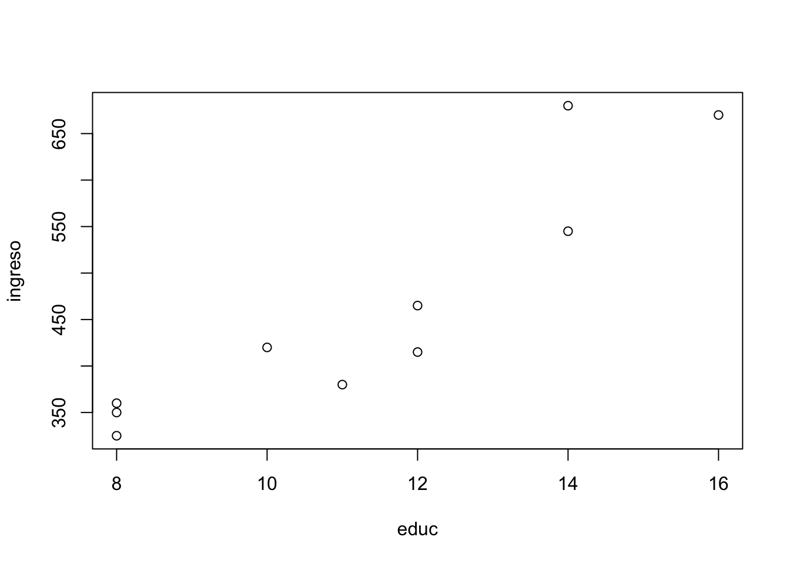
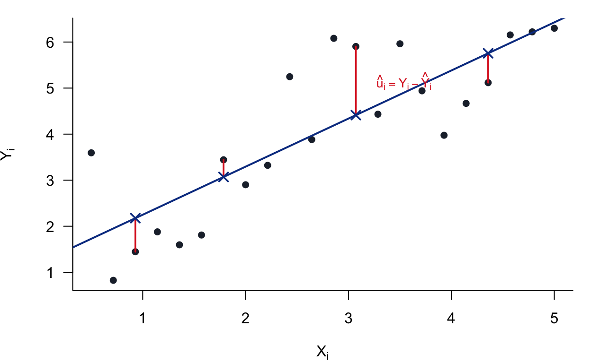
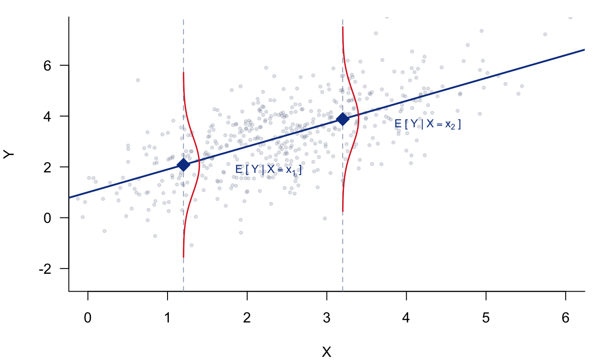
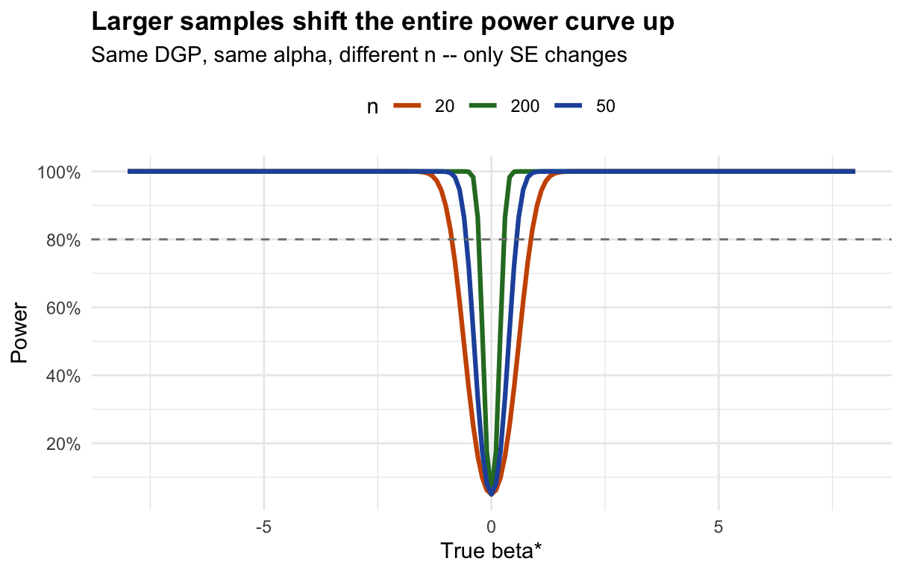
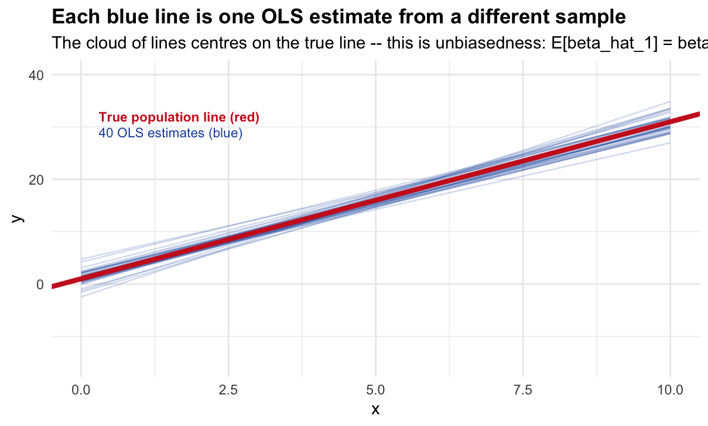
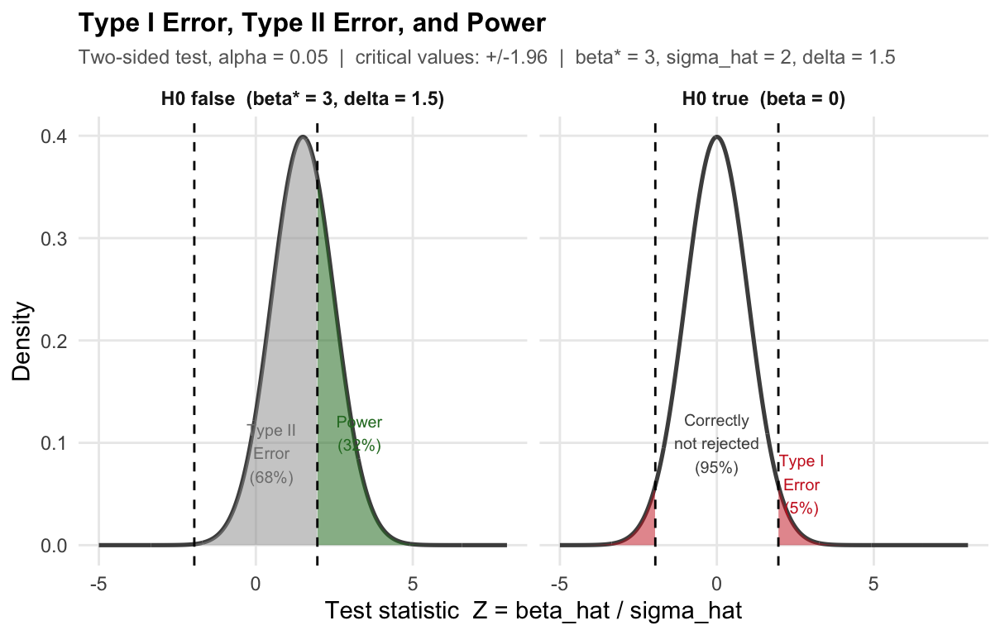
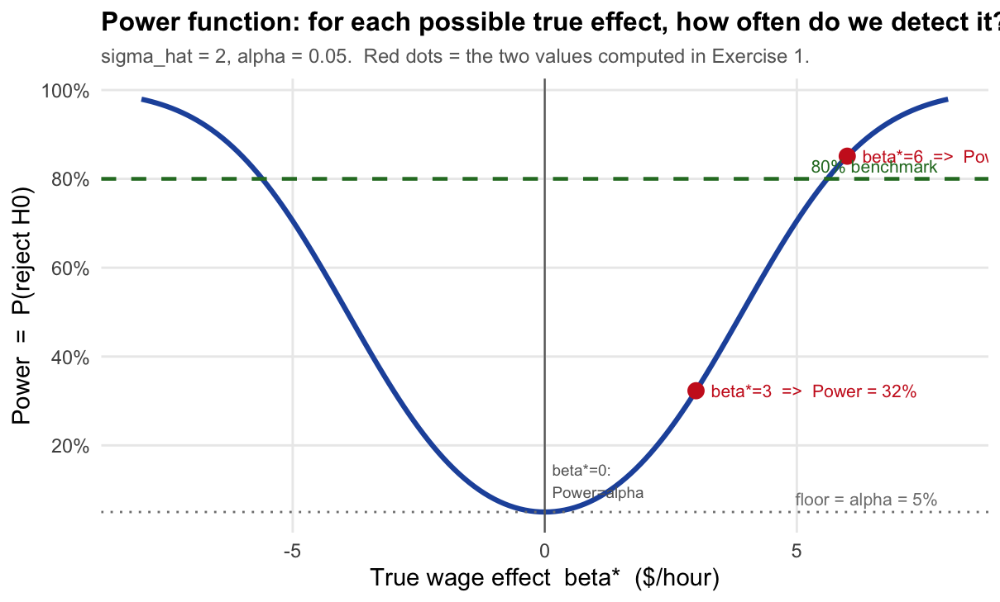
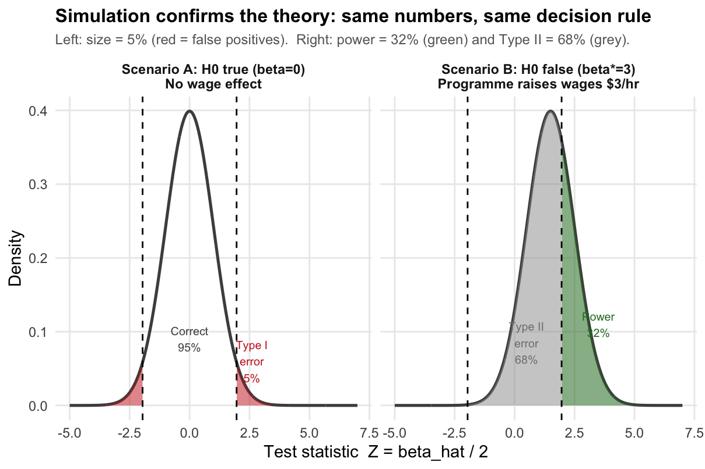

1 Introduction
These notes have been updated and adapted for the course ECON 326: Introduction to Econometrics II, at the University of British Columbia (UBC), 2026.
2 Tutorial 1: Data Analysis with R
These notes have been updated and adapted for the course ECON 326: Introduction to Econometrics II, an undergraduate course at the University of British Columbia (UBC), 2026. These are the notes for the tutorial 1. This is an introduction to R and R Studio. ## Introduction to R and RStudio
This chapter introduces the basic workflow for working with R through RStudio. The goal is not only to learn commands, but also to develop good habits for writing clean, reproducible, and well-documented code.
2.0.1 Why use R?
R is one of the most widely used programming languages for data analysis in Economics and the Social Sciences. Its main advantages are:
- Open source: R is free and has an active community that constantly develops new tools.
- Versatility: it supports statistical and econometric analysis, data cleaning, visualization, and automation (including tasks like web scraping).
- Reproducibility: scripts and reports allow you to document and replicate results reliably.
- Labor market value: open-source programming languages are increasingly demanded across research and industry.
In this course we will treat R not as a “calculator”, but as a programming language: we will write code, create objects, use functions systematically, and build routines that scale to larger projects.
2.0.2 Key concepts (vocabulary of the course)
Before writing code, it is important to define the core terms that will appear throughout the course:
- RStudio: a Graphical User Interface (GUI) designed to make working with R easier.
- Objects: anything you store in memory (datasets, variables, lists, plots, models, etc.).
- Functions: operations that take inputs and return outputs (e.g.,
mean(x),lm(y ~ x)). - Packages: collections of functions grouped by purpose (e.g.,
dplyr,ggplot2,rio). - Scripts / Code: files containing the commands that define your analysis pipeline.
2.0.3 Learning resources
To learn R efficiently, you should rely on three types of resources: cheat sheets, forums, and structured books.
- Cheat sheets: short summaries of commands and workflows.
Available at: https://www.rstudio.com/resources/cheatsheets/
- Forums and websites:
- Stack Overflow: https://stackoverflow.com/questions/tagged/r
- Medium: https://preettheman.medium.com/awesome-tricks-every-r-coder-should-know-c4220cd2cfbc
- Posit Blog (formerly RStudio): https://posit.co/
- Books:
- R for Data Science: https://r4ds.had.co.nz/
- Posit resources in Spanish: https://posit.co/resources/videos/
- Bookdown: https://bookdown.org/
2.0.4 RStudio interface
RStudio is a convenient “vehicle” for working with R. The interface usually displays four main panels, which help you organize your work:
- Scripts (Source): where you write and save code.
- Console: where R runs commands and prints results.
- Environment / History: where you see the objects created in memory.
- Files / Plots / Packages / Help: tools to navigate folders, view plots, manage packages, and read documentation.
A key takeaway is that most of your work should live in the Script, not in the Console. The Console is useful for quick checks, but scripts are what ensure reproducibility.
You can customize RStudio via: Tools → Global Options (font size, theme, layout, etc.). The purpose is to make your workflow as intuitive and efficient as possible.
2.1 Writing code: comments, structure and cleaning the environment
2.1.2 Outlines (code indexing)
RStudio allows you to structure scripts using headings. This creates an outline that helps navigation in long files.
- Open outline:
Ctrl + Shift + O
Headings can be hierarchical:
# The most important
## This is a bit less important
### This is a bit less important than the previous one
#### The least importantKeeping the outline updated is not optional: as the script grows, the outline becomes one of the main tools to navigate your code efficiently. If headings are outdated or inconsistent, the outline loses its usefulness and long scripts become harder to maintain.
2.1.3 Cleaning in R: environment vs console
When working in R, it is important to distinguish between two different things:
- The environment (memory): where R stores the objects you create (datasets, vectors, models, plots, etc.).
- The console (screen): where commands and results are printed.
Cleaning the environment is about deleting objects stored in memory.
Cleaning the console is only about making the screen look “clean” — it does not delete anything.
Remove all objects from the environment
Remove only one object
2.2 Package installation, libraries and help
In R, most of the tools we use are contained in packages. A package is simply a collection of functions designed for a specific purpose (e.g., data cleaning, plotting, importing files, estimation).
A key distinction is the following:
- Packages are installed once on your computer.
- Packages must be loaded every time you open a new R session in order to use them.
This difference is crucial: many beginner errors come from confusing “installing” with “loading”.
2.2.1 Libraries
There are two standard ways to install packages in RStudio:
- Using the Packages tab in the bottom-right panel.
- Using commands directly in R.
Many packages at the same time:
Common error:
In general, it is a good idea to install them at the beginning of your work, since we commonly use the same libraries when doing data analysis. With this function, we tell R to install the package if it is not installed (something typical when we switch computers):
Load libraries:
If we want to see what is inside each package:
Important: the package must be installed once, but loaded every time it is used. There are often updates. To check and install them:
Alternatively, I can link a package to a function using ::. If I do this, it is not necessary to load the library in order to use that specific function. However, the recommended practice is to load all the libraries of the packages I will use at the beginning.
2.2.2 Help function
About a specific function:
About a specific package:
2.2.3 Useful Shortcuts
Esc: interrupt the current commandCtrl + s: savetab: autocompleteCtrl + Enter: run lineCtrl + Shift + C: comment/uncomment<-: Alt + - / option + -%>%: Ctrl + Shift + M (pipe)Ctrl + l: clear consoleCtrl + Alt + b: run everything up to here (the arrow keys in the console allow you to view the most recent commands used)Shift + lines: select multiple linesCtrl + f: find/replaceCtrl + Up Arrow(in the console): view previously used commands
2.2.3.1 Identify the package of a function
Sometimes we want to know which package a given function belongs to. For that, check: https://sebastiansauer.github.io/finds_funs/ `
Note that a + sign appears in the console. In these cases, RStudio stops because you probably forgot a ) or a #. You must correct the error, run the code again, and then press Esc in the console to continue executing commands.
2.3 R Markdown - Reproducible research
R Markdown is one of the most useful tools in applied data analysis because it allows you to combine explanatory text with executable code in a single document. The key idea is simple:
You write the analysis once, and every time the data changes, you can re-run the document to automatically update tables, figures, and results.
This makes your work:
- Automatic: outputs are generated by code (not manually copied).
- Reproducible: anyone can re-run the document and obtain the same results.
- Well documented: results are always accompanied by explanations, interpretation, and methodology.
In practice, an R Markdown file (.Rmd) works like a hybrid between a report and a script: it contains written text (like a Word document) and chunks of code (like an R script). When you compile (“knit”) the file, R executes the code chunks and inserts the results (tables, plots, numbers) directly into the final report.
2.3.1 What can R Markdown produce?
An .Rmd file can generate many different types of outputs, such as:
- Word reports (
.docx) - PDF reports (
.pdf) - HTML reports (
.html) - Presentations (slides)
- Dashboards (interactive documents)
More importantly, an .Rmd file can include all elements that typically appear in a data analysis:
- plain text explanations
- R code chunks
- tables
- plots
- regression output
- automatically updated statistics (means, SDs, p-values, etc.)
2.3.2 When is R Markdown especially useful?
R Markdown is particularly valuable in two common situations:
Routine reports
Example: a weekly report with updated descriptive statistics and graphs.
Instead of rewriting the report every week, you update the data and re-knit.Reports for subsets of a dataset
Example: a dataset contains several countries. You want one report per country.
With R Markdown, you can parameterize the report and automatically generate one output per country.
The general lesson is: if you are repeating work manually, it can probably be automated with R Markdown.
2.4 Basic concepts
To understand R Markdown, you need to distinguish the following components:
2.4.1 Markdown (.md)
Markdown is a simple plain-text language to format documents. For example:
# Titlecreates a section title**bold**produces bold text- lists, links, and images are easy to write
Markdown files have extension .md.
2.4.2 R Markdown (.Rmd)
R Markdown extends Markdown by allowing you to embed R code directly into the document. Files have extension .Rmd.
The most important feature is that R code is executed and its output is included in the report. This is what makes the document dynamic and reproducible.
2.4.3 knitr
knitr is the R package responsible for:
- reading the
.Rmdfile - identifying code chunks
- executing the R code
- inserting the results (tables/figures/output) into the document
In other words: knitr is the engine that turns the .Rmd file into a report.
2.4.4 Pandoc
Pandoc is the tool that converts the report into a final format such as PDF, Word, or HTML.
It takes the document produced by knitr and transforms it into a clean formatted file.
Pandoc is installed automatically with RStudio, so you do not need to install it manually.
2.4.5 Process (how everything works together)
The workflow is:
- You write text and R code in a single
.Rmddocument. knitrexecutes the code chunks.- Pandoc converts the final output into PDF/Word/HTML.

2.4.6 Your first R Markdown file
To create your first .Rmd document in RStudio:
- Go to: File → New File → R Markdown
- Choose the output format: report / presentation / dashboard
- Set the document title and author


The most common starting point is a simple report that outputs to HTML or Word.
2.4.7 Working directory (critical detail)
A frequent source of confusion in R Markdown is the working directory.
The general rule is:
The working directory of an
.Rmdfile is the folder where the.Rmdfile is saved.
This means that if your .Rmd file is saved in a folder, R will look for datasets and external files in the same folder (unless you specify full paths).
For this course, we will keep things simple:
- store your data in the same folder as the .Rmd file
- avoid complicated paths until you gain familiarity
This is a best practice for beginners because it reduces file-loading errors.
2.4.8 Components of an R Markdown file
An R Markdown file has three main components:
YAML header
A block at the top of the file containing metadata (title, author, output type).Markdown text
Where you write narrative explanations: motivation, steps, interpretation.Code chunks
Blocks of R code used for loading packages, importing data, transforming variables, estimating models, and generating plots.

A code chunk looks like this:
A typical workflow is:
- YAML sets format + structure
- Markdown text explains what you are doing
- code chunks do the analysis and generate outputs

2.4.9 Why is this powerful?
In Word/Excel workflows, people often: - run regressions in one place, - copy results into a document, - manually update tables and plots.
This is slow and error-prone.
With R Markdown: - your report is generated directly from code, - results are always consistent with data, - there is no manual copy/paste.
That is why R Markdown is considered a core tool for reproducible research.
### Working directory
- The working directory of a
.Rmdfile is the folder where the file is saved. - Therefore, R will search for files in the same folder where the
.Rmdfile is stored. - For this exercise, we will simply keep the data we use in the same folder as the
.Rmdfile.
2.4.10 Components of R Markdown
- YAML: set title, date, and output type.
- Markdown text: write narrative text.
- Code chunk: load packages, data, and create visualizations.
2.5 Object manipulation
2.5.0.1 Using R as a calculator / running commands
You can run commands in R in an interactive way, just like using a calculator. To do this, select the line(s) of code you want to execute and press:
Ctrl + Enter(Windows)Cmd + Enter(Mac)
This allows you to run commands separately (one line at a time or a selected block), without executing the entire script.
## [1] 4## [1] 6.7082042.5.0.2 Running all instructions
To execute the entire script (i.e., run all commands in the file at once), you have several options:
- Click Source (top-right of the Script panel) to run the whole script.
- Use the menu: Code → Run Region → Run All.
- Shortcut:
Ctrl + Alt + R(Windows) /Cmd + Option + R(Mac)
Running the full script is useful when you want to reproduce the complete workflow from start to finish (e.g., cleaning data, generating tables, producing plots).
## [1] 4## [1] 6.708204## [1] 7## [1] 20## [1] 2## [1] 279936## [1] 8.272681e+59## [1] 2.302585## [1] 0## [1] 9.539392## [1] 7Even large operations can be executed this way. For example, you can select and run a full block of code (data imports, transformations, loops, regressions, plots) instead of running commands one by one. This is especially useful when your analysis requires multiple steps that must be executed in the correct order.
## [1] 3292752213You can even work with complex numbers (imaginary numbers) in R.
In R, the imaginary unit is written as i, and complex numbers can be used in arithmetic operations just like real numbers.
Example:
## [1] 3.535534+10.53553i2.5.0.3 Object creation: assignment and functions
In R, we create objects using the assignment operator <-. This is one of the most important operations in the language, because almost everything we do in R consists of creating and transforming objects (vectors, datasets, models, plots, etc.).
It is also possible to assign values using =, but this is not recommended in general practice, since it can be confusing (especially inside functions). The recommended standard in most applied work is to use <-.
## [1] 62.6 Understanding Assignments and Functions in R
Assignments in R are silent operations. When we create an assignment, it stores the value but does not automatically display it in the console. To see the result of an assignment, we must explicitly call the object by typing its name or using the print() function.
While simple assignments are straightforward, the real power of R lies in generating assignments through functions. Functions are the central component of working with R. Some functions come pre-installed with the base R installation, while others must be obtained from external packages. Additionally, users can write their own custom functions. Functions are typically written with parentheses, such as filter(). In some cases, functions are associated with specific packages and are referenced using the double colon notation, for example dplyr::filter().
Let’s explore how functions work through several examples. First, we can apply a simple mathematical function:
## [1] 7This calculates the square root of 49. We can also apply functions to datasets. For instance, we can obtain summary statistics for a variable within a dataset:
## Min. 1st Qu. Median Mean 3rd Qu. Max.
## 10.40 15.43 19.20 20.09 22.80 33.90The mtcars dataset comes pre-installed with R and contains information about various car models. To see other datasets that come bundled with R, we can use the data() function:
2.6.1 Working with Vectors and Arithmetic Functions
We can create objects by assigning values to them and then combine these objects into vectors. A vector is a fundamental data structure in R that contains elements of the same type:
## [1] 2 3Here, we create two individual numeric objects (x and y) and then combine them into a vector z using the concatenate function c(). Once we have a vector, we can apply various statistical functions to it:
## [1] 2.5## [1] 2.5These functions calculate the arithmetic mean and median of the values in the vector, respectively.
2.6.2 Creating Relationships Between Objects
We can create new objects based on calculations performed on existing objects. For example, we can store the mean of a vector as a new object:
We can also create objects through arithmetic operations:
R allows us to perform logical comparisons between objects:
## [1] TRUEThis returns a logical value (TRUE or FALSE) indicating whether a is greater than b.
2.6.3 The Silent Nature of Assignments
As mentioned earlier, assignments do not produce output unless we explicitly request it. To display the contents of an object, we simply type its name or use the print() function:
## [1] 13## [1] 8## [1] 13## [1] 82.6.4 Building Complex Objects from Functions
We can build more complex objects by combining multiple operations. For instance, we can create a vector from previously defined objects and calculate its mean:
## [1] 10.5## [1] 10.5Let’s work through another example where we calculate the mean of two values:
## [1] 3.5To clear our workspace and remove specific objects, we can use the rm() function:
## Warning in rm(promedio): object 'promedio' not foundThe first command removes all objects from the environment, while the second removes a specific object.
2.6.5 Working with Real Data: Education and Income Example
Proper spacing and organization of code is essential for readability and maintenance. Let’s create two vectors representing education (in years) and income for ten individuals using the concatenate function c():
educ <- c(8, 12, 8, 11, 16, 14, 8, 10, 14, 12)
ingreso <- c(325, 415, 360, 380, 670, 545, 350, 420, 680, 465)Once we have these vectors, we can calculate various descriptive statistics. We can compute the mean income, the standard deviation of income, and the correlation between education and income:
## [1] 461## [1] 129.1382## [1] 0.9110521The mean provides the average income, the standard deviation measures the dispersion of income values around the mean, and the correlation coefficient quantifies the strength and direction of the linear relationship between education and income.
2.6.6 Visualizing the Relationship
To visually examine the relationship between education and income, we can create a scatter plot:

This produces a graph with education on the x-axis and income on the y-axis, allowing us to see the pattern of association between these two variables.
2.6.7 Estimating a Linear Regression Model
Finally, we can formally model the relationship between education and income using linear regression. The lm() function estimates a linear model where income is the dependent variable and education is the independent variable:
##
## Call:
## lm(formula = ingreso ~ educ)
##
## Coefficients:
## (Intercept) educ
## -8.71 41.57This function returns the estimated coefficients for the linear model, providing us with the intercept and the slope coefficient for education. The slope coefficient indicates how much income is expected to change for each additional year of education.
2.7 Object Naming and Types
2.7.1 Naming Objects
The following exercise helps us understand the rules for valid variable names in R.
Exercise: Valid Variable Names
Consider the following examples. Which of these are valid variable names in R?
# min_height # Valid: uses underscore
# max.height # Valid: uses dot
# _age # Invalid: starts with underscore
# .mass # Valid: starts with dot (but creates hidden variable)
# MaxLength # Valid: uses camel case
# Min-length # Invalid: uses hyphen (minus sign)
# 2widths # Invalid: starts with number
# Calsius2kelvin # Valid: number in middle is allowedIn R, variable names must follow these rules: they can contain letters, numbers, dots, and underscores, but they must start with a letter or a dot (if starting with a dot, the second character cannot be a number). Variable names cannot contain spaces or special characters like hyphens, and they cannot start with numbers or underscores.
2.7.2 Types of Objects
2.7.2.1 Vectors
R operates component by component, which makes it very straightforward to work with vectors and matrices. Vectors are one-dimensional arrays that can hold numeric data, character data, or logical data, but all elements must be of the same type.
To create a vector, we use the c() function (which stands for “concatenate” or “combine”):
Let’s examine what happens when we add vectors together:
## Warning in x + y: longer object length is not a multiple of shorter object
## length## [1] 7 9 11 10 12Now, let’s consider two vectors of different lengths:
We can check the length of each vector using the length() function:
## [1] 4## [1] 3What happens when we try to add vectors of different lengths?
## Warning in x + y: longer object length is not a multiple of shorter object
## length## [1] 2 4 6 5IMPORTANT: In this case, R performs the operation anyway, but it gives us a warning that the lengths differ. R uses “vector recycling,” where the shorter vector is repeated to match the length of the longer vector. A crucial characteristic of vectors is that they can only concatenate elements of the same type; otherwise, R will coerce all elements to a common type (usually character if there’s a mix).
Let’s explore more vector operations:
x <- rep(1.5:9.5, 4) # generates repetitions of the defined values
y <- c(20:30)
x1 <- c(1, 2)
x2 <- c(3, 4)
x3 <- c(x1, x2)
x4 <- c(c(1, 2), c(3, 4))2.7.2.1.1 Subsetting Vectors
We can extract specific elements from a vector using square bracket notation:
## [1] 22## [1] 21 22 23## [1] 23 22 21## [1] 21 25## [1] 21 NA2.7.2.2 Matrices
Matrices are two-dimensional arrays where all elements must be of the same type. They are particularly useful for mathematical operations and organizing data in rows and columns.
2.7.2.2.1 Defining Matrices
The general syntax for creating a matrix is:
my.matrix <- matrix(vector,
ncol = num_columns,
nrow = num_rows,
byrow = logical_value,
dimnames = list(vector_row_names,
vector_column_names))To create matrices, we use the matrix() function:
While it is not necessary to explicitly write data=, doing so improves code readability and makes the intent clearer.
## [,1] [,2]
## [1,] 1 3
## [2,] 2 4## [,1] [,2]
## [1,] 1 3
## [2,] 2 4Note that by DEFAULT, R fills the matrix column by column. We can explicitly specify that we want to fill the matrix row by row using the byrow argument:
## Warning in matrix(data = c(1:4), nrow = 3, ncol = 2, byrow = TRUE): data
## length [4] is not a sub-multiple or multiple of the number of rows [3]## [,1] [,2]
## [1,] 1 2
## [2,] 3 4
## [3,] 1 2We can determine the dimensions of a matrix using the dim() function:
## [1] 3 2## [1] 3## [1] 2## [,1] [,2]
## [1,] 1 2
## [2,] 3 4If the vector is shorter than the matrix dimensions, R will recycle the values to fill the matrix:
## Warning in matrix(c(1, 2, 3, 4), nrow = 2, ncol = 3, byrow = 2): data
## length [4] is not a sub-multiple or multiple of the number of columns [3]## [,1] [,2] [,3]
## [1,] 1 2 3
## [2,] 4 1 2Note that the order in any matrix is always rows × columns. We can also omit either the number of rows or columns, and R will calculate the missing dimension:
## [,1] [,2]
## [1,] 1 2
## [2,] 3 4When creating empty matrices, we must define the dimensions:
## [,1] [,2] [,3]
## [1,] NA NA NA
## [2,] NA NA NA
## [3,] NA NA NA2.7.2.2.2 Naming Rows and Columns
We can assign names to rows and columns directly in the matrix() function:
## Y1 Y2
## X1 1 3
## X2 2 4Alternatively, we can use the colnames() and rownames() functions:
## Variable 1 Variable 2
## a1 1 3
## a2 2 42.7.2.2.3 Adding Rows or Columns to a Matrix
Let’s create a new vector to add to our matrix:
We can combine matrices and vectors using rows (note that the vector name becomes the row name):
## Variable 1 Variable 2
## a1 1 3
## a2 2 4
## w 5 6We can also combine using columns:
## Variable 1 Variable 2 w
## a1 1 3 5
## a2 2 4 6What happens if they have different numbers of rows and/or columns? R will recycle the shorter vector or observation to match the longer dimension:
## [,1] [,2] [,3]
## [1,] 1 4 7
## [2,] 2 5 8
## [3,] 3 6 9## [1] 5 6## Warning in rbind(x, y): number of columns of result is not a multiple of
## vector length (arg 2)## [,1] [,2] [,3]
## 1 4 7
## 2 5 8
## 3 6 9
## y 5 6 52.7.2.2.4 Converting Vectors to Matrices
We can convert a vector to a matrix by assigning dimensions:
## [1] 1 2 3 4 5 6 7 8 9 10## [,1] [,2] [,3] [,4] [,5]
## [1,] 1 3 5 7 9
## [2,] 2 4 6 8 102.7.2.2.5 Transposing Matrices
We can transpose a matrix (swap rows and columns) using the t() function:
## [,1] [,2] [,3]
## [1,] 1 2 3
## [2,] 4 5 6
## [3,] 7 8 92.7.2.2.6 Subsetting Matrices
We can extract specific elements, rows, or columns from a matrix. For example, to get the second and fourth elements of the second row:
## [,1] [,2] [,3] [,4]
## [1,] 1 3 5 7
## [2,] 2 4 6 8## [1] 1## [1] 1 3 5 7## [1] 3 4## [1] 4 8Matrix subsetting uses the format [row, column], where leaving either position blank returns all rows or all columns, respectively.
2.8 Arrays
Arrays are multidimensional data structures that extend the concept of matrices. While matrices are two-dimensional, arrays can have three or more dimensions. They are particularly useful when working with data that naturally has multiple dimensions, such as time series data across different regions and variables.
2.8.1 Creating Arrays
The basic syntax for creating an array is: array(data, dim, dimnames)
## , , 1
##
## [,1] [,2] [,3] [,4]
## [1,] 1 3 5 7
## [2,] 2 4 6 8
##
## , , 2
##
## [,1] [,2] [,3] [,4]
## [1,] 9 11 13 15
## [2,] 10 12 14 16
##
## , , 3
##
## [,1] [,2] [,3] [,4]
## [1,] 17 19 21 23
## [2,] 18 20 22 24The array above has dimensions 2 × 4 × 3, meaning it has 2 rows, 4 columns, and 3 “layers” or levels in the third dimension.
2.8.2 Adding Dimension Names
Dimension names make arrays much easier to interpret and work with:
# Define names for each dimension
dim1 <- c("row1", "row2")
dim2 <- c("col1", "col2", "col3", "col4")
dim3 <- c("level1", "level2", "level3")
# Create array with named dimensions
my_array <- array(1:24, c(2, 4, 3),
dimnames = list(dim1, dim2, dim3))
my_array## , , level1
##
## col1 col2 col3 col4
## row1 1 3 5 7
## row2 2 4 6 8
##
## , , level2
##
## col1 col2 col3 col4
## row1 9 11 13 15
## row2 10 12 14 16
##
## , , level3
##
## col1 col2 col3 col4
## row1 17 19 21 23
## row2 18 20 22 242.8.3 Accessing Array Elements
Arrays can be subset using square brackets, similar to matrices but with additional dimensions:
## [1] 19## col1 col2 col3 col4
## row1 1 3 5 7
## row2 2 4 6 8## level1 level2 level3
## col1 1 9 17
## col2 3 11 19
## col3 5 13 21
## col4 7 15 23## [1] 192.9 Lists
Lists are R’s most flexible data structure. Unlike vectors, which must contain elements of the same type, lists can contain elements of different types, including other lists, vectors, matrices, dataframes, and even functions.
2.9.1 Creating Lists
# Create a heterogeneous list
my_list <- list(
numbers = c(1, 2, 3),
text = "Hello R",
matrix = matrix(1:6, nrow = 2),
flag = TRUE
)
my_list## $numbers
## [1] 1 2 3
##
## $text
## [1] "Hello R"
##
## $matrix
## [,1] [,2] [,3]
## [1,] 1 3 5
## [2,] 2 4 6
##
## $flag
## [1] TRUE2.9.2 Accessing List Components
Lists have three main ways to access their components:
# Method 1: Double brackets [[ ]] - extracts the element itself
my_list[[1]] # Returns the numeric vector## [1] 1 2 3## [1] "Hello R"# Method 3: Single brackets [ ] - returns a sublist
my_list[1] # Returns a list containing the first element## $numbers
## [1] 1 2 3## [1] 32.9.3 Adding and Removing List Elements
# Adding new components
my_list$new_vector <- c(10, 20, 30)
# Removing components (set to NULL)
my_list$flag <- NULL
# View updated structure
str(my_list)## List of 4
## $ numbers : num [1:3] 1 2 3
## $ text : chr "Hello R"
## $ matrix : int [1:2, 1:3] 1 2 3 4 5 6
## $ new_vector: num [1:3] 10 20 302.10 Data Frames
Data frames are the workhorse data structure for statistical analysis in R. They are similar to matrices but can contain columns of different types, making them perfect for representing datasets where variables may be numeric, character, or logical.
2.10.1 Creating Data Frames
# Create a data frame
df <- data.frame(
ID = 1:5,
Name = c("Alice", "Bob", "Charlie", "Diana", "Eve"),
Age = c(25, 30, 35, 28, 32),
Employed = c(TRUE, TRUE, FALSE, TRUE, TRUE)
)
df## ID Name Age Employed
## 1 1 Alice 25 TRUE
## 2 2 Bob 30 TRUE
## 3 3 Charlie 35 FALSE
## 4 4 Diana 28 TRUE
## 5 5 Eve 32 TRUE2.10.2 Exploring Data Frame Structure
## 'data.frame': 5 obs. of 4 variables:
## $ ID : int 1 2 3 4 5
## $ Name : chr "Alice" "Bob" "Charlie" "Diana" ...
## $ Age : num 25 30 35 28 32
## $ Employed: logi TRUE TRUE FALSE TRUE TRUE## [1] 5 4## [1] 5## [1] 4## [1] "ID" "Name" "Age" "Employed"## [1] "ID" "Name" "Age" "Employed"## ID Name Age Employed
## Min. :1 Length:5 Min. :25 Mode :logical
## 1st Qu.:2 Class :character 1st Qu.:28 FALSE:1
## Median :3 Mode :character Median :30 TRUE :4
## Mean :3 Mean :30
## 3rd Qu.:4 3rd Qu.:32
## Max. :5 Max. :35## ID Name Age Employed
## 1 1 Alice 25 TRUE
## 2 2 Bob 30 TRUE
## 3 3 Charlie 35 FALSE## ID Name Age Employed
## 4 4 Diana 28 TRUE
## 5 5 Eve 32 TRUE2.10.3 Subsetting Data Frames
Data frames combine the subsetting behavior of both matrices and lists:
## [1] "Alice" "Bob" "Charlie" "Diana" "Eve"## [1] 25 30 35 28 32## [1] 25 30 35 28 32## ID Name Age Employed
## 2 2 Bob 30 TRUE## [1] 30## [1] 30## ID Name Age Employed
## 2 2 Bob 30 TRUE
## 3 3 Charlie 35 FALSE
## 5 5 Eve 32 TRUE## Name Age
## 1 Alice 25
## 2 Bob 30
## 4 Diana 28
## 5 Eve 322.10.4 Tibbles: Modern Data Frames
The tibble package (part of tidyverse) provides an enhanced version of data frames:
library(tibble)
# Create a tibble
tb <- tibble(
ID = 1:5,
Name = c("Alice", "Bob", "Charlie", "Diana", "Eve"),
Age = c(25, 30, 35, 28, 32),
Employed = c(TRUE, TRUE, FALSE, TRUE, TRUE)
)
tb## # A tibble: 5 × 4
## ID Name Age Employed
## <int> <chr> <dbl> <lgl>
## 1 1 Alice 25 TRUE
## 2 2 Bob 30 TRUE
## 3 3 Charlie 35 FALSE
## 4 4 Diana 28 TRUE
## 5 5 Eve 32 TRUE2.11 Data Types and Type Checking
Understanding data types is crucial for avoiding errors and writing robust R code.
2.11.1 Main Data Types
## [1] "character"## [1] "numeric"## [1] "integer"## [1] "logical"## [1] "complex"2.11.2 Type Checking Functions
## [1] TRUE## [1] FALSE## [1] FALSE## [1] FALSE## [1] TRUE2.11.3 Type Coercion
When R combines different types, it follows a coercion hierarchy: logical → integer → numeric → complex → character
## [1] 1 1 2## [1] "1" "2" "three"## [1] "42"## [1] 3.14## [1] TRUE2.11.4 Missing Values
R uses NA (Not Available) to represent missing values.
## [1] FALSE FALSE TRUE FALSE TRUE## [1] 2## [1] 1 2 4## [1] 1 2 4
## attr(,"na.action")
## [1] 3 5
## attr(,"class")
## [1] "omit"## [1] NA## [1] 2.3333332.11.5 Conditional Statements
Conditional statements allow your code to make decisions and execute different code based on conditions.
2.12 If-Else Statements
## [1] "x is greater than 5"# If-else
x <- 3
if (x > 5) {
print("x is greater than 5")
} else {
print("x is less than or equal to 5")
}## [1] "x is less than or equal to 5"# If-else if-else chain
score <- 75
if (score >= 90) {
grade <- "A"
} else if (score >= 80) {
grade <- "B"
} else if (score >= 70) {
grade <- "C"
} else {
grade <- "F"
}
grade## [1] "C"2.13 Vectorized If-Else: ifelse()
The ifelse() function is vectorized, making it perfect for applying conditions to entire vectors:
# Create a vector of test scores
scores <- c(92, 75, 88, 65, 95, 70)
# Assign grades using ifelse
grades <- ifelse(scores >= 80, "Pass", "Fail")
grades## [1] "Pass" "Fail" "Pass" "Fail" "Pass" "Fail"# Nested ifelse for multiple conditions
detailed_grades <- ifelse(scores >= 90, "A",
ifelse(scores >= 80, "B",
ifelse(scores >= 70, "C", "F")))
detailed_grades## [1] "A" "C" "B" "F" "A" "C"2.13.1 Functions
Functions are reusable blocks of code that perform specific tasks. They are fundamental to writing clean, maintainable code.
2.13.2 Creating Functions
## [1] 16## [1] 1 4 9 16 252.13.3 Functions with Multiple Arguments
# Function with default parameter values
power <- function(base, exponent = 2) {
result <- base^exponent
return(result)
}
power(3) # Uses default exponent = 2## [1] 9## [1] 27## [1] 162.13.4 Practical Example: Statistical Summary Function
# Create a function that returns multiple statistics
summary_stats <- function(x, na.rm = TRUE) {
list(
mean = mean(x, na.rm = na.rm),
median = median(x, na.rm = na.rm),
sd = sd(x, na.rm = na.rm),
min = min(x, na.rm = na.rm),
max = max(x, na.rm = na.rm),
n = length(x),
n_missing = sum(is.na(x))
)
}
# Test the function
test_data <- c(1, 2, 3, NA, 5, 6, 7, NA, 9, 10)
summary_stats(test_data)## $mean
## [1] 5.375
##
## $median
## [1] 5.5
##
## $sd
## [1] 3.248626
##
## $min
## [1] 1
##
## $max
## [1] 10
##
## $n
## [1] 10
##
## $n_missing
## [1] 22.14 Loops and Iteration
2.14.1 For Loops
For loops iterate over a sequence of values:
## [1] "Iteration 1"
## [1] "Iteration 2"
## [1] "Iteration 3"
## [1] "Iteration 4"
## [1] "Iteration 5"# Iterating over vector elements
fruits <- c("apple", "banana", "cherry")
for (fruit in fruits) {
print(paste("I like", fruit))
}## [1] "I like apple"
## [1] "I like banana"
## [1] "I like cherry"## [1] 1 4 9 16 25 36 49 64 81 1002.14.2 While Loops
While loops continue until a condition becomes FALSE:
# Basic while loop
counter <- 1
while (counter <= 5) {
print(paste("Counter is", counter))
counter <- counter + 1
}## [1] "Counter is 1"
## [1] "Counter is 2"
## [1] "Counter is 3"
## [1] "Counter is 4"
## [1] "Counter is 5"# Practical example: finding first value above threshold
x <- 1
while (2^x < 1000) {
x <- x + 1
}
print(paste("2^", x, "=", 2^x, "is the first power of 2 above 1000"))## [1] "2^ 10 = 1024 is the first power of 2 above 1000"2.14.3 Apply Family Functions
The apply family provides functional programming alternatives to loops. They are often faster and more concise.
2.14.4 lapply: Apply Function to List/Vector
lapply always returns a list:
# Apply function to each element
numbers <- list(a = 1:5, b = 6:10, c = 11:15)
# Calculate mean of each element
lapply(numbers, mean)## $a
## [1] 3
##
## $b
## [1] 8
##
## $c
## [1] 13## $a
## [1] 1 4 9 16 25
##
## $b
## [1] 36 49 64 81 100
##
## $c
## [1] 121 144 169 196 2252.14.5 sapply: Simplified Apply
sapply tries to simplify the result to a vector or matrix:
## a b c
## 3 8 13## a b c
## 55 330 855# When result can't be simplified, returns list like lapply
sapply(numbers, function(x) c(min = min(x), max = max(x)))## a b c
## min 1 6 11
## max 5 10 152.14.6 vapply: Type-Safe Apply
vapply requires you to specify the output type, making it safer and sometimes faster:
## a b c
## 3 8 13# For multiple return values
vapply(numbers, function(x) c(mean = mean(x), sd = sd(x)),
FUN.VALUE = numeric(2))## a b c
## mean 3.000000 8.000000 13.000000
## sd 1.581139 1.581139 1.5811392.15 Comparison and Best Practices
# Create example data
my_list <- list(
group1 = rnorm(100, mean = 10, sd = 2),
group2 = rnorm(100, mean = 15, sd = 3),
group3 = rnorm(100, mean = 20, sd = 4)
)
# lapply: Always returns list
result_l <- lapply(my_list, summary)
class(result_l)## [1] "list"## [1] "numeric"# vapply: Type-safe, better for production code
result_v <- vapply(my_list, mean, FUN.VALUE = numeric(1))
class(result_v)## [1] "numeric"Best Practices:
- Use lapply when you need a list output or when applying complex functions
- Use sapply for interactive analysis when you want simplified output
- Use vapply in production code or packages where type safety is important
2.16 Practical Applications
2.16.1 Example 1: Data Cleaning Pipeline
# Create sample data with issues
messy_data <- data.frame(
id = 1:6,
value = c(10, 20, NA, 40, 50, 60),
category = c("A", "B", "A", "C", "B", "A"),
valid = c(TRUE, TRUE, FALSE, TRUE, TRUE, TRUE)
)
# Function to clean and summarize
clean_and_summarize <- function(df) {
# Remove invalid rows
df_clean <- df[df$valid == TRUE, ]
# Remove missing values
df_clean <- df_clean[!is.na(df_clean$value), ]
# Calculate summary by category
categories <- unique(df_clean$category)
results <- lapply(categories, function(cat) {
subset_data <- df_clean[df_clean$category == cat, "value"]
c(
category = cat,
mean = mean(subset_data),
n = length(subset_data)
)
})
# Combine into data frame
do.call(rbind, results)
}
clean_and_summarize(messy_data)## category mean n
## [1,] "A" "35" "2"
## [2,] "B" "35" "2"
## [3,] "C" "40" "1"2.16.2 Example 2: Simulation Study
# Function to simulate and analyze data
simulate_experiment <- function(n_samples, effect_size) {
# Generate data
control <- rnorm(n_samples, mean = 100, sd = 15)
treatment <- rnorm(n_samples, mean = 100 + effect_size, sd = 15)
# Perform t-test
test_result <- t.test(treatment, control)
# Return key results
list(
effect_size = effect_size,
p_value = test_result$p.value,
significant = test_result$p.value < 0.05
)
}
# Run simulations for different effect sizes
effect_sizes <- seq(0, 10, by = 2)
simulation_results <- lapply(effect_sizes, function(es) {
simulate_experiment(n_samples = 50, effect_size = es)
})
# Convert to data frame for easy viewing
results_df <- do.call(rbind, lapply(simulation_results, as.data.frame))
results_df## effect_size p_value significant
## 1 0 0.0330407708 TRUE
## 2 2 0.4825550352 FALSE
## 3 4 0.3648947905 FALSE
## 4 6 0.0078056580 TRUE
## 5 8 0.2618240342 FALSE
## 6 10 0.0001524551 TRUE2.17 Summary
This tutorial covered essential advanced R programming concepts:
- Arrays: Multidimensional data structures for complex data
- Lists: Flexible containers for heterogeneous data
- Data Frames & Tibbles: Core structures for statistical data analysis
- Data Types: Understanding and working with different types
- Conditionals: Making decisions in code with if-else and ifelse
- Functions: Creating reusable, modular code
- Loops: For and while loops for iteration
- Apply Functions: Functional programming with lapply, sapply, and vapply
These tools form the foundation for efficient data analysis and statistical programming in R. Mastering them will enable you to write cleaner, more maintainable, and more efficient R code.
2.17.1 Key Takeaways
- Choose the right data structure: vectors for homogeneous data, lists for heterogeneous, data frames for tabular data
- Prefer vectorized operations over loops when possible
- Write functions to avoid repeating code
- Use apply functions instead of for loops for cleaner functional code
- Check and handle missing values explicitly
- Use type-safe functions (like vapply) in production code
2.17.2 Further Learning
To continue developing your R skills, explore:
- Advanced data manipulation with dplyr and data.table
- Functional programming with purrr
- Advanced visualization with ggplot2
- Writing efficient R code (vectorization, profiling)
- Creating R packages for reusable code
3 Tutorial 2: Simple linear Regression
3.1 Problem 1: Simple Linear Regression with Intercept
In Tutorial 1 we ran lm() and got a slope and an intercept. This tutorial asks: where do those numbers come from, and what do they optimize?
The goal of simple linear regression is to summarize the relationship between two variables — education and wages, match rates and 401(k) participation — with a straight line. That line cannot fit every data point perfectly. The question is: which line is best? OLS answers this by minimizing the sum of squared prediction errors. Squaring penalizes large mistakes more than small ones, produces a unique closed-form solution, and connects directly to variance decomposition and inference.
The error term \(\varepsilon_i\) (written \(u_i\) in Tutorial 3 onward, following Wooldridge — both denote the same object) captures everything that moves \(Y\) beyond \(X\): unobserved ability, luck, measurement error.
A picture of what we are doing. Each point is one observation. The blue line is a candidate fit. The red segments are the residuals — the vertical gaps between the data and the line. OLS chooses the line that makes those squared gaps as small as possible.

(#fig:ols-geometry)OLS minimizes the sum of squared vertical distances (red segments). The slope and intercept are chosen so no other line achieves a smaller total.
We study the simple linear regression with an intercept:
\[ Y_i = \beta_0 + \beta_1 X_i + \varepsilon_i, \qquad i = 1, \ldots, n \]
with the regularity condition \(\sum_{i=1}^n (X_i - \bar{X})^2 > 0\) (i.e., not all \(X_i\) are equal).
Sample means:
\[ \bar{Y} = \frac{1}{n} \sum_{i=1}^n Y_i, \qquad \bar{X} = \frac{1}{n} \sum_{i=1}^n X_i \]
OLS objective: Minimize the sum of squared residuals:
\[ S(\beta_0, \beta_1) = \sum_{i=1}^n \left( Y_i - \beta_0 - \beta_1 X_i \right)^2 \]
Definitions:
- Fitted values: \(\hat{Y}_i = \hat{\beta}_0 + \hat{\beta}_1 X_i\)
- Residuals: \(\hat{u}_i = Y_i - \hat{Y}_i\)
3.1.1 Derive the OLS Normal Equations
Differentiate \(S(\beta_0, \beta_1)\) with respect to \(\beta_0\) and \(\beta_1\) and set equal to zero.
First-Order Condition for \(\beta_0\):
\[ \frac{\partial S}{\partial \beta_0} = -2 \sum_{i=1}^n \left( Y_i - \beta_0 - \beta_1 X_i \right) = 0 \]
This simplifies to:
\[ \sum_{i=1}^n \left( Y_i - \beta_0 - \beta_1 X_i \right) = 0 \]
Expanding:
\[ \sum_{i=1}^n Y_i = n \beta_0 + \beta_1 \sum_{i=1}^n X_i \]
Solving for \(\beta_0\):
\[ \hat{\beta}_0 = \bar{Y} - \hat{\beta}_1 \bar{X} \]
First-Order Condition for \(\beta_1\):
\[ \frac{\partial S}{\partial \beta_1} = -2 \sum_{i=1}^n X_i \left( Y_i - \beta_0 - \beta_1 X_i \right) = 0 \]
This simplifies to:
\[ \sum_{i=1}^n X_i \left( Y_i - \beta_0 - \beta_1 X_i \right) = 0 \]
Derive the Slope in Centered Form:
Substitute \(\beta_0 = \bar{Y} - \beta_1 \bar{X}\) into the residual expression:
\[ Y_i - \beta_0 - \beta_1 X_i = Y_i - (\bar{Y} - \beta_1 \bar{X}) - \beta_1 X_i = (Y_i - \bar{Y}) - \beta_1 (X_i - \bar{X}) \]
Minimizing \(\sum_{i=1}^n \left[ (Y_i - \bar{Y}) - \beta_1 (X_i - \bar{X}) \right]^2\) with respect to \(\beta_1\) gives:
\[ \sum_{i=1}^n (X_i - \bar{X}) \left[ (Y_i - \bar{Y}) - \beta_1 (X_i - \bar{X}) \right] = 0 \]
Rearranging:
\[ \sum_{i=1}^n (X_i - \bar{X})(Y_i - \bar{Y}) = \beta_1 \sum_{i=1}^n (X_i - \bar{X})^2 \]
OLS Estimators:
\[ \boxed{\hat{\beta}_1 = \frac{\sum_{i=1}^n (X_i - \bar{X})(Y_i - \bar{Y})}{\sum_{i=1}^n (X_i - \bar{X})^2}} \]
\[ \boxed{\hat{\beta}_0 = \bar{Y} - \hat{\beta}_1 \bar{X}} \]
3.1.2 Residual Orthogonality Properties
These are the key properties that follow directly from the first-order conditions.
3.1.2.1 Residuals Sum to Zero
From the FOC for \(\beta_0\) evaluated at \((\hat{\beta}_0, \hat{\beta}_1)\):
\[ \sum_{i=1}^n \left( Y_i - \hat{\beta}_0 - \hat{\beta}_1 X_i \right) = 0 \]
Therefore:
\[ \sum_{i=1}^n \hat{u}_i = 0 \]
3.1.2.2 Residuals are Orthogonal to \(X\)
From the FOC for \(\beta_1\) evaluated at \((\hat{\beta}_0, \hat{\beta}_1)\):
\[ \sum_{i=1}^n X_i \left( Y_i - \hat{\beta}_0 - \hat{\beta}_1 X_i \right) = 0 \]
Therefore:
\[ \sum_{i=1}^n X_i \hat{u}_i = 0 \]
3.1.2.3 Residuals are Orthogonal to \((X_i - \bar{X})\)
Using the result \(\sum_{i=1}^n \hat{u}_i = 0\):
\[ \sum_{i=1}^n (X_i - \bar{X}) \hat{u}_i = \sum_{i=1}^n X_i \hat{u}_i - \bar{X} \sum_{i=1}^n \hat{u}_i = 0 - \bar{X} \cdot 0 = 0 \]
Therefore:
\[ \sum_{i=1}^n (X_i - \bar{X}) \hat{u}_i = 0 \]
3.1.2.4 Residuals are Orthogonal to fitted values
3.1.2.5 Question
Show that:
\[ \sum_{i=1}^n \hat Y_i \hat u_i = 0 \]
3.1.2.6 Solution
Write fitted values as \(\hat Y_i=\hat\beta_0+\hat\beta_1X_i\) and expand:
\[ \sum_{i=1}^n \hat Y_i\hat u_i = \sum_{i=1}^n (\hat\beta_0+\hat\beta_1X_i)\hat u_i = \hat\beta_0\sum_{i=1}^n \hat u_i + \hat\beta_1\sum_{i=1}^n X_i\hat u_i. \]
By A1, both sums are zero. Therefore:
\[ \sum_{i=1}^n \hat Y_i \hat u_i = 0 \]
Interpretation. The part OLS explains (\(\hat Y\)) and the part it cannot explain (\(\hat u\)) do not move together in the sample.
3.1.3 Properties of Fitted Values
3.1.3.1 The Regression Line Passes Through \((\bar{X}, \bar{Y})\)
Taking the average of fitted values:
\[ \overline{\hat{Y}} = \frac{1}{n} \sum_{i=1}^n \hat{Y}_i = \frac{1}{n} \sum_{i=1}^n (\hat{\beta}_0 + \hat{\beta}_1 X_i) = \hat{\beta}_0 + \hat{\beta}_1 \bar{X} \]
Since \(\hat{\beta}_0 = \bar{Y} - \hat{\beta}_1 \bar{X}\):
\[ \overline{\hat{Y}} = (\bar{Y} - \hat{\beta}_1 \bar{X}) + \hat{\beta}_1 \bar{X} = \bar{Y} \]
Equivalently, at \(X = \bar{X}\):
\[ \hat{Y}(\bar{X}) = \hat{\beta}_0 + \hat{\beta}_1 \bar{X} = \bar{Y} \]
Conclusion: The OLS fitted line passes through the point \((\bar{X}, \bar{Y})\).
3.1.3.2 Mean Residual is Zero
Since \(\sum_{i=1}^n \hat{u}_i = 0\):
\[ \bar{\hat{u}} = \frac{1}{n} \sum_{i=1}^n \hat{u}_i = 0 \]
3.1.4 Decomposition of Variation (TSS = ESS + RSS)
Definitions:
| Quantity | Name | Formula |
|---|---|---|
| TSS | Total Sum of Squares | \(\sum_{i=1}^n (Y_i - \bar{Y})^2\) |
| ESS | Explained Sum of Squares | \(\sum_{i=1}^n (\hat{Y}_i - \bar{Y})^2\) |
| RSS | Residual Sum of Squares | \(\sum_{i=1}^n \hat{u}_i^2\) |
3.1.4.1 Decomposition
Start from:
\[ Y_i - \bar{Y} = (\hat{Y}_i - \bar{Y}) + (Y_i - \hat{Y}_i) = (\hat{Y}_i - \bar{Y}) + \hat{u}_i \]
Square both sides and sum:
\[ \sum_{i=1}^n (Y_i - \bar{Y})^2 = \sum_{i=1}^n (\hat{Y}_i - \bar{Y})^2 + \sum_{i=1}^n \hat{u}_i^2 + 2 \sum_{i=1}^n (\hat{Y}_i - \bar{Y}) \hat{u}_i \]
3.1.4.2 The Cross-Term Vanishes
Note that:
\[ \hat{Y}_i - \bar{Y} = (\hat{\beta}_0 + \hat{\beta}_1 X_i) - \bar{Y} = (\bar{Y} - \hat{\beta}_1 \bar{X} + \hat{\beta}_1 X_i) - \bar{Y} = \hat{\beta}_1 (X_i - \bar{X}) \]
Therefore:
\[ \sum_{i=1}^n (\hat{Y}_i - \bar{Y}) \hat{u}_i = \hat{\beta}_1 \sum_{i=1}^n (X_i - \bar{X}) \hat{u}_i = \hat{\beta}_1 \cdot 0 = 0 \]
3.1.4.3 Result
\[ \boxed{\text{TSS} = \text{ESS} + \text{RSS}} \]
3.1.5 Sample Covariance Implications
3.1.5.1 Sample Covariance Between \(X\) and \(\hat{u}\) is Zero
Since \(\sum_{i=1}^n \hat{u}_i = 0\), the sample covariance between \(X\) and \(\hat{u}\) is proportional to:
\[ \sum_{i=1}^n (X_i - \bar{X}) \hat{u}_i = 0 \]
Therefore:
\[ \widehat{\text{Cov}}(X, \hat{u}) = 0 \]
3.1.6 Fitted Values are Orthogonal to Residuals
\[ \sum_{i=1}^n \hat{Y}_i \hat{u}_i = \sum_{i=1}^n (\hat{Y}_i - \bar{Y}) \hat{u}_i + \bar{Y} \sum_{i=1}^n \hat{u}_i = 0 + \bar{Y} \cdot 0 = 0 \]
Therefore:
\[ \sum_{i=1}^n \hat{Y}_i \hat{u}_i = 0 \]
3.1.7 Summary of Key Results
3.1.7.1 OLS Estimators
| Estimator | Formula |
|---|---|
| Slope | \(\hat{\beta}_1 = \dfrac{\sum_{i=1}^n (X_i - \bar{X})(Y_i - \bar{Y})}{\sum_{i=1}^n (X_i - \bar{X})^2}\) |
| Intercept | \(\hat{\beta}_0 = \bar{Y} - \hat{\beta}_1 \bar{X}\) |
3.1.7.2 Residual Properties
| Property | Result |
|---|---|
| Residuals sum to zero | \(\sum_{i=1}^n \hat{u}_i = 0\) |
| Residuals orthogonal to \(X\) | \(\sum_{i=1}^n X_i \hat{u}_i = 0\) |
| Residuals orthogonal to centered \(X\) | \(\sum_{i=1}^n (X_i - \bar{X}) \hat{u}_i = 0\) |
| Mean residual is zero | \(\bar{\hat{u}} = 0\) |
3.1.7.3 Additional Properties
| Property | Result |
|---|---|
| Regression line passes through | \((\bar{X}, \bar{Y})\) |
| Variance decomposition | TSS = ESS + RSS |
| Sample covariance | \(\widehat{\text{Cov}}(X, \hat{u}) = 0\) |
| Fitted values orthogonal to residuals | \(\sum_{i=1}^n \hat{Y}_i \hat{u}_i = 0\) |
3.2 Problem 2: Wooldridge Computer Exercise C1 (401K): Participation and Match Rate
3.2.1 Overview
This notebook reproduces Wooldridge, Computer Exercise C1 (401K). Goal. Use plan-level data to study whether a more generous employer match rate is associated with higher 401(k) participation.
- Outcome:
prate= percentage of eligible workers with an active 401(k) account. - Regressor:
mrate= match rate (average firm contribution per $1 worker contribution).
We estimate the simple linear regression: \[ prate = \beta_0 + \beta_1 \, mrate + u. \]
3.2.2 Load packages and data
# If you do not have the package installed, uncomment the next line:
# install.packages("wooldridge")
library(wooldridge)
# Load the dataset used in this exercise.
data("k401k")
df <- k401k
# Quick check: dimensions and variable names
dim(df)## [1] 1534 8## [1] "prate" "mrate" "totpart" "totelg" "age" "totemp" "sole"
## [8] "ltotemp"3.2.3 (i) Compute the sample averages of participation and match rates
# In this dataset:
# - prate is the plan participation rate (in percentage points)
# - mrate is the match rate
mean_prate <- mean(df$prate, na.rm = TRUE)
mean_mrate <- mean(df$mrate, na.rm = TRUE)
mean_prate## [1] 87.36291## [1] 0.7315124Interpretation.
- mean_prate is the average percentage of eligible workers participating across plans.
- mean_mrate is the average employer match rate across plans.
3.2.4 (ii) Estimate the simple regression: prate on mrate
# Estimate the simple OLS regression model
m1 <- lm(prate ~ mrate, data = df)
# Summary includes coefficient estimates, standard errors, t-stats, and R^2
s1 <- summary(m1)
s1##
## Call:
## lm(formula = prate ~ mrate, data = df)
##
## Residuals:
## Min 1Q Median 3Q Max
## -82.303 -8.184 5.178 12.712 16.807
##
## Coefficients:
## Estimate Std. Error t value Pr(>|t|)
## (Intercept) 83.0755 0.5633 147.48 <2e-16 ***
## mrate 5.8611 0.5270 11.12 <2e-16 ***
## ---
## Signif. codes: 0 '***' 0.001 '**' 0.01 '*' 0.05 '.' 0.1 ' ' 1
##
## Residual standard error: 16.09 on 1532 degrees of freedom
## Multiple R-squared: 0.0747, Adjusted R-squared: 0.0741
## F-statistic: 123.7 on 1 and 1532 DF, p-value: < 2.2e-16# Report the sample size used by the regression (after dropping any missing values)
n <- nobs(m1)
# Extract R-squared (fraction of sample variation in prate explained by mrate)
r2 <- s1$r.squared
n## [1] 1534## [1] 0.07470313.2.5 (iii) Interpret the intercept and the slope
## (Intercept)
## 83.07546## mrate
## 5.861079How to read these coefficients (economic meaning).
- Intercept (\(\hat\beta_0\)): Predicted participation rate when
mrate = 0.- This is the fitted
pratefor a plan with no employer match. - Note: Interpretation is most meaningful if
mrate = 0is in (or near) the support of the data.
- This is the fitted
- Slope (\(\hat\beta_1\)): Predicted change in participation (in percentage points) for a one-unit increase in
mrate.- Since
mratemeasures how many dollars the firm contributes per $1 the worker contributes, a one-unit change is economically large (e.g., from 0.5 to 1.5). - Practically, you may also interpret smaller changes:
a 0.10 increase in
mratechanges predicted participation by \(0.10 \times \hat\beta_1\).
- Since
# Example: predicted change in prate for a 0.10 increase in mrate
delta_mrate <- 0.10
pred_change_prate <- delta_mrate * b1
pred_change_prate## mrate
## 0.58610793.2.6 (iv) Predicted participation when mrate = 3.5. Is it reasonable?
## 1
## 103.5892To assess whether this prediction is reasonable, check whether mrate = 3.5 lies within the observed range of the data.
Predictions far outside the support of mrate are extrapolations, which can be unreliable.
## [1] 0.01 4.91# Also helpful: a few quantiles to understand typical values
quantile(df$mrate, probs = c(0, .05, .25, .5, .75, .95, 1), na.rm = TRUE)## 0% 5% 25% 50% 75% 95% 100%
## 0.0100 0.1100 0.3000 0.4600 0.8300 2.3635 4.9100Discussion prompt (what is happening if it looks unreasonable):
- If 3.5 is much larger than typical match rates in the data, then the fitted value is based on
extending a linear trend beyond where you have information.
- In addition, prate is a percentage and should generally lie between 0 and 100; a linear model can
produce fitted values outside this range, especially under extrapolation.
3.2.7 (v) How much of the variation in prate is explained by mrate?
The share of variation in prate explained by mrate in this simple model is the R-squared:
## [1] 0.0747031Interpretation. - \(R^2\) is the fraction of sample variation in participation that is accounted for by variation in the match rate. - Whether it is “a lot” depends on context; in cross-sectional data, modest \(R^2\) values are common.

4 Tutorial 3: Simple OLS — Residuals, Assumptions, Unbiasedness, Variance, and Interpretation
We observe an i.i.d. sample \(\{(Y_i, X_i)\}_{i=1}^n\) with \(\sum_{i=1}^n (X_i-\bar X)^2>0\). The simple linear regression model is
\[ Y = \beta_0 + \beta_1 X + u. \]
In the sample, OLS chooses \((\hat\beta_0,\hat\beta_1)\) to minimize the sum of squared residuals:
\[ \min_{\beta_0,\beta_1}\ \sum_{i=1}^n (Y_i-\beta_0-\beta_1X_i)^2. \]
Define the fitted values and residuals:
\[ \hat Y_i = \hat\beta_0+\hat\beta_1X_i, \qquad \hat u_i = Y_i-\hat Y_i. \]
4.1 Part A. What residuals are and what OLS forces them to satisfy
Narrative idea. OLS picks the “best” line (in squared-error sense). Once the line is chosen, each residual \(\hat u_i\) is the part of \(Y_i\) that the line does not explain. The key point is: OLS does not leave residuals arbitrary. The first-order conditions imply exact sample moment conditions—mechanical identities that hold in any dataset whenever you run OLS with an intercept.
We will use the normal equations as facts (we derived them last tutorial), and focus on what they imply.
4.1.1 A1. Normal equations: two sample moment conditions
The OLS normal equations imply:
\[ \boxed{\sum_{i=1}^n \hat u_i = 0} \qquad\text{and}\qquad \boxed{\sum_{i=1}^n X_i \hat u_i = 0.} \]
Interpretation. - \(\sum \hat u_i=0\) means residuals average to zero: OLS does not systematically over- or under-predict \(Y\) in the sample. - \(\sum X_i\hat u_i=0\) means residuals are “orthogonal” to \(X\) in the sample: once the slope is chosen, there is no remaining linear association between \(X\) and the residuals.
4.1.2 A2. Orthogonality to centered \(X\): what it really means
4.1.2.1 Question
Show that residuals are also orthogonal to deviations of \(X\) around its mean:
\[ \boxed{\sum_{i=1}^n (X_i-\bar X)\hat u_i = 0.} \]
4.1.2.2 Solution
Start from the identity:
\[ \sum_{i=1}^n (X_i-\bar X)\hat u_i = \sum_{i=1}^n X_i\hat u_i - \bar X\sum_{i=1}^n \hat u_i. \]
By the normal equations (A1), \(\sum X_i\hat u_i=0\) and \(\sum \hat u_i=0\). Therefore the right-hand side is \(0-\bar X\cdot 0=0\), so:
\[ \boxed{\sum_{i=1}^n (X_i-\bar X)\hat u_i = 0.} \]
Interpretation. After fitting the line, observations with above-average \(X\) are not systematically above/below the line relative to observations with below-average \(X\).
4.1.3 A3 Prove that the OLS regression line passes through \((\bar{X}, \bar{Y})\)
Step 1: Write the fitted value equation
For each observation \(i\), the fitted value is:
\[ \hat{Y}_i = \hat{\beta}_0 + \hat{\beta}_1 X_i \]
Step 2: Compute the mean of the fitted values
Sum all \(\hat{Y}_i\) and divide by \(n\):
\[ \bar{\hat{Y}} = \frac{1}{n} \sum_{i=1}^{n} \hat{Y}_i = \frac{1}{n} \sum_{i=1}^{n} \left( \hat{\beta}_0 + \hat{\beta}_1 X_i \right) \]
Step 3: Split the summation
\[ \bar{\hat{Y}} = \frac{1}{n} \sum_{i=1}^{n} \hat{\beta}_0 + \frac{1}{n} \sum_{i=1}^{n} \hat{\beta}_1 X_i \]
Since \(\hat{\beta}_0\) and \(\hat{\beta}_1\) are constants, they factor out:
\[ \bar{\hat{Y}} = \hat{\beta}_0 + \hat{\beta}_1 \frac{1}{n} \sum_{i=1}^{n} X_i = \hat{\beta}_0 + \hat{\beta}_1 \bar{X} \]
Step 4: Substitute \(\hat{\beta}_0\)
Recall that the OLS intercept estimator is:
\[ \hat{\beta}_0 = \bar{Y} - \hat{\beta}_1 \bar{X} \]
Substituting:
\[ \bar{\hat{Y}} = \left( \bar{Y} - \hat{\beta}_1 \bar{X} \right) + \hat{\beta}_1 \bar{X} \]
Step 5: Simplify
The terms \(-\hat{\beta}_1 \bar{X}\) and \(+\hat{\beta}_1 \bar{X}\) cancel out:
\[ \bar{\hat{Y}} = \bar{Y} \]
Step 6: Geometric interpretation
Evaluating the fitted line at \(X = \bar{X}\):
\[ \hat{Y}(\bar{X}) = \hat{\beta}_0 + \hat{\beta}_1 \bar{X} = \bar{Y} \]
That is, when \(X\) equals its mean, the line predicts exactly \(\bar{Y}\).
Conclusion: The OLS regression line always passes through the point \((\bar{X}, \bar{Y})\). \(\blacksquare\)
4.1.4 A4. Prove the ANOVA decomposition: \(TSS = ESS + RSS\)
4.1.4.1 Context
In regression analysis we want to know how much of the total variation in \(Y\) is explained by the model. To answer this, we decompose the total variation into two parts: one attributed to the fitted line and one to the residuals. This decomposition is the foundation of the \(R^2\) statistic and the \(F\)-test in regression.
We define:
\[ TSS=\sum_{i=1}^n (Y_i-\bar Y)^2,\quad ESS=\sum_{i=1}^n (\hat Y_i-\bar Y)^2,\quad RSS=\sum_{i=1}^n \hat u_i^2. \]
- TSS (Total Sum of Squares): measures the total variability of \(Y\) around its mean.
- ESS (Explained Sum of Squares): measures how much of that variability is captured by the fitted values \(\hat{Y}_i\).
- RSS (Residual Sum of Squares): measures the leftover variability not captured by the model.
The key identity we start from is:
\[ Y_i - \bar{Y} = (\hat{Y}_i - \bar{Y}) + \hat{u}_i \]
This simply says: the deviation of each observation from the mean equals the deviation explained by the model plus the residual.
4.1.4.2 Question
(a) Square both sides of the identity above and sum over all \(i = 1, \dots, n\). Write the result in terms of \(TSS\), \(ESS\), \(RSS\), and a cross-term.
(b) Using the result from A2 (\(\sum (X_i - \bar{X})\hat{u}_i = 0\)) and from A3 (\(\hat{Y}_i - \bar{Y} = \hat{\beta}_1(X_i - \bar{X})\)), show that the cross-term equals zero and conclude:
\[ \boxed{TSS = ESS + RSS.} \]
4.1.4.3 Solution
(a) Squaring and summing:
\[ \sum_{i=1}^n (Y_i-\bar Y)^2 = \sum_{i=1}^n (\hat Y_i-\bar Y)^2 + \sum_{i=1}^n \hat u_i^2 + 2\sum_{i=1}^n (\hat Y_i-\bar Y)\hat u_i \]
That is:
\[ TSS = ESS + RSS + 2\sum_{i=1}^n (\hat Y_i-\bar Y)\hat u_i \]
(b) We need to show the cross-term is zero.
Step 1. From A3, the regression line passes through \((\bar{X}, \bar{Y})\), so:
\[ \hat Y_i - \bar Y = (\hat\beta_0 + \hat\beta_1 X_i) - (\hat\beta_0 + \hat\beta_1 \bar X) = \hat\beta_1(X_i - \bar X) \]
Step 2. Substitute into the cross-term:
\[ \sum_{i=1}^n (\hat Y_i - \bar Y)\hat u_i = \hat\beta_1 \sum_{i=1}^n (X_i - \bar X)\hat u_i \]
Step 3. By the result from A2, \(\sum_{i=1}^n (X_i - \bar X)\hat u_i = 0\), so the entire cross-term vanishes.
Step 4. Substituting back:
\[ TSS = ESS + RSS + 2 \cdot 0 = ESS + RSS \]
\[ \boxed{TSS = ESS + RSS} \]
4.1.4.4 Interpretation
This result tells us that the total variation in \(Y\) can be cleanly split into two non-overlapping parts: what the model explains (\(ESS\)) and what it does not (\(RSS\)). This clean split is what makes the coefficient of determination meaningful:
\[ R^2 = \frac{ESS}{TSS} = 1 - \frac{RSS}{TSS} \]
Without the cross-term being zero, this decomposition would not hold, and \(R^2\) would lose its interpretation as the proportion of variance explained.
4.1.4.5 Computational check in R
This chunk verifies the ANOVA decomposition numerically in a simulated dataset.
set.seed(123)
n <- 80
X <- rnorm(n, mean = 2, sd = 1)
u <- rnorm(n, mean = 0, sd = 2)
Y <- 1 + 1.5 * X + u
fit <- lm(Y ~ X)
uhat <- resid(fit)
yhat <- fitted(fit)
TSS <- sum((Y - mean(Y))^2)
ESS <- sum((yhat - mean(Y))^2)
RSS <- sum(uhat^2)
c(
cross_term = sum((yhat - mean(Y)) * uhat),
TSS_minus_ESS_RSS = TSS - ESS - RSS
)## cross_term TSS_minus_ESS_RSS
## 2.914335e-15 1.136868e-13Both values should be essentially zero (up to floating-point precision), confirming the decomposition.
4.2 Part B. The Population Regression Function (PRF)
4.2.1 Why do we need this?
In Part A we worked entirely with sample data: we found formulas for \(\hat{\beta}_0\) and \(\hat{\beta}_1\), proved algebraic properties of residuals, and showed the ANOVA decomposition \(TSS = ESS + RSS\). All of that was purely mechanical — it holds for any dataset, with no assumptions about where the data came from.
But the ultimate goal of regression is not just to draw a line through a particular sample. We want to learn something about the underlying population. This raises fundamental questions:
- What exactly is OLS trying to estimate?
- Under what conditions do our sample estimates \(\hat{\beta}_0, \hat{\beta}_1\) actually tell us something true about the world?
- When can we trust these estimates, and when might they mislead us?
To answer these questions, we need to define the population counterpart of the sample regression — the Population Regression Function. Part B builds the theoretical framework that will allow us, in later sections, to prove that OLS is unbiased and to understand when it can fail.
The figure below makes this concrete. The grey cloud is your data. The red bell curves show how \(Y\) is distributed within each slice of \(X\) — these distributions shift as \(X\) changes. The blue line connects their centres. That line is the PRF.

(#fig:prf-diagram)The Population Regression Function (blue line) connects the conditional means E[Y|X=x] at every value of x. The red curves show the conditional distribution of Y given X. OLS estimates this line from sample data.
4.2.2 B1.a Definition (concept)
The Population Regression Function is:
\[ m(x) \equiv \mathbb{E}[Y \mid X = x]. \]
Interpretation. For each value of \(x\), \(m(x)\) is the average of \(Y\) among all units in the population with \(X = x\). This is the “true” relationship between \(X\) and \(Y\) — the signal we are trying to recover from noisy data.
In many applications we approximate this conditional expectation with a linear function:
\[ \mathbb{E}[Y \mid X = x] = \beta_0 + \beta_1 x. \]
This is the linear PRF assumption. Here \(\beta_0\) and \(\beta_1\) are fixed, unknown population parameters — the quantities that the sample estimates \(\hat{\beta}_0\) and \(\hat{\beta}_1\) from Part A are trying to approximate.
4.2.3 B2. Zero conditional mean: what it is and where it comes from
4.2.3.1 Context
In Part A we defined residuals \(\hat{u}_i = Y_i - \hat{Y}_i\) and showed they satisfy convenient algebraic properties (summing to zero, being orthogonal to \(X\)). Those were sample properties that hold by construction.
Now we ask: does the population error term \(u\) satisfy analogous properties? The answer is yes — but not by construction. It follows from the linear PRF assumption. This result, called the zero conditional mean condition, is the single most important assumption in OLS theory: it is what makes our estimators unbiased.
4.2.3.2 Question
Assume the PRF is linear:
\[ \mathbb{E}[Y \mid X = x] = \beta_0 + \beta_1 x. \]
Define the population error term:
\[ u \equiv Y - (\beta_0 + \beta_1 X). \]
Show that the linear PRF implies:
\[ \boxed{\mathbb{E}[u \mid X] = 0.} \]
4.2.3.3 Solution
Step 1. Apply the conditional expectation to the definition of \(u\):
\[ \mathbb{E}[u \mid X] = \mathbb{E}[Y - (\beta_0 + \beta_1 X) \mid X] = \mathbb{E}[Y \mid X] - (\beta_0 + \beta_1 X) \]
Step 2. Substitute the linear PRF, \(\mathbb{E}[Y \mid X] = \beta_0 + \beta_1 X\):
\[ \mathbb{E}[u \mid X] = (\beta_0 + \beta_1 X) - (\beta_0 + \beta_1 X) = 0 \]
\[ \boxed{\mathbb{E}[u \mid X] = 0} \]
Interpretation. After accounting for the linear effect of \(X\), the remaining component \(u\) has no systematic pattern left — on average, it is zero regardless of the value of \(X\). Compare this with Part A, where we showed \(\sum \hat{u}_i = 0\) and \(\sum X_i \hat{u}_i = 0\) by algebra. Here, the analogous population property holds because of the PRF assumption, not by construction.
4.2.4 B3. What zero conditional mean implies (useful corollaries)
4.2.4.1 Context
The condition \(\mathbb{E}[u \mid X] = 0\) is a conditional statement — it says something about \(u\) for every possible value of \(X\). This is a strong requirement, and it automatically implies weaker unconditional properties. These unconditional properties connect back to the moment conditions we saw in Part A (recall: \(\sum \hat{u}_i = 0\) and \(\sum X_i \hat{u}_i = 0\) were the sample analogues).
4.2.4.2 Question
Assuming \(\mathbb{E}[u \mid X] = 0\), show that:
- \(\boxed{\mathbb{E}[u] = 0}\)
- \(\boxed{\operatorname{Cov}(X, u) = 0}\)
4.2.4.3 Solution
1) By the law of iterated expectations:
\[ \mathbb{E}[u] = \mathbb{E}\big[\mathbb{E}[u \mid X]\big] = \mathbb{E}[0] = 0 \]
2) Start from the definition:
\[ \operatorname{Cov}(X, u) = \mathbb{E}[Xu] - \mathbb{E}[X]\,\mathbb{E}[u] \]
Since \(\mathbb{E}[u] = 0\) from part 1, it suffices to show \(\mathbb{E}[Xu] = 0\):
\[ \mathbb{E}[Xu] = \mathbb{E}\big[\mathbb{E}[Xu \mid X]\big] = \mathbb{E}\big[X \cdot \mathbb{E}[u \mid X]\big] = \mathbb{E}[X \cdot 0] = 0 \]
Therefore \(\operatorname{Cov}(X, u) = 0\).
Interpretation. These are the population analogues of the Part A results:
| Part A (sample, by construction) | Part B (population, by assumption) |
|---|---|
| \(\sum \hat{u}_i = 0\) | \(\mathbb{E}[u] = 0\) |
| \(\sum X_i \hat{u}_i = 0\) | \(\operatorname{Cov}(X, u) = 0\) |
The sample properties hold automatically for any OLS fit. The population properties require the zero conditional mean assumption. This parallel is not a coincidence — OLS is designed so that its sample moment conditions mimic the population ones.
4.2.5 B4. Mean independence vs zero conditional mean (and why we care)
4.2.5.1 Context
Students sometimes encounter different versions of the “no relationship between \(u\) and \(X\)” assumption. Here we clarify the two most common ones and their logical relationship.
4.2.5.2 B4.a Definitions
Zero conditional mean: \[ \mathbb{E}[u \mid X] = 0 \]
Mean independence: \[ \mathbb{E}[u \mid X] = \mathbb{E}[u] \]
Mean independence says the conditional mean of \(u\) does not depend on \(X\) at all; zero conditional mean additionally pins that constant to zero.
4.2.5.3 Question
- If \(\mathbb{E}[u] = 0\), show that mean independence implies zero conditional mean.
- In 2 lines: which is stronger, and why?
4.2.5.4 Solution
1) If mean independence holds, then \(\mathbb{E}[u \mid X] = \mathbb{E}[u]\). If also \(\mathbb{E}[u] = 0\):
\[ \mathbb{E}[u \mid X] = 0 \]
2) Mean independence is stronger because it requires \(\mathbb{E}[u \mid X]\) to be the same constant for every value of \(X\). Zero conditional mean is a special case where that constant is zero — and it is the specific condition needed for OLS unbiasedness.
4.2.7 Quick simulation intuition in R
This chunk is just to build intuition: it shows that when we generate data with \(\mathbb{E}[u\mid X]=0\), sample correlation between \(X\) and residual-like noise fluctuates around zero.
set.seed(123)
n <- 500
X <- rnorm(n)
u <- rnorm(n) # independent of X => E[u|X]=0
Y <- 1 + 2*X + u
# Check sample correlation between X and u (should be close to 0 on average)
cor(X, u)## [1] -0.051936914.3 Part C. Unbiasedness of OLS (with solutions)
Narrative idea. Part A gave sample identities (orthogonality) that hold mechanically.
Part B defined the population object we care about (the PRF) and introduced the key assumption \(\mathbb{E}[u\mid X]=0\).
Part C connects the two: we use an algebraic representation of the OLS slope and show that under random sampling and zero conditional mean, OLS is unbiased.
We work with the population model (for each observation \(i\)):
\[ Y_i = \beta_0 + \beta_1 X_i + u_i. \]
Assume i.i.d. sampling and the zero conditional mean assumption:
\[ \mathbb{E}[u_i\mid X_i] = 0. \]
4.3.1 C1. Key representation of the OLS slope
4.3.1.1 Question
Using the known formula for the OLS slope,
\[ \hat\beta_1=\frac{\sum_{i=1}^n (X_i-\bar X)(Y_i-\bar Y)}{\sum_{i=1}^n (X_i-\bar X)^2}, \]
show that:
\[ \boxed{\hat\beta_1 = \beta_1 + \frac{\sum_{i=1}^n (X_i-\bar X)u_i}{\sum_{i=1}^n (X_i-\bar X)^2}.} \]
4.3.1.2 Solution
Start from the decomposition:
\[ Y_i-\bar Y = \beta_1(X_i-\bar X) + (u_i-\bar u), \]
because \(\bar Y=\beta_0+\beta_1\bar X+\bar u\).
Multiply both sides by \((X_i-\bar X)\) and sum over \(i\):
\[ \sum (X_i-\bar X)(Y_i-\bar Y) = \beta_1\sum (X_i-\bar X)^2 + \sum (X_i-\bar X)(u_i-\bar u). \]
But \(\sum (X_i-\bar X)\bar u = \bar u\sum (X_i-\bar X)=0\), so
\[ \sum (X_i-\bar X)(u_i-\bar u)=\sum (X_i-\bar X)u_i. \]
Divide both sides by \(S_{xx}=\sum (X_i-\bar X)^2\):
\[ \hat\beta_1 = \beta_1 + \frac{\sum (X_i-\bar X)u_i}{S_{xx}}. \]
Hence the desired representation holds.
4.3.2 C2. Unbiasedness of the slope: conditional then unconditional
Narrative idea. Unbiasedness is a statement about repeated sampling. We first show unbiasedness conditional on the observed \(X\) sample, then take expectations again to get unconditional unbiasedness.
4.3.2.1 Question
Show:
\[ \boxed{\mathbb{E}[\hat\beta_1\mid X_1,\dots,X_n]=\beta_1} \quad\Rightarrow\quad \boxed{\mathbb{E}[\hat\beta_1]=\beta_1.} \]
4.3.2.2 Solution
From C1:
\[ \hat\beta_1-\beta_1 = \frac{1}{S_{xx}}\sum_{i=1}^n (X_i-\bar X)u_i, \qquad S_{xx}=\sum (X_i-\bar X)^2. \]
Condition on \(X=(X_1,\dots,X_n)\). The weights \((X_i-\bar X)/S_{xx}\) are constants given \(X\), so
\[ \mathbb{E}[\hat\beta_1-\beta_1\mid X] = \frac{1}{S_{xx}}\sum (X_i-\bar X)\,\mathbb{E}[u_i\mid X]. \]
Under i.i.d. sampling and \(\mathbb{E}[u_i\mid X_i]=0\), we have \(\mathbb{E}[u_i\mid X]=0\) for each \(i\). Therefore
\[ \mathbb{E}[\hat\beta_1-\beta_1\mid X]=0 \quad\Rightarrow\quad \boxed{\mathbb{E}[\hat\beta_1\mid X]=\beta_1.} \]
Finally, apply the Law of Iterated Expectations:
\[ \mathbb{E}[\hat\beta_1] = \mathbb{E}[\mathbb{E}[\hat\beta_1\mid X]] = \mathbb{E}[\beta_1]=\beta_1. \]
4.3.3 C3. Unbiasedness of the intercept
Narrative idea. Once we have unbiasedness of the slope, unbiasedness of the intercept follows from the identity \(\hat\beta_0=\bar Y-\hat\beta_1\bar X\).
4.3.3.1 Question
Show:
\[ \boxed{\mathbb{E}[\hat\beta_0\mid X_1,\dots,X_n]=\beta_0} \quad\Rightarrow\quad \boxed{\mathbb{E}[\hat\beta_0]=\beta_0.} \]
4.3.3.2 Solution
Start from:
\[ \hat\beta_0 = \bar Y - \hat\beta_1\bar X. \]
Using \(\bar Y=\beta_0+\beta_1\bar X+\bar u\),
\[ \hat\beta_0-\beta_0 = \bar u - (\hat\beta_1-\beta_1)\bar X. \]
Condition on \(X\):
- By zero conditional mean and iterated expectations, \(\mathbb{E}[\bar u\mid X]=0\).
- From C2, \(\mathbb{E}[\hat\beta_1-\beta_1\mid X]=0\).
Thus:
\[ \mathbb{E}[\hat\beta_0-\beta_0\mid X]=0 \quad\Rightarrow\quad \boxed{\mathbb{E}[\hat\beta_0\mid X]=\beta_0.} \]
Unconditional unbiasedness follows by iterated expectations as before.
4.3.5 Quick simulation intuition in R
This chunk illustrates unbiasedness in repeated samples when \(\mathbb{E}[u\mid X]=0\). The sample average of \(\hat\beta_1\) across many simulations should be close to the true \(\beta_1\).
set.seed(123)
B <- 2000
n <- 200
beta0 <- 1
beta1 <- 2
b1_hat <- numeric(B)
for (b in 1:B) {
X <- rnorm(n)
u <- rnorm(n) # independent => E[u|X]=0
Y <- beta0 + beta1 * X + u
b1_hat[b] <- coef(lm(Y ~ X))[2]
}
c(
mean_b1_hat = mean(b1_hat),
true_beta1 = beta1
)## mean_b1_hat true_beta1
## 1.999375 2.0000004.4 Part D. Sampling variance of OLS and estimating \(\sigma^2\) (with solutions)
Narrative idea. In Part C we showed OLS is unbiased under i.i.d. sampling and zero conditional mean.
Part D asks a different question: how variable is OLS across samples? That is, what is the variance of \(\hat\beta_1\) and \(\hat\beta_0\)?
To get clean formulas, we add a variance assumption (homoskedasticity) and a weak independence condition across observations.
We maintain the model:
\[ Y_i = \beta_0 + \beta_1 X_i + u_i, \qquad \mathbb{E}[u_i\mid X_i]=0. \]
4.4.1 D1. Assumptions for the classical variance formulas
To derive simple variance expressions, assume:
Homoskedasticity \[ \operatorname{Var}(u_i\mid X_i)=\sigma^2 \quad \text{(constant in } X_i\text{)}. \]
No conditional correlation across observations \[ \operatorname{Cov}(u_i,u_j\mid X_1,\dots,X_n)=0 \quad (i\neq j). \]
Define: \[ S_{xx} \equiv \sum_{i=1}^n (X_i-\bar X)^2. \]
4.4.2 D2. Conditional variance of the slope
4.4.2.1 Question
Using the representation from Part C,
\[ \hat\beta_1-\beta_1 = \frac{\sum_{i=1}^n (X_i-\bar X)u_i}{S_{xx}}, \]
show that:
\[ \boxed{\operatorname{Var}(\hat\beta_1\mid X_1,\dots,X_n)=\frac{\sigma^2}{S_{xx}}.} \]
4.4.2.2 Solution
Condition on the full regressor sample \(X=(X_1,\dots,X_n)\). Then \(S_{xx}\) and \((X_i-\bar X)\) are constants. Compute:
\[ \operatorname{Var}(\hat\beta_1\mid X) = \operatorname{Var}\left(\frac{1}{S_{xx}}\sum (X_i-\bar X)u_i \Bigm| X\right) = \frac{1}{S_{xx}^2}\operatorname{Var}\left(\sum (X_i-\bar X)u_i \Bigm| X\right). \]
Using conditional uncorrelatedness across \(i\):
\[ \operatorname{Var}\left(\sum (X_i-\bar X)u_i \mid X\right) = \sum (X_i-\bar X)^2\operatorname{Var}(u_i\mid X) = \sum (X_i-\bar X)^2\sigma^2 = \sigma^2 S_{xx}. \]
Therefore:
\[ \operatorname{Var}(\hat\beta_1\mid X) = \frac{1}{S_{xx}^2}(\sigma^2 S_{xx}) = \boxed{\frac{\sigma^2}{S_{xx}}.} \]
Interpretation. The slope is more precise when (i) noise is smaller (\(\sigma^2\) small) and/or (ii) \(X\) has more spread (\(S_{xx}\) large).
4.4.3 D3. Conditional variance of the intercept
4.4.3.1 Question
Show that:
\[ \boxed{\operatorname{Var}(\hat\beta_0\mid X) = \sigma^2\left(\frac{1}{n}+\frac{\bar X^2}{S_{xx}}\right).} \]
4.4.3.2 Solution
Use: \[ \hat\beta_0 = \bar Y - \hat\beta_1\bar X. \]
From the model, \(\bar Y = \beta_0+\beta_1\bar X+\bar u\), so:
\[ \hat\beta_0-\beta_0 = \bar u - (\hat\beta_1-\beta_1)\bar X. \]
Condition on \(X\). Then \(\bar X\) is constant, and we compute:
\[ \operatorname{Var}(\hat\beta_0\mid X) = \operatorname{Var}(\bar u\mid X) + \bar X^2\operatorname{Var}(\hat\beta_1\mid X) -2\bar X\operatorname{Cov}(\bar u,\hat\beta_1\mid X). \]
Under the classical assumptions, \(\operatorname{Var}(\bar u\mid X)=\sigma^2/n\). Also we already have \(\operatorname{Var}(\hat\beta_1\mid X)=\sigma^2/S_{xx}\).
It remains to show the covariance term is zero. Using \[ \hat\beta_1-\beta_1 = \frac{1}{S_{xx}}\sum (X_i-\bar X)u_i, \qquad \bar u = \frac{1}{n}\sum u_i, \] the covariance is proportional to: \[ \operatorname{Cov}\left(\sum u_i,\ \sum (X_i-\bar X)u_i \mid X\right) = \sum (X_i-\bar X)\operatorname{Var}(u_i\mid X) = \sigma^2 \sum (X_i-\bar X)=0. \]
Hence: \[ \operatorname{Var}(\hat\beta_0\mid X) = \frac{\sigma^2}{n}+\bar X^2\frac{\sigma^2}{S_{xx}} = \boxed{\sigma^2\left(\frac{1}{n}+\frac{\bar X^2}{S_{xx}}\right).} \]
4.4.4 D4. Estimating \(\sigma^2\): the residual variance estimator
Define residuals:
\[ \hat u_i = Y_i-\hat\beta_0-\hat\beta_1X_i. \]
4.4.4.1 Question
State the usual estimator for \(\sigma^2\) and explain the degrees of freedom.
4.4.4.2 Solution
The standard estimator is:
\[ \boxed{\hat\sigma^2 = \frac{1}{n-2}\sum_{i=1}^n \hat u_i^2.} \]
Why \(n-2\)? Two parameters \((\beta_0,\beta_1)\) were estimated. The residuals are constrained by the two normal equations (Part A), so the remaining free variation used to estimate \(\sigma^2\) corresponds to \(n-2\) degrees of freedom.
4.4.5 D5. Estimated variance and standard errors of OLS
Plug in \(\hat\sigma^2\):
\[ \boxed{\widehat{\operatorname{Var}}(\hat\beta_1\mid X)=\frac{\hat\sigma^2}{S_{xx}}} \qquad\Rightarrow\qquad \boxed{\text{s.e.}(\hat\beta_1)=\sqrt{\frac{\hat\sigma^2}{S_{xx}}}}. \]
and
\[ \boxed{\widehat{\operatorname{Var}}(\hat\beta_0\mid X)=\hat\sigma^2\left(\frac{1}{n}+\frac{\bar X^2}{S_{xx}}\right)} \qquad\Rightarrow\qquad \boxed{\text{s.e.}(\hat\beta_0)=\sqrt{\hat\sigma^2\left(\frac{1}{n}+\frac{\bar X^2}{S_{xx}}\right)}}. \]
Interpretation. Standard errors translate sampling variability into a scale that allows inference (confidence intervals and t-tests).
4.4.6 Quick check in R using
set.seed(123)
n <- 200
X <- rnorm(n, mean = 2, sd = 1.5)
u <- rnorm(n, mean = 0, sd = 2)
Y <- 1 + 1.5*X + u
fit <- lm(Y ~ X)
# Manual pieces for the classical formulas
uhat <- resid(fit)
sigma2_hat <- sum(uhat^2)/(n-2)
Sxx <- sum((X - mean(X))^2)
se_b1_manual <- sqrt(sigma2_hat / Sxx)
se_b0_manual <- sqrt(sigma2_hat * (1/n + mean(X)^2 / Sxx))
c(
se_b0_lm = summary(fit)$coef[1,2],
se_b0_manual = se_b0_manual,
se_b1_lm = summary(fit)$coef[2,2],
se_b1_manual = se_b1_manual
)## se_b0_lm se_b0_manual se_b1_lm se_b1_manual
## 0.2437701 0.2437701 0.1000182 0.10001824.5 Part E. Functional form and units: interpreting coefficients correctly (with solutions)
Narrative idea. Even if OLS is unbiased and we know its variance, we still need to interpret coefficients correctly.
A coefficient is a number with units, and the functional form you choose (levels vs logs, scaling) determines the meaning of “one unit increase.”
We use one running example:
- \(Y\) = weekly earnings (dollars)
- \(X\) = hours worked per week
4.5.1 E1. Units of the slope in the level–level model
Consider:
\[ Y = \beta_0 + \beta_1 X + u. \]
4.5.1.1 Question
- What are the units of \(\beta_1\)?
- Give the economic interpretation of \(\beta_1\) in words.
4.5.1.2 Solution
\(Y\) is dollars and \(X\) is hours, so \(\beta_1\) has units dollars per hour.
\(\beta_1\) is the change in expected weekly earnings associated with one additional hour worked per week, holding other unobservables in \(u\) fixed in the conditional-mean sense (under \(\mathbb{E}[u\mid X]=0\)).
4.5.2 E2. Rescaling regressors: why coefficients change mechanically
Define a rescaled regressor:
\[ X^{(10)} \equiv \frac{X}{10}. \]
4.5.2.1 Question
If we regress \(Y\) on \(X^{(10)}\), how does the slope change? Relate \(\beta_1^{(10)}\) to \(\beta_1\).
4.5.2.2 Solution
Since \(X = 10X^{(10)}\), substitute into the original model:
\[ Y = \beta_0 + \beta_1(10X^{(10)}) + u = \beta_0 + (10\beta_1)X^{(10)} + u. \]
So:
\[ \boxed{\beta_1^{(10)} = 10\beta_1.} \]
Interpretation. A one-unit increase in \(X^{(10)}\) is a 10-hour increase in \(X\), so the slope scales accordingly.
4.5.3 E3. Rescaling outcomes: what changes and what does not
Define \(Y^{(1000)} \equiv Y/1000\) (earnings in “thousands of dollars”).
4.5.3.1 Question
If we regress \(Y^{(1000)}\) on \(X\), what happens to the slope and intercept?
4.5.3.2 Solution
Divide the entire equation by 1000:
\[ \frac{Y}{1000} = \frac{\beta_0}{1000} + \frac{\beta_1}{1000}X + \frac{u}{1000}. \]
Thus:
\[ \boxed{\beta_0^{(1000)} = \beta_0/1000, \quad \beta_1^{(1000)} = \beta_1/1000.} \]
Interpretation. Changing the units of the dependent variable rescales coefficients, but does not change the underlying relationship—only the measurement scale.
4.5.4 E4. Log–level model: interpreting semi-elasticities
Consider:
\[ \ln(Y) = \gamma_0 + \gamma_1 X + v. \]
4.5.4.1 Question
Interpret \(\gamma_1\). Give a rule-of-thumb interpretation for small \(\gamma_1\).
4.5.4.2 Solution
\(\gamma_1\) is a semi-elasticity: it measures the change in log earnings from a one-unit increase in \(X\).
For small \(\gamma_1\):
\[ \Delta \ln(Y) \approx \frac{\Delta Y}{Y}. \]
So, approximately:
\[ \boxed{\text{A 1-unit increase in }X\text{ is associated with about }100\gamma_1\%\text{ change in }Y.} \]
4.5.5 E5. Log–log model: interpreting elasticities
Consider:
\[ \ln(Y) = \delta_0 + \delta_1 \ln(X) + e. \]
4.5.5.1 Question
Interpret \(\delta_1\).
4.5.5.2 Solution
\(\delta_1\) is an elasticity:
\[ \boxed{\text{A 1\% increase in }X\text{ is associated with a }\delta_1\%\text{ change in }Y.} \]
4.5.6 E6. Functional form as a modeling choice (concept check)
4.5.6.1 Question (short)
Give one reason to prefer logs (log–level or log–log) rather than levels.
4.5.6.2 Solution
Logs are often preferred when variation in \(Y\) is roughly proportional to its level (e.g., earnings), which can make relationships closer to linear in logs and can reduce heteroskedasticity. Logs also lead to percent-change interpretations that are often more meaningful than “dollar changes” across very different income levels.
4.5.7 Small R demo: same data, different scales
set.seed(123)
n <- 200
X <- rnorm(n, mean = 40, sd = 5) # hours per week
u <- rnorm(n, mean = 0, sd = 50)
Y <- 200 + 15*X + u # dollars per week
fit_level <- lm(Y ~ X)
X10 <- X/10
fit_rescaleX <- lm(Y ~ X10)
Yk <- Y/1000
fit_rescaleY <- lm(Yk ~ X)
c(
b1_level = coef(fit_level)[2],
b1_rescaleX = coef(fit_rescaleX)[2],
b1_rescaleY = coef(fit_rescaleY)[2]
)## b1_level.X b1_rescaleX.X10 b1_rescaleY.X
## 14.70745558 147.07455583 0.01470746You should see approximately:
- b1_rescaleX ≈ 10 * b1_level
- b1_rescaleY ≈ b1_level / 1000
5 Tutorial 3b: Statistical Inference in Simple Regression
Tutorial 3 established two core results about the OLS slope estimator \(\hat\beta_1\):
- Unbiasedness: \(\mathbb{E}[\hat\beta_1 \mid X] = \beta_1\)
- Sampling variance: \(\text{Var}(\hat\beta_1 \mid X) = \dfrac{\sigma^2}{S_{xx}}\), where \(S_{xx} = \sum_{i=1}^n (X_i - \bar{X})^2\)
We also showed that \(\hat\sigma^2 = \dfrac{RSS}{n-2}\) is an unbiased estimator of \(\sigma^2\).
We know that \(\hat\beta_1\) is centered at the truth and how spread out it is. What we have not yet done is ask: how likely is it that the true \(\beta_1\) equals zero? That question — hypothesis testing — is the subject of this tutorial.
What we add in this tutorial:
- The normality assumption and what it implies for the distribution of \(\hat\beta_1\)
- The \(t\)-statistic and its \(t(n-2)\) null distribution
- Two-sided hypothesis tests and p-values
- Confidence intervals for \(\beta_1\)
- The \(F\)-test for the whole regression
5.1 Part A. The Sampling Distribution of \(\hat\beta_1\)
5.1.1 A1. An additional assumption: normality of errors
Narrative idea. Unbiasedness and the variance formula hold under the four Gauss-Markov assumptions alone. But to pin down the exact shape of the sampling distribution of \(\hat\beta_1\) — and therefore build exact tests — we need one more assumption.
Assumption (Normality of the error term):
\[ u_i \mid X \sim \mathcal{N}(0, \sigma^2) \]
This says the errors are normally distributed, with mean zero and constant variance. Combined with the earlier assumptions, this is the classical normal linear model.
Why does this give us the distribution of \(\hat\beta_1\)? Recall that \(\hat\beta_1\) is a linear combination of the \(Y_i\)’s, and each \(Y_i = \beta_0 + \beta_1 X_i + u_i\). Since the \(u_i\) are normal, \(Y_i\) is normal, and a linear combination of normals is normal:
\[ \hat\beta_1 \mid X \sim \mathcal{N}\!\left(\beta_1,\; \frac{\sigma^2}{S_{xx}}\right) \]
Standardising by subtracting the mean and dividing by the standard deviation:
\[ \frac{\hat\beta_1 - \beta_1}{\sigma / \sqrt{S_{xx}}} \sim \mathcal{N}(0,1) \]
This would let us build tests — if we knew \(\sigma\). We don’t. We replace \(\sigma\) with \(\hat\sigma = \sqrt{\hat\sigma^2}\), which introduces additional randomness.
5.1.2 A2. The \(t\)-statistic and the \(t(n-2)\) distribution
Key result. When \(\sigma\) is replaced by \(\hat\sigma\):
\[ \boxed{t = \frac{\hat\beta_1 - \beta_1}{\widehat{\text{se}}(\hat\beta_1)} \sim t(n-2)} \]
where the standard error of \(\hat\beta_1\) is:
\[ \widehat{\text{se}}(\hat\beta_1) = \frac{\hat\sigma}{\sqrt{S_{xx}}} \]
The distribution is Student’s \(t\) with \(n - 2\) degrees of freedom. The \(-2\) comes from the two parameters estimated (\(\hat\beta_0\), \(\hat\beta_1\)) — each one uses up one degree of freedom.
Intuition for the \(t\) vs \(Z\) distinction. With a \(Z\)-statistic we divide by the known \(\sigma\); with a \(t\)-statistic we divide by the estimated \(\hat\sigma\). Estimating \(\sigma\) adds extra uncertainty, making the distribution heavier-tailed than the standard normal. As \(n \to \infty\), \(\hat\sigma \to \sigma\) and \(t(n-2) \to \mathcal{N}(0,1)\).
5.1.3 A3. What summary(lm(...)) reports
In R, summary(lm(Y ~ X)) prints a coefficient table like:
Estimate Std. Error t value Pr(>|t|)
(Intercept) 1.234 0.312 3.96 0.0002
X 0.871 0.098 8.89 <2e-16Each row corresponds to one coefficient:
| Column | Meaning |
|---|---|
Estimate |
\(\hat\beta_j\) |
Std. Error |
\(\widehat{\text{se}}(\hat\beta_j)\) |
t value |
\(t = \hat\beta_j / \widehat{\text{se}}(\hat\beta_j)\) (testing \(H_0: \beta_j = 0\)) |
Pr(>|t|) |
two-sided p-value |
5.2 Part B. Hypothesis Testing
5.2.1 B1. The testing framework
A hypothesis test asks: is the data consistent with a specific claim about \(\beta_1\)?
Null hypothesis: \(H_0: \beta_1 = \beta_1^0\) (a specific value, usually zero)
Alternative hypothesis: \(H_1: \beta_1 \neq \beta_1^0\) (two-sided)
The test statistic under \(H_0\):
\[ \boxed{t = \frac{\hat\beta_1 - \beta_1^0}{\widehat{\text{se}}(\hat\beta_1)} \sim t(n-2) \text{ under } H_0} \]
Decision rule. Fix a significance level \(\alpha\) (typically 0.05). Reject \(H_0\) if:
\[ |t| > c_{\alpha/2} \]
where \(c_{\alpha/2}\) is the \(100(1 - \alpha/2)\)th percentile of the \(t(n-2)\) distribution. For large \(n\), \(c_{0.025} \approx 1.96\).
5.2.2 B2. The p-value
The p-value is the probability, under \(H_0\), of observing a test statistic at least as extreme as the one we obtained:
\[ p = P(|T_{n-2}| \geq |t_{\text{obs}}|) = 2\,P(T_{n-2} \geq |t_{\text{obs}}|) \]
A small p-value means the data are unlikely under \(H_0\).
Decision rule equivalently: Reject \(H_0\) if \(p < \alpha\).
Common (mis)interpretation. The p-value is not the probability that \(H_0\) is true. It is the probability of the data (or more extreme data), given that \(H_0\) is true.
5.2.3 B3. Worked numerical example
5.2.3.1 Question
Suppose \(n = 50\), \(\hat\beta_1 = 0.45\), and \(\widehat{\text{se}}(\hat\beta_1) = 0.18\). Test \(H_0: \beta_1 = 0\) against \(H_1: \beta_1 \neq 0\) at the 5% level. State the t-statistic, the critical value, the decision, and a rough p-value.
5.2.3.2 Solution
t-statistic:
\[t = \frac{0.45 - 0}{0.18} = 2.50\]
Critical value. For \(t(n-2) = t(48)\) at \(\alpha = 0.05\) (two-sided), \(c_{0.025} \approx 2.01\).
Decision. Since \(|t| = 2.50 > 2.01\), reject \(H_0\) at the 5% level. There is sufficient evidence that \(\beta_1 \neq 0\).
p-value. \(P(|T_{48}| \geq 2.50) \approx 0.016\). Since \(0.016 < 0.05\), the conclusion is the same.
# Replicate the example
beta1_hat <- 0.45
se_hat <- 0.18
n <- 50
t_stat <- beta1_hat / se_hat
df <- n - 2
crit_val <- qt(0.975, df) # two-sided 5% critical value
p_val <- 2 * pt(-abs(t_stat), df) # two-sided p-value
round(c(t_stat = t_stat, critical_value = crit_val, p_value = p_val), 4)## t_stat critical_value p_value
## 2.5000 2.0106 0.01595.3 Part C. Confidence Intervals
5.3.1 C1. Construction
A \(100(1-\alpha)\%\) confidence interval for \(\beta_1\) is:
\[ \boxed{\hat\beta_1 \pm c_{\alpha/2} \cdot \widehat{\text{se}}(\hat\beta_1)} \]
where \(c_{\alpha/2} = t_{1-\alpha/2}(n-2)\) is the critical value from the \(t(n-2)\) distribution.
For \(\alpha = 0.05\) and large \(n\): \(c_{0.025} \approx 1.96\).
Interpretation. If we were to repeat the sampling procedure many times, approximately \(100(1-\alpha)\%\) of the resulting intervals would contain the true \(\beta_1\). A single realized interval either contains \(\beta_1\) or it does not — the probability statement refers to the procedure, not the specific interval.
5.3.2 C2. Connection to hypothesis testing
There is an exact duality:
Reject \(H_0: \beta_1 = \beta_1^0\) at level \(\alpha\) \(\iff\) \(\beta_1^0\) lies outside the \(100(1-\alpha)\%\) CI.
A confidence interval is therefore a compact summary of all values of \(\beta_1^0\) that the data cannot reject.
5.3.3 C3. Worked example (continued)
5.3.3.1 Question
Using the same setup (\(n=50\), \(\hat\beta_1 = 0.45\), \(\widehat{\text{se}} = 0.18\)), construct a 95% confidence interval for \(\beta_1\).
5.3.3.2 Solution
\[ CI_{95\%} = 0.45 \pm 2.01 \times 0.18 = 0.45 \pm 0.362 = [0.088,\ 0.812] \]
Since zero is outside \([0.088, 0.812]\), we reject \(H_0: \beta_1 = 0\) — consistent with the \(t\)-test above.
lower <- beta1_hat - crit_val * se_hat
upper <- beta1_hat + crit_val * se_hat
round(c(lower = lower, upper = upper), 3)## lower upper
## 0.088 0.8125.4 Part D. The \(F\)-Test for the Whole Regression
5.4.1 D1. Motivation
The \(t\)-test on \(\hat\beta_1\) tests one coefficient. The \(F\)-test asks whether the entire regression explains a significant amount of variation in \(Y\).
In simple regression this is equivalent to testing \(H_0: \beta_1 = 0\), and the \(F\)-statistic equals \(t^2\). The \(F\)-test becomes indispensable in multiple regression, where we test all slopes jointly.
5.4.2 D2. Construction from TSS = ESS + RSS
Recall from Tutorial 2: \(TSS = ESS + RSS\).
The \(F\)-statistic compares the variation explained by the model to the variation that remains unexplained, adjusted for degrees of freedom:
\[ \boxed{F = \frac{ESS / k}{RSS / (n - k - 1)}} \]
For simple regression (\(k = 1\) regressor):
\[ F = \frac{ESS / 1}{RSS / (n-2)} = \frac{ESS}{\hat\sigma^2} \]
Under \(H_0: \beta_1 = 0\), \(F \sim F(1,\, n-2)\).
Decision rule. Reject \(H_0\) if \(F > F_\alpha(1, n-2)\), the \(\alpha\)-level critical value of the \(F(1,n-2)\) distribution.
5.4.3 D3. \(R^2\) and the \(F\)-statistic
Since \(TSS = ESS + RSS\):
\[ R^2 = \frac{ESS}{TSS} \implies ESS = R^2 \cdot TSS, \quad RSS = (1 - R^2) \cdot TSS \]
Substituting into the \(F\)-formula:
\[ F = \frac{R^2 / 1}{(1 - R^2)/(n-2)} = \frac{R^2 (n-2)}{1 - R^2} \]
This shows that a higher \(R^2\) implies a larger \(F\)-statistic — a more significant regression. But the two measure different things: \(R^2\) is about explanatory power, \(F\) is about statistical significance. A regression can have a tiny \(R^2\) (low explanatory power) but a highly significant \(F\) (the explained variation, though small, is too large to be due to chance alone), especially with large \(n\).
5.4.4 D4. Quick simulation
set.seed(2026)
n <- 80
X <- rnorm(n, 2, 1)
u <- rnorm(n, 0, 2)
Y <- 0.5 + 0.8 * X + u
fit <- lm(Y ~ X)
s <- summary(fit)
# F-statistic and its p-value (reported by R)
s$fstatistic## value numdf dendf
## 6.297228 1.000000 78.000000# Verify manually
TSS <- sum((Y - mean(Y))^2)
ESS <- sum((fitted(fit) - mean(Y))^2)
RSS <- sum(resid(fit)^2)
F_manual <- (ESS / 1) / (RSS / (n - 2))
round(c(TSS = TSS, ESS = ESS, RSS = RSS,
R2 = s$r.squared,
F_manual = F_manual), 4)## TSS ESS RSS R2 F_manual
## 379.1344 28.3224 350.8121 0.0747 6.2972The manual \(F\) should match s$fstatistic[1].
5.5 Part E. Application — 401(k) Data
We return to the 401(k) dataset from Tutorial 2 and now interpret the full summary(lm(...)) output.
library(wooldridge)
data("k401k")
df <- k401k
fit_401k <- lm(prate ~ mrate, data = df)
s_401k <- summary(fit_401k)
s_401k##
## Call:
## lm(formula = prate ~ mrate, data = df)
##
## Residuals:
## Min 1Q Median 3Q Max
## -82.303 -8.184 5.178 12.712 16.807
##
## Coefficients:
## Estimate Std. Error t value Pr(>|t|)
## (Intercept) 83.0755 0.5633 147.48 <2e-16 ***
## mrate 5.8611 0.5270 11.12 <2e-16 ***
## ---
## Signif. codes: 0 '***' 0.001 '**' 0.01 '*' 0.05 '.' 0.1 ' ' 1
##
## Residual standard error: 16.09 on 1532 degrees of freedom
## Multiple R-squared: 0.0747, Adjusted R-squared: 0.0741
## F-statistic: 123.7 on 1 and 1532 DF, p-value: < 2.2e-165.5.0.1 Question
(a) Report \(\hat\beta_1\), \(\widehat{\text{se}}(\hat\beta_1)\), the \(t\)-statistic, and the p-value for the slope.
5.5.0.2 Solution
## Estimate Std. Error t value Pr(>|t|)
## (Intercept) 83.075455 0.5632844 147.48402 0.000000e+00
## mrate 5.861079 0.5270107 11.12137 1.097641e-27The slope estimate is \(\hat\beta_1 \approx 5.86\), with \(\widehat{\text{se}} \approx 0.54\), giving \(t \approx 10.9\), \(p < 0.001\). We strongly reject \(H_0: \beta_1 = 0\).
5.5.0.3 Question
(b) Construct a 95% confidence interval for \(\beta_1\) using confint(). Interpret it economically.
5.5.0.4 Solution
## 2.5 % 97.5 %
## (Intercept) 81.97057 84.180346
## mrate 4.82734 6.894818The 95% CI for the slope is approximately \([4.80,\ 6.93]\). We are 95% confident that a one-unit increase in the match rate is associated with a \(\beta_1\) increase in the participation rate between 4.8 and 6.9 percentage points, in the population of similar plans.
5.5.0.5 Question
(c) Report the \(F\)-statistic and its p-value. Is the regression significant at the 1% level?
5.5.0.6 Solution
## value numdf dendf
## 123.6848 1.0000 1532.0000## value
## 1.097641e-27The \(F\)-statistic is approximately 118, with a p-value far below 0.01. The regression is highly significant. Note that \(F \approx t^2\) (check: \(10.9^2 \approx 118\)), as expected in simple regression.
5.5.0.7 Question
(d) The \(R^2\) is small (about 0.08). Does this mean the slope estimate is unreliable?
5.5.0.8 Solution
No. \(R^2 = 0.08\) means that 92% of the variation in participation rates is driven by factors other than the match rate — plan characteristics, firm type, worker demographics, etc. But this does not make \(\hat\beta_1\) unreliable. The \(t\)-statistic of 10.9 and the narrow confidence interval both confirm that the estimated effect of match rates is very precisely estimated. Low \(R^2\) and high precision are not contradictory: they reflect that (i) \(X\) explains a modest share of total variation, but (ii) it does so consistently across the sample.
5.6 Summary of Key Formulas
| Concept | Formula | Distribution under \(H_0\) |
|---|---|---|
| Standard error of \(\hat\beta_1\) | \(\widehat{\text{se}}(\hat\beta_1) = \hat\sigma / \sqrt{S_{xx}}\) | — |
| \(t\)-statistic | \(t = (\hat\beta_1 - \beta_1^0) / \widehat{\text{se}}(\hat\beta_1)\) | \(t(n-2)\) |
| 95% confidence interval | \(\hat\beta_1 \pm t_{0.025}(n-2) \cdot \widehat{\text{se}}(\hat\beta_1)\) | — |
| \(F\)-statistic (simple regression) | \(F = ESS / \hat\sigma^2 = t^2\) | \(F(1, n-2)\) |
| \(F\) in terms of \(R^2\) | \(F = R^2(n-2)/(1-R^2)\) | \(F(1, n-2)\) |
Bridge to Tutorial 5. In Block 5 of Tutorial 5, Example 2.14 reports \(\hat\beta_1 = 1.794\) with a \(t\)-statistic of 1.79, described as “borderline significant.” Now you can verify: \(1.794 / t \approx \widehat{\text{se}} \approx 1.00\), the 95% CI straddles zero (contains small negative values), and the p-value is approximately 0.074 — above the 5% threshold but below 10%. Whether this clears the bar for significance is a scientific judgement.
6 Tutorial 4: Midterm
This content is not available in the public version of these notes.
The midterm exam and its solutions are private course material. If you are a registered student, please refer to the course portal for access.
7 Tutorial 5: Potential Outcomes, Causality, and Counterfactual Reasoning
Duration: 50 minutes | Based on Wooldridge, Sections 1-4 and 2-7a
Notation note. Following Wooldridge Chapter 2, this tutorial uses lowercase \(y_i\) and \(x_i\) for outcomes and treatment. These are the same objects as \(Y_i\) and \(X_i\) in Tutorials 2 and 3 — the change is purely notational.
7.1 Block 1: Motivation — Why Do We Need Potential Outcomes? (5 min)
Causality, Ceteris Paribus, and Counterfactual Reasoning (Section 1-4)
In economics we want to know whether one variable has a causal effect on another. This requires ceteris paribus reasoning: what happens to an outcome when we change one factor, holding all other factors fixed. Since we can rarely hold other factors fixed, we resort to counterfactual reasoning: “what would have happened under a different state of the world?” The challenge is that we can never observe the same unit in both states simultaneously. This is the fundamental problem of causal inference. The textbook illustrates this with four examples:
Ex. 1.3 — Fertilizer on Crop Yield. A farmer obtains 180 bushels/acre using fertilizer. The counterfactual (yield without fertilizer on the same plot, same season) is unobservable. An ideal experiment randomly assigns fertilizer to identical plots. In practice, farmers choose fertilizer based on soil quality — a confounding factor that also affects yield.
Ex. 1.4 — Return to Education. If a person gets one more year of education, by how much does their wage rise? A social planner could randomly assign education levels, but this is infeasible. People choose education based on ability and background, so comparing wages across education levels confounds the education effect with pre-existing differences (selection bias).
Ex. 1.5 — Police and Crime. Does hiring more police reduce crime? Cities with high crime already hire more police, creating a positive correlation even if police reduce crime. This is reverse causality (simultaneity).
Ex. 1.6 — Minimum Wage and Unemployment. Political and economic forces that set the minimum wage also affect employment. It is impossible to isolate the causal effect without holding these confounding forces fixed.
In each case, the core problem is the same: we observe one state of the world but need to compare it with a counterfactual we cannot see. The potential outcomes framework (Section 2-7a) formalizes this problem mathematically, and random assignment provides the cleanest solution.
Question 1 (Quick warm-up)
(a) In Example 1.4, why can we not simply compare the average wage of people with 16 years of education to that of people with 15 years and call the difference the causal return to education?
Solution. Because the two groups differ in many other ways (ability, family background, motivation, etc.). A naive comparison mixes the effect of education with these pre-existing differences. We cannot hold “all other factors fixed” just by comparing different people. This is selection bias: the people who choose more education are systematically different from those who choose less.
(b) For Examples 1.3–1.6, each describes an ideal experiment that is infeasible. What is the one feature all these ideal experiments share that would solve the causal inference problem?
Solution. Random assignment of the treatment. In every case, the ideal experiment randomly assigns the treatment (fertilizer amounts, education levels, police force sizes, minimum wage levels) so that treatment status is independent of all other characteristics. This eliminates confounding and selection bias, making simple group comparisons valid estimates of causal effects.
7.2 Block 2: Potential Outcomes Notation (13 min)
Section 2-7a — Counterfactual (or Potential) Outcomes, Causality, and Policy Analysis
Consider a binary treatment: \(x_i = 1\) if unit \(i\) is in the treatment group, \(x_i = 0\) if in the control group. For each unit \(i\) there are two potential outcomes: \(y_i(1)\) (outcome if treated) and \(y_i(0)\) (outcome if not treated). Both exist conceptually, but we only observe one.
The individual treatment effect is \(\tau_i = y_i(1) - y_i(0)\).
The Average Treatment Effect (ATE) and Average Treatment Effect on the Treated (ATT) are:
\[ATE = E[y(1)] - E[y(0)] \tag{2.75}\]
\[ATT = E[y(1) - y(0) \mid x = 1] \tag{2.76}\]
The observed outcome is given by the “switching equation”:
\[y_i = x_i \cdot y_i(1) + (1 - x_i) \cdot y_i(0) \tag{2.77}\]
Given a random sample, we observe only one of \(y_i(0)\) and \(y_i(1)\): the treatment “switches” which potential outcome we see.
Question 2 (Notation — Definitions)
Consider a binary treatment \(x_i \in \{0,1\}\) for individual \(i\).
(a) Define the two potential outcomes \(y_i(0)\) and \(y_i(1)\). What do they represent?
Solution.
- \(y_i(1)\) = the outcome individual \(i\) would experience if treated (\(x_i = 1\)).
- \(y_i(0)\) = the outcome individual \(i\) would experience if not treated (\(x_i = 0\)).
These are defined for every individual regardless of actual treatment status. For each person, both potential outcomes exist conceptually, but we can only observe one of them.
(b) Define the individual treatment effect \(\tau_i\). Why can we never compute it directly?
Solution. \[\tau_i = y_i(1) - y_i(0)\]
We can never compute it because we only observe one of \(y_i(1)\) or \(y_i(0)\), never both. This is the fundamental problem of causal inference restated in potential outcomes notation.
(c) Write the observed outcome \(y_i\) in terms of \(x_i\), \(y_i(0)\), and \(y_i(1)\) (equation [2.77]). Verify the formula for each value of \(x_i\).
Solution. \[y_i = x_i \cdot y_i(1) + (1 - x_i)\cdot y_i(0)\]
Verification:
- If \(x_i = 1\): \(y_i = 1 \cdot y_i(1) + 0 \cdot y_i(0) = y_i(1)\) ✓
- If \(x_i = 0\): \(y_i = 0 \cdot y_i(1) + 1 \cdot y_i(0) = y_i(0)\) ✓
This is the switching equation: treatment “switches” which potential outcome we observe.
Question 3 (Math — Algebraic manipulation)
Starting from \(y_i = x_i \cdot y_i(1) + (1 - x_i)\cdot y_i(0)\):
(a) Show that this is equivalent to:
\[y_i = y_i(0) + \bigl[y_i(1) - y_i(0)\bigr]\cdot x_i = y_i(0) + \tau_i \cdot x_i\]
Solution. Start with:
\[ y_i = x_i \cdot y_i(1) + (1 - x_i)\cdot y_i(0) = x_i \cdot y_i(1) + y_i(0) - x_i \cdot y_i(0) = y_i(0) + x_i\bigl[y_i(1) - y_i(0)\bigr] \]
\[\boxed{y_i = y_i(0) + \tau_i \cdot x_i}\]
where \(\tau_i = y_i(1) - y_i(0)\). This is equation [2.78] in the book.
(b) Now suppose the treatment effect is constant: \(\tau_i = \tau\) for all \(i\). Let \(\beta_0 = E[y(0)]\) and \(u_i = y_i(0) - E[y(0)]\). Show that:
\[y_i = \beta_0 + \tau \cdot x_i + u_i\]
What does this equation look like? What is the connection to regression?
Solution. From part (a), with constant \(\tau\): \(y_i = y_i(0) + \tau \cdot x_i\).
Write \(y_i(0) = E[y(0)] + [y_i(0) - E[y(0)]] = \beta_0 + u_i\):
\[y_i = \beta_0 + \tau \cdot x_i + u_i\]
This is the simple linear regression model \(y = \beta_0 + \beta_1 x + u\), where the slope \(\beta_1 = \tau\) is the causal treatment effect (equation [2.79]). The potential outcomes framework provides the structural foundation for the regression model.
(c) Write the formulas for the ATE (eq. [2.75]) and the ATT (eq. [2.76]). In one sentence each, explain what population each one refers to.
Solution. \[ATE = E[y(1) - y(0)] = E[y(1)] - E[y(0)]\]
The ATE is the average effect across the entire population (both treated and untreated).
\[ATT = E[y(1) - y(0) \mid x = 1]\]
The ATT is the average effect among those who actually received treatment only.
If treatment effects are heterogeneous and correlated with treatment selection, \(ATE \neq ATT\).
7.3 Block 3: ATE vs. ATT and Selection Bias — Numerical Exercise (13 min)
Question 4 (Numerical exercise)
Suppose we have a population with two types of individuals:
| Type | Fraction of population | \(y_i(0)\) | \(y_i(1)\) |
|---|---|---|---|
| A | 0.6 | 2 | 5 |
| B | 0.4 | 4 | 6 |
(a) Compute the individual treatment effect \(\tau\) for each type.
Solution.
- Type A: \(\tau_A = 5 - 2 = 3\)
- Type B: \(\tau_B = 6 - 4 = 2\)
(b) Compute the ATE.
Solution. \[ATE = E[\tau] = 0.6 \times 3 + 0.4 \times 2 = 1.8 + 0.8 = \boxed{2.6}\]
(c) Now suppose that only Type A individuals get treated (\(x = 1\) for Type A, \(x = 0\) for Type B). Compute the ATT. Is it equal to the ATE? Why or why not?
Solution. \(ATT = E[\tau \mid x = 1] = \tau_A = \boxed{3}\).
\(ATT = 3 \neq 2.6 = ATE\) because Type A has a larger treatment effect than Type B. Treatment assignment is correlated with the individual treatment effect — heterogeneous effects combined with selection into treatment.
(d) Compute the selection bias \(E[y(0) \mid x=1] - E[y(0) \mid x=0]\). What is its sign? Interpret.
Solution. \[\text{Selection Bias} = E[y(0) \mid x=1] - E[y(0) \mid x=0] = y_A(0) - y_B(0) = 2 - 4 = \boxed{-2}\]
The bias is negative: treated individuals (Type A) have lower baseline outcomes. Intuitively, they are worse off without treatment, which is perhaps why they received it.
(e) Verify the decomposition: compute both sides of
\[E[y \mid x=1] - E[y \mid x=0] = ATT + \text{Selection Bias}\]
Solution. Left side: \(E[y \mid x=1] - E[y \mid x=0] = y_A(1) - y_B(0) = 5 - 4 = 1\).
Right side: \(ATT + \text{Sel. Bias} = 3 + (-2) = 1\). ✓
The naive comparison (\(\bar{y}_1 - \bar{y}_0 = 1\)) understates the true ATT of 3 because of negative selection bias.
(f) Suppose instead that treatment were randomly assigned (each individual gets \(x=1\) with probability 0.5, regardless of type). What would \(E[\bar{y}_1 - \bar{y}_0]\) estimate?
Solution. Under random assignment, \(x \perp (y(0), y(1))\), so:
- Selection bias \(= E[y(0) \mid x=1] - E[y(0) \mid x=0] = 0\)
- \(ATT = ATE = 2.6\)
Therefore \(E[\bar{y}_1 - \bar{y}_0] = ATE = 2.6\). The simple difference in means is unbiased for the ATE.
7.4 Block 4: The Selection Bias Decomposition and Random Assignment (13 min)
Question 5 (Key derivation)
We now prove the result we used numerically in Block 3. Let \(\bar{y}_1\) be the average outcome among treated units and \(\bar{y}_0\) among untreated.
(a) Show that the population version of the comparison \(\bar{y}_1 - \bar{y}_0\) decomposes as:
\[ E[y \mid x=1] - E[y \mid x=0] = \underbrace{E\bigl[y(1) - y(0) \mid x=1\bigr]}_{ATT} + \underbrace{E\bigl[y(0) \mid x=1\bigr] - E\bigl[y(0) \mid x=0\bigr]}_{\text{Selection Bias}} \]
Hint: use the switching equation to write \(E[y \mid x=1] = E[y(1) \mid x=1]\) and \(E[y \mid x=0] = E[y(0) \mid x=0]\). Then add and subtract \(E[y(0) \mid x=1]\).
Solution. From the switching equation [2.77]:
- When \(x = 1\): \(y = y(1)\), so \(E[y \mid x=1] = E[y(1) \mid x=1]\).
- When \(x = 0\): \(y = y(0)\), so \(E[y \mid x=0] = E[y(0) \mid x=0]\).
Therefore:
\[E[y \mid x=1] - E[y \mid x=0] = E[y(1) \mid x=1] - E[y(0) \mid x=0]\]
Add and subtract \(E[y(0) \mid x=1]\):
\[ \begin{align*} &= E[y(1) \mid x=1] - E[y(0) \mid x=1] + E[y(0) \mid x=1] - E[y(0) \mid x=0] \\[4pt] &= \underbrace{E[y(1) - y(0) \mid x=1]}_{ATT} + \underbrace{E[y(0) \mid x=1] - E[y(0) \mid x=0]}_{\text{Selection Bias}} \quad\square \end{align*} \]
(b) Explain in words what \(E[y(0) \mid x=1] - E[y(0) \mid x=0]\) means. Use the education example (Ex. 1.4) and the job training context to give one example of positive and one of negative selection bias.
Solution. It compares the baseline outcome (without treatment) between those who received treatment and those who did not. If treated individuals would have had different outcomes even without treatment, the naive comparison confounds pre-existing differences with the treatment effect.
Positive bias (Education): More able people self-select into college. They would earn more even without the extra schooling, so \(E[y(0) \mid x=1] > E[y(0) \mid x=0]\). The naive wage gap overstates the return to education.
Negative bias (Job training): Workers with worse prospects sign up for training. They would earn less even without the program, so \(E[y(0) \mid x=1] < E[y(0) \mid x=0]\). The naive comparison understates the program’s effect.
(c) Now suppose treatment is randomly assigned. Before doing the math, let us understand why randomization works.
Why does random assignment “work”? — The mathematical mechanism
Step 0: A key property of independence. Recall that if \(X \perp Y\), then
\[E[Y \mid X = x] = E[Y] \quad \text{for all } x\]
Conditioning on an independent variable does nothing: the conditional expectation equals the unconditional one. This single fact is the entire engine.
Step 1: Why does randomization create independence? Before the experiment, each unit \(i\) already has fixed potential outcomes \((y_i(0), y_i(1))\), determined by that person’s characteristics (ability, motivation, health, …). These exist regardless of what we do.
When we randomly assign treatment, \(x_i\) is determined by a coin flip that knows nothing about unit \(i\). Formally:
\[P(x_i = 1 \mid y_i(0),\, y_i(1)) = P(x_i = 1) = p \quad \text{for all } i\]
A person with \(y_i(0) = 100\) has the same probability \(p\) of being treated as a person with \(y_i(0) = 2\). The coin does not look at the potential outcomes. Therefore, by construction:
\[\boxed{x \perp (y(0),\; y(1))}\]
Step 2: Apply the independence property. Since \(x \perp y(0)\):
\[E[y(0) \mid x=1] = E[y(0)] \quad\text{and}\quad E[y(0) \mid x=0] = E[y(0)]\]
The treated group and the control group have the same average baseline — not because they are identical person-by-person, but because the sorting mechanism (the coin) is unrelated to individual characteristics. Likewise, \(x \perp y(1)\) gives \(E[y(1) \mid x=1] = E[y(1)]\).
Step 3: Why does this fail without randomization? Without randomization, people choose (or are selected for) treatment based on their characteristics — the same characteristics that determine \((y_i(0), y_i(1))\). So \(P(x_i = 1 \mid y_i(0), y_i(1)) \neq P(x_i = 1)\): the probability of treatment depends on potential outcomes. For example, if high-ability people are more likely to go to college, then \(E[y(0) \mid x=1] > E[y(0) \mid x=0]\). Conditioning on \(x = 1\) selects a non-representative subgroup, and the independence property fails.
Now use the property \(x \perp (y(0), y(1))\) to show three things:
(i) Selection bias \(= 0\).
(ii) \(ATT = ATE\).
(iii) \(\bar{y}_1 - \bar{y}_0\) is unbiased for the ATE.
Solution. From the note above, independence gives us:
\[E[y(0) \mid x=1] = E[y(0) \mid x=0] = E[y(0)] \quad\text{and}\quad E[y(1) \mid x=1] = E[y(1) \mid x=0] = E[y(1)]\]
(i) Selection bias vanishes:
\[E[y(0) \mid x=1] - E[y(0) \mid x=0] = E[y(0)] - E[y(0)] = 0\]
(ii) ATT = ATE:
\[ATT = E[y(1) - y(0) \mid x=1] = E[y(1)] - E[y(0)] = ATE\]
(iii) Unbiasedness: We now prove \(E[\bar{y}_1 - \bar{y}_0] = ATE\) step by step.
Definition. An estimator \(\hat{\theta}\) is unbiased for \(\theta\) if \(E[\hat{\theta}] = \theta\). Here \(\hat{\theta} = \bar{y}_1 - \bar{y}_0\) and \(\theta = ATE = E[y(1) - y(0)]\).
Step 1 — What we observe in each group. Treated individuals reveal \(y(1)\); control individuals reveal \(y(0)\):
\[E[\bar{y}_1] = E[y \mid x=1] = E[y(1) \mid x=1]\]
\[E[\bar{y}_0] = E[y \mid x=0] = E[y(0) \mid x=0]\]
Step 2 — Apply random assignment. Since \(x \perp (y(0), y(1))\), conditioning on \(x\) does nothing:
\[E[y(1) \mid x=1] = E[y(1)], \qquad E[y(0) \mid x=0] = E[y(0)]\]
Step 3 — Substitute and conclude.
\[ \begin{align*} E[\bar{y}_1 - \bar{y}_0] &= E[y(1) \mid x=1] - E[y(0) \mid x=0] & \text{(Step 1)}\\ &= E[y(1)] - E[y(0)] & \text{(Step 2)}\\ &= E[\,y(1) - y(0)\,] & \text{(linearity of expectation)}\\ &= ATE & \checkmark \end{align*} \]
Intuition. The fundamental problem of causal inference is that we never observe both \(y(1)\) and \(y(0)\) for the same person. But with \(x \perp (y(0), y(1))\), the treated group is a random sample of the population — their average \(y(1)\) represents everyone’s \(y(1)\) — and likewise the control group’s average \(y(0)\) represents everyone’s \(y(0)\). Each group serves as a valid counterfactual for the other, and selection bias cancels exactly. \(\square\)
This is why RCTs are the gold standard. Under random assignment, OLS gives \(\hat{\beta}_1 = \bar{y}_1 - \bar{y}_0\), which is unbiased for the ATE (equation [2.82]).
(d) (Problem 15 from the book) The sample average treatment effect estimator is \(\hat{\tau}_{ate} = n^{-1}\sum_{i=1}^{n}[y_i(1) - y_i(0)]\). Show that if we could observe both potential outcomes for everyone, \(\hat{\tau}_{ate}\) would be unbiased for \(\tau_{ate} = E[y(1) - y(0)]\).
Solution. \[ E[\hat{\tau}_{ate}] = E\!\left[n^{-1}\sum_{i=1}^{n}[y_i(1) - y_i(0)]\right] = n^{-1}\sum_{i=1}^{n} E[y_i(1) - y_i(0)] \]
Since the sample is i.i.d.:
\[= n^{-1} \cdot n \cdot E[y(1) - y(0)] = \tau_{ate}\]
So \(\hat{\tau}_{ate}\) is unbiased. Of course, we can never compute it because we don’t observe both \(y_i(0)\) and \(y_i(1)\). But under random assignment, \(\bar{y}_1 - \bar{y}_0\) takes its place as an unbiased estimator. \(\square\)
(e) Explain briefly why \(\bar{y}_1\) and \(\bar{y}(1) \equiv n^{-1}\sum_{i=1}^{n} y_i(1)\) are not the same thing.
Solution. \(\bar{y}(1)\) averages \(y_i(1)\) over all \(n\) individuals (treated and untreated). \(\bar{y}_1\) averages observed outcomes only over the \(n_1\) treated individuals.
\(\bar{y}(1)\) requires knowing \(y_i(1)\) for untreated people — which we never observe. Under random assignment, \(\bar{y}_1\) is unbiased for \(E[y(1)]\), so it serves as a valid substitute.
7.5 Block 5: Application — Job Training Program (6 min)
Example 2.14 — Evaluating a Job Training Program (JTRAIN2)
The data in JTRAIN2 are from the National Supported Work demonstration, where men were randomly assigned to receive job training (9–18 months) or serve as controls. The outcome is re78: real earnings in 1978 (thousands of 1982 dollars). The treatment variable is train (\(= 1\) if trained).
Of 445 men, 185 received training and 260 did not. The simple regression \(\widehat{re78} = \hat{\beta}_0 + \hat{\beta}_1 \cdot train\) gives: \(\hat{\beta}_0 = 4.555\) (control group average, in thousands), \(\hat{\beta}_1 = 1.794\) (treated earned $1,794 more on average). The \(t\)-statistic is 1.79, and \(R^2 \approx 0.018\).
The small \(R^2\) means training explains only 1.8% of earnings variation. But \(R^2\) measures explanatory power, not causal significance — under random assignment, \(\hat{\beta}_1\) is still unbiased for the ATE.
Question 6 (From Example 2.14 in the book)
(a) Express \(\bar{y}_1\), \(\bar{y}_0\), and \(\hat{\beta}_1\) in terms of each other. Compute \(\bar{y}_1\).
Solution. \(\bar{y}_0 = \hat{\beta}_0 = 4.555\) (control mean). \(\bar{y}_1 = \hat{\beta}_0 + \hat{\beta}_1 = 4.555 + 1.794 = 6.349\) (treated mean).
\[\hat{\beta}_1 = \bar{y}_1 - \bar{y}_0 = 1.794\]
This is equation [2.82]: the OLS slope with a binary regressor equals the difference in group means.
(b) Can we interpret \(\hat{\beta}_1 = 1.794\) causally? Why? Express the effect as a percentage of the control mean.
Solution. Yes, because training was randomly assigned: \(E[y(0) \mid x=1] = E[y(0) \mid x=0]\), so selection bias \(= 0\) and \(\hat{\beta}_1\) is unbiased for the ATE.
As a percentage: \(1.794 / 4.555 \approx 39.4\%\) increase in earnings.
(c) The \(R^2\) is 0.018. A student says: “The training had no effect because \(R^2\) is tiny.” Is this correct?
Solution. No. \(R^2\) measures how much of the total variation in earnings is explained by the training dummy alone. Since many factors affect earnings (ability, experience, education, luck), a small \(R^2\) is expected. It says nothing about whether the treatment effect is real or economically meaningful. The $1,794 effect (39% of control earnings) is substantial; the \(t\)-stat of 1.79 indicates borderline statistical significance.
(d) If workers had volunteered instead of being randomly assigned, would you still trust the estimate? Why?
Solution. No. With self-selection, \(E[y(0) \mid x=1] \neq E[y(0) \mid x=0]\). Motivated workers may volunteer (positive selection bias \(\Rightarrow\) overestimate), or workers with poor prospects may seek help (negative selection bias \(\Rightarrow\) underestimate). The difference in means captures the treatment effect plus selection bias, and we cannot separate them.
7.6 Summary of Key Formulas
| Concept | Formula |
|---|---|
| Potential outcomes | \(y_i(0)\), \(y_i(1)\) |
| Individual treatment effect | \(\tau_i = y_i(1) - y_i(0)\) |
| Observed outcome [2.77] | \(y_i = x_i \cdot y_i(1) + (1-x_i)\cdot y_i(0)\) |
| Equivalent form [2.78] | \(y_i = y_i(0) + \tau_i \cdot x_i\) |
| ATE [2.75] | \(E[y(1)] - E[y(0)]\) |
| ATT [2.76] | \(E[y(1) - y(0) \mid x=1]\) |
| Selection bias | \(E[y(0) \mid x=1] - E[y(0) \mid x=0]\) |
| Decomposition | \(E[y \mid x=1] - E[y \mid x=0] = ATT + \text{Sel. Bias}\) |
| Random assignment \(\Rightarrow\) | Sel. Bias \(= 0\), \(ATT = ATE\) |
| Connection to regression [2.79] | \(y_i = \beta_0 + \tau\, x_i + u_i\) (constant effects) |
| OLS estimator [2.82] | \(\hat{\beta}_1 = \bar{y}_1 - \bar{y}_0\) |
8 Tutorial 6: Variance of the OLS estimator and hypothesis testing
8.1 Block 1: Motivation — Why Isn’t Unbiasedness Enough? (3 min)
We work with the model \(y = \beta_0 + \beta_1 x + u\) under the following assumptions. You need to know these by name — each one will be explicitly cited in the derivations below.
| Label | Name | Statement |
|---|---|---|
| SLR.1 | Linear in Parameters | \(y = \beta_0 + \beta_1 x + u\) |
| SLR.2 | Random Sampling | \(\{(x_i, y_i)\}_{i=1}^n\) are i.i.d. draws |
| SLR.3 | Sample Variation in \(x\) | \(\text{SST}_x = \sum (x_i - \bar{x})^2 > 0\) |
| SLR.4 | Zero Conditional Mean | \(E[u \mid x] = 0\) |
| SLR.5 | Homoskedasticity | \(\text{Var}(u \mid x) = \sigma^2\) (constant) |
| SLR.6 | Normality | \(u \mid x \sim N(0, \sigma^2)\) |
What we proved so far: Under SLR.1–SLR.4, the OLS estimator is unbiased: \(E[\hat{\beta}_1] = \beta_1\). But unbiasedness says only that \(\hat{\beta}_1\) is centred at \(\beta_1\) on average across all possible samples. It says nothing about how far any single estimate might be from the truth.
What we need now: To know how precise \(\hat{\beta}_1\) is, we need its variance. Adding SLR.5 allows us to derive \(\text{Var}(\hat{\beta}_1)\). Adding SLR.6 on top gives us the exact sampling distribution, which enables hypothesis tests and confidence intervals.
Under SLR.1–SLR.5:
\[\boxed{\text{Var}(\hat{\beta}_1 \mid \mathbf{x}) = \frac{\sigma^2}{\text{SST}_x}} \qquad\text{where}\quad \text{SST}_x = \sum_{i=1}^{n}(x_i - \bar{x})^2\]
The proof relies on a key representation of \(\hat{\beta}_1\) that isolates the source of randomness. We derive it step by step.
Step 1: Start from the OLS formula. \[\hat{\beta}_1 = \frac{\sum_{i=1}^{n}(x_i - \bar{x})(y_i - \bar{y})}{\sum_{i=1}^{n}(x_i - \bar{x})^2} = \frac{\sum(x_i - \bar{x})(y_i - \bar{y})}{\text{SST}_x}\]
Step 2: Substitute the model (SLR.1). Since \(y_i = \beta_0 + \beta_1 x_i + u_i\), taking the sample mean gives \(\bar{y} = \beta_0 + \beta_1 \bar{x} + \bar{u}\). Subtracting: \[y_i - \bar{y} = \beta_1(x_i - \bar{x}) + (u_i - \bar{u})\]
Step 3: Expand the numerator. \[\sum(x_i - \bar{x})(y_i - \bar{y}) = \sum(x_i - \bar{x})\bigl[\beta_1(x_i - \bar{x}) + (u_i - \bar{u})\bigr] = \beta_1 \underbrace{\sum(x_i - \bar{x})^2}_{=\,\text{SST}_x} + \sum(x_i - \bar{x})(u_i - \bar{u})\]
Step 4: Eliminate \(\bar{u}\) from the second term. \[\sum(x_i - \bar{x})(u_i - \bar{u}) = \sum(x_i - \bar{x})\,u_i - \bar{u}\underbrace{\sum(x_i - \bar{x})}_{=\,0} = \sum(x_i - \bar{x})\,u_i\]
The key fact is \(\sum(x_i - \bar{x}) = 0\) (deviations from the mean always sum to zero).
Step 5: Divide by \(\text{SST}_x\). \[\hat{\beta}_1 = \frac{\beta_1 \cdot \text{SST}_x + \sum(x_i - \bar{x})\,u_i}{\text{SST}_x} = \beta_1 + \frac{\sum(x_i - \bar{x})\,u_i}{\text{SST}_x}\]
\[\boxed{\hat{\beta}_1 = \beta_1 + \sum_{i=1}^{n} w_i u_i, \qquad w_i = \frac{x_i - \bar{x}}{\text{SST}_x}}\]
Interpretation: \(\hat{\beta}_1\) equals the true parameter \(\beta_1\) plus a weighted sum of the unobserved errors \(u_1, \ldots, u_n\). The weights \(w_i\) depend only on the \(x\)-values, so conditional on \(\mathbf{x}\) they are constants. The only source of randomness in \(\hat{\beta}_1\) is the errors \(u_i\).
8.2 Block 2: Deriving and Computing \(\text{Var}(\hat{\beta}_1)\) (12 min)
Question 1 (Derivation and numerical computation)
(a) Starting from the representation \(\hat{\beta}_1 = \beta_1 + \sum_{i=1}^{n} w_i u_i\), derive \(\text{Var}(\hat{\beta}_1 \mid \mathbf{x}) = \sigma^2/\text{SST}_x\).
Hint: Follow these steps — (i) Why can you drop \(\beta_1\) from the variance? (ii) Expand \(\text{Var}(\sum w_i u_i \mid \mathbf{x})\). Which assumption eliminates the covariance terms? (iii) Which assumption makes \(\text{Var}(u_i \mid \mathbf{x})\) the same for all \(i\)? (iv) Simplify \(\sum w_i^2\).
Solution
We start from: \[\hat{\beta}_1 = \beta_1 + \sum_{i=1}^{n} w_i u_i \qquad\text{where}\quad w_i = \frac{x_i - \bar{x}}{\text{SST}_x}\]
Step (i): Drop the constant \(\beta_1\).
By SLR.1 (Linear in Parameters), the model is \(y = \beta_0 + \beta_1 x + u\), where \(\beta_0\) and \(\beta_1\) are fixed, unknown population parameters — they are constants, not random variables. Since adding a constant to a random variable does not change its variance (recall: \(\text{Var}(a + X) = \text{Var}(X)\) for any constant \(a\)):
\[\text{Var}(\hat{\beta}_1 \mid \mathbf{x}) = \text{Var}\!\left(\beta_1 + \sum_{i=1}^n w_i u_i \;\middle|\; \mathbf{x}\right) = \text{Var}\!\left(\sum_{i=1}^n w_i u_i \;\middle|\; \mathbf{x}\right)\]
Note also that we condition on \(\mathbf{x} = (x_1, \ldots, x_n)\), so the weights \(w_i = (x_i - \bar{x})/\text{SST}_x\) are treated as constants (they depend only on the \(x\)-values). The only random variables in this expression are \(u_1, \ldots, u_n\).
Step (ii): Expand the variance of the weighted sum.
By the general formula for the variance of a linear combination:
\[\text{Var}\!\left(\sum_{i=1}^n w_i u_i \;\middle|\; \mathbf{x}\right) = \underbrace{\sum_{i=1}^n w_i^2\,\text{Var}(u_i \mid \mathbf{x})}_{\text{variance terms}} + \underbrace{\sum_{\substack{i,j=1 \\ i \ne j}}^{n} w_i w_j\,\text{Cov}(u_i, u_j \mid \mathbf{x})}_{\text{covariance terms}}\]
Now we apply SLR.2 (Random Sampling): the observations \(\{(x_i, y_i)\}_{i=1}^n\) are drawn independently from the population. Since \(y_i = \beta_0 + \beta_1 x_i + u_i\), the errors \(u_1, \ldots, u_n\) are also independent of each other conditional on \(\mathbf{x}\).
Independence implies that \(\text{Cov}(u_i, u_j \mid \mathbf{x}) = 0\) for all \(i \ne j\). Therefore, all cross-terms vanish:
\[= \sum_{i=1}^n w_i^2\,\text{Var}(u_i \mid \mathbf{x}) + 0 = \sum_{i=1}^n w_i^2\,\text{Var}(u_i \mid \mathbf{x})\]
Step (iii): Apply homoskedasticity.
Now apply SLR.5 (Homoskedasticity): the variance of the error term is the same for all observations, regardless of the value of \(x\):
\[\text{Var}(u_i \mid \mathbf{x}) = \sigma^2 \quad\text{for all } i = 1, \ldots, n\]
Since \(\sigma^2\) does not depend on \(i\), it can be factored out of the sum:
\[\sum_{i=1}^n w_i^2\,\text{Var}(u_i \mid \mathbf{x}) = \sum_{i=1}^n w_i^2 \cdot \sigma^2 = \sigma^2 \sum_{i=1}^n w_i^2\]
Why SLR.5 is critical: Without homoskedasticity, each observation could have a different error variance \(\text{Var}(u_i \mid x_i) = \sigma_i^2\), and we could not factor out a single \(\sigma^2\). The formula would become \(\sum w_i^2 \sigma_i^2\), which depends on each individual \(\sigma_i^2\) and is much harder to work with. This is exactly the complication that arises under heteroskedasticity.
Step (iv): Simplify \(\sum w_i^2\).
Recall that \(w_i = (x_i - \bar{x})/\text{SST}_x\). Squaring and summing:
\[\sum_{i=1}^n w_i^2 = \sum_{i=1}^n \frac{(x_i - \bar{x})^2}{\text{SST}_x^2} = \frac{1}{\text{SST}_x^2} \sum_{i=1}^n (x_i - \bar{x})^2 = \frac{\text{SST}_x}{\text{SST}_x^2} = \frac{1}{\text{SST}_x}\]
In the third equality, we used the definition \(\text{SST}_x = \sum_{i=1}^n (x_i - \bar{x})^2\). Note that SLR.3 (Sample Variation in \(x\)) guarantees \(\text{SST}_x > 0\), so this division is valid.
Combining all four steps:
\[\text{Var}(\hat{\beta}_1 \mid \mathbf{x}) \underset{\text{(i)}}{=} \text{Var}\!\left(\sum w_i u_i \mid \mathbf{x}\right) \underset{\text{(ii)}}{=} \sum w_i^2\,\text{Var}(u_i \mid \mathbf{x}) \underset{\text{(iii)}}{=} \sigma^2 \sum w_i^2 \underset{\text{(iv)}}{=} \sigma^2 \cdot \frac{1}{\text{SST}_x}\]
\[\boxed{\text{Var}(\hat{\beta}_1 \mid \mathbf{x}) = \frac{\sigma^2}{\text{SST}_x}} \qquad\square\]
Summary of assumptions used:
- SLR.1 (Linear in Parameters): \(\beta_1\) is a constant, so it drops from the variance.
- SLR.2 (Random Sampling): errors are independent, so covariance terms are zero.
- SLR.3 (Sample Variation): \(\text{SST}_x > 0\), so division is valid.
- SLR.5 (Homoskedasticity): all \(\text{Var}(u_i \mid \mathbf{x}) = \sigma^2\), so \(\sigma^2\) factors out.
(b) Suppose \(n = 5\) observations with \(x\)-values \(\{1, 3, 5, 7, 9\}\) and \(\sigma^2 = 10\). Compute \(\bar{x}\), \(\text{SST}_x\), \(\text{Var}(\hat{\beta}_1)\), and \(\text{sd}(\hat{\beta}_1)\).
Solution
Step 1: Compute \(\bar{x}\). \[\bar{x} = \frac{1}{n}\sum_{i=1}^n x_i = \frac{1 + 3 + 5 + 7 + 9}{5} = \frac{25}{5} = 5\]
Step 2: Compute each deviation \((x_i - \bar{x})\) and its square.
| \(x_i\) | \(x_i - \bar{x}\) | \((x_i - \bar{x})^2\) |
|---|---|---|
| 1 | \(1 - 5 = -4\) | \(16\) |
| 3 | \(3 - 5 = -2\) | \(4\) |
| 5 | \(5 - 5 = 0\) | \(0\) |
| 7 | \(7 - 5 = 2\) | \(4\) |
| 9 | \(9 - 5 = 4\) | \(16\) |
| \(\text{SST}_x = 40\) |
Step 3: Apply the formula. \[\text{Var}(\hat{\beta}_1) = \frac{\sigma^2}{\text{SST}_x} = \frac{10}{40} = \boxed{0.25}\]
\[\text{sd}(\hat{\beta}_1) = \sqrt{\text{Var}(\hat{\beta}_1)} = \sqrt{0.25} = \boxed{0.5}\]
Interpretation: Across repeated samples with these same \(x\)-values, the OLS slope estimate \(\hat{\beta}_1\) would have a standard deviation of \(0.5\) — on average, our estimates will be about \(0.5\) units away from the true \(\beta_1\).(c) Based on the formula \(\text{Var}(\hat{\beta}_1) = \sigma^2/\text{SST}_x\), explain what happens to the precision of \(\hat{\beta}_1\) when: (i) the error variance \(\sigma^2\) increases; (ii) we add more observations that are spread out (not concentrated at \(\bar{x}\)); (iii) we add observations that are all equal to \(\bar{x}\).
Solution
The formula \(\text{Var}(\hat{\beta}_1) = \sigma^2/\text{SST}_x\) has two ingredients: \(\sigma^2\) in the numerator and \(\text{SST}_x\) in the denominator.
(i) \(\sigma^2\) increases \(\Longrightarrow\) Var increases (less precise).
\(\sigma^2\) measures the noise in the error term. More noise means the data points are more scattered around the regression line, making it harder to pin down the slope.
Numerical example: With our data (\(\text{SST}_x = 40\)), doubling \(\sigma^2\) from 10 to 20 doubles \(\text{Var}(\hat{\beta}_1)\) from \(0.25\) to \(0.50\).
(ii) Adding spread-out observations increases \(\text{SST}_x\) \(\Longrightarrow\) Var decreases (more precise).
Each new observation at \(x_i \ne \bar{x}\) contributes \((x_i - \bar{x})^2 > 0\) to \(\text{SST}_x\). A larger \(\text{SST}_x\) in the denominator shrinks \(\text{Var}(\hat{\beta}_1)\).
Intuition: More variation in \(x\) gives us more “leverage” to estimate the slope. Imagine fitting a line through data points that are all bunched together vs. spread far apart — the spread-out data pins the slope down much more precisely.
(iii) Adding observations at \(x = \bar{x}\) does not help.
If \(x_i = \bar{x}\), then \((x_i - \bar{x})^2 = 0\), so these observations contribute nothing to \(\text{SST}_x\). \(\text{Var}(\hat{\beta}_1)\) is unchanged.
Numerical example: Adding 100 observations all at \(x = 5\) (the mean) keeps \(\text{SST}_x = 40\), so \(\text{Var}(\hat{\beta}_1)\) stays at \(0.25\).
Intuition: To estimate a slope, you need to see how \(y\) changes as \(x\) changes. If all your new data have the same \(x\), you learn nothing new about the slope — you only learn more about the intercept.8.3 Block 3: From \(\sigma^2\) to Standard Errors (10 min)
The formula \(\text{Var}(\hat{\beta}_1) = \sigma^2/\text{SST}_x\) involves \(\sigma^2 = \text{Var}(u \mid \mathbf{x})\), which is unknown (we never observe the true errors \(u_i\)). We estimate it from the residuals \(\hat{u}_i = y_i - \hat{y}_i\):
\[\hat{\sigma}^2 = \frac{1}{n-2}\sum_{i=1}^{n} \hat{u}_i^2 = \frac{\text{SSR}}{n-2}\]
Why \(n-2\) and not \(n\)? We estimated two parameters (\(\hat{\beta}_0\) and \(\hat{\beta}_1\)) to compute the residuals. This “uses up” 2 degrees of freedom. Dividing by \(n-2\) corrects for this and makes \(\hat{\sigma}^2\) an unbiased estimator of \(\sigma^2\): \(E[\hat{\sigma}^2] = \sigma^2\).
The standard error of \(\hat{\beta}_1\) replaces \(\sigma\) with \(\hat{\sigma}\):
\[\text{SE}(\hat{\beta}_1) = \frac{\hat{\sigma}}{\sqrt{\text{SST}_x}}\]
In R, \(\hat{\sigma}\) is reported as Residual standard error and \(\text{SE}(\hat{\beta}_1)\) appears in the Std. Error column.
Adding SLR.6 (Normality: \(u \mid x \sim N(0, \sigma^2)\)), the \(t\)-statistic
\[t = \frac{\hat{\beta}_1 - \beta_1}{\text{SE}(\hat{\beta}_1)} \sim t_{n-2}\]
follows a \(t\)-distribution with \(n - 2\) degrees of freedom. The \(t\) (not \(N(0,1)\)) arises because \(\hat{\sigma}\) in the denominator is itself a random variable — it varies from sample to sample, adding extra uncertainty.
Key distinction:
- If \(\sigma\) were known: \(Z = \frac{\hat{\beta}_1 - \beta_1}{\sigma/\sqrt{\text{SST}_x}} \sim N(0,1)\) (standard normal)
- Since \(\sigma\) is unknown: \(t = \frac{\hat{\beta}_1 - \beta_1}{\hat{\sigma}/\sqrt{\text{SST}_x}} \sim t_{n-2}\) (\(t\)-distribution, heavier tails)
As \(n \to \infty\), \(\hat{\sigma} \to \sigma\) and \(t_{n-2} \to N(0,1)\), so the distinction vanishes in large samples.
The following R output will be used for Questions 2 and 3. An econometrician regressed y on x using 22 observations.
> model <- lm(y ~ x, data = mydata)
> summary(model)
...
Coefficients:
Estimate Std. Error t value Pr(>|t|)
(Intercept) 5.2000 1.3000 4.000 0.000742 ***
x 2.4000 0.8000 A B
---
Signif. codes: 0 '***' 0.001 '**' 0.01 '*' 0.05 '.' 0.1 ' ' 1
Residual standard error: 4 on 20 degrees of freedom
> confint(model)
2.5 % 97.5 %
(Intercept) 2.488248 7.911752
x C DQuestion 2 (Reading R output — variance and standard errors)
(a) From the R output, identify \(\hat{\sigma}\) (the residual standard error) and the number of observations \(n\). Then compute \(\hat{\sigma}^2\) and \(\text{SST}_x\).
Hint: Use \(\text{SE}(\hat{\beta}_1) = \hat{\sigma}/\sqrt{\text{SST}_x}\) and solve for \(\text{SST}_x\).
Solution
Reading \(\hat{\sigma}\) from the output: The line Residual standard error: 4 on 20 degrees of freedom tells us two things:
- \(\hat{\sigma} = 4\) (the estimated standard deviation of the errors)
- Degrees of freedom \(= n - 2 = 20\), which means \(n = 22\) observations.
Computing \(\hat{\sigma}^2\): \[\hat{\sigma}^2 = 4^2 = \boxed{16}\]
Computing \(\text{SST}_x\): From the output, the Std. Error column for x gives \(\text{SE}(\hat{\beta}_1) = 0.8\). Using the formula \(\text{SE}(\hat{\beta}_1) = \hat{\sigma}/\sqrt{\text{SST}_x}\):
\[0.8 = \frac{4}{\sqrt{\text{SST}_x}} \quad\Longrightarrow\quad \sqrt{\text{SST}_x} = \frac{4}{0.8} = 5 \quad\Longrightarrow\quad \text{SST}_x = 5^2 = \boxed{25}\]
Verification: \(\text{SE}(\hat{\beta}_1) = \hat{\sigma}/\sqrt{\text{SST}_x} = 4/\sqrt{25} = 4/5 = 0.8\) \(\checkmark\)(b) Explain in one or two sentences why replacing \(\sigma\) with \(\hat{\sigma}\) changes the distribution of the test statistic from standard normal to \(t\).
Solution
When \(\sigma\) is known, \((\hat{\beta}_1 - \beta_1)/(\sigma/\sqrt{\text{SST}_x})\) is a ratio of a normal random variable (the numerator) over a constant (the denominator), so the ratio is exactly \(N(0,1)\).
When we replace \(\sigma\) with \(\hat{\sigma}\), the denominator \(\hat{\sigma}/\sqrt{\text{SST}_x}\) becomes a random variable — it fluctuates from sample to sample because \(\hat{\sigma}\) is computed from the data. The ratio is now a normal random variable divided by a random estimate of its standard deviation. This ratio has heavier tails than the normal (sometimes \(\hat{\sigma}\) underestimates \(\sigma\), inflating \(|t|\)), producing the \(t_{n-2}\) distribution.
Intuition: The \(t\)-distribution is “wider” than the normal to account for the fact that we don’t know \(\sigma\) exactly. As the sample size grows, \(\hat{\sigma}\) becomes a better and better estimate of \(\sigma\), the extra uncertainty shrinks, and \(t_{n-2} \to N(0,1)\).(c) Find \(A\) (the \(t\)-value) and \(B\) (the \(p\)-value) in the output. What null hypothesis does this \(t\)-statistic test?
Solution
What R reports by default: The \(t\)-value and \(p\)-value in R’s summary() output always test the null hypothesis
\[H_0\colon \beta_1 = 0 \quad\text{vs.}\quad H_1\colon \beta_1 \ne 0\]
That is, R tests whether the coefficient is significantly different from zero (two-sided).
Finding \(A\) (t-value): The \(t\)-statistic for testing \(H_0\colon \beta_1 = 0\) is:
\[A = t = \frac{\hat{\beta}_1 - 0}{\text{SE}(\hat{\beta}_1)} = \frac{\text{Estimate}}{\text{Std. Error}} = \frac{2.4000}{0.8000} = \boxed{3.000}\]
Finding \(B\) (p-value): The \(p\)-value is the probability of observing a \(t\)-statistic as extreme as \(|t| = 3\) or more, if \(H_0\) were true:
\[B = P(|t_{20}| > 3) = 2 \cdot P(t_{20} > 3)\]
The factor of 2 appears because this is a two-sided test (we count both tails). In R: 2 * pt(-3, df = 20) \(\approx \boxed{0.007}\).
8.4 Block 4: Hypothesis Testing (13 min)
Two-sided test of \(H_0\colon \beta_1 = \beta_{1,0}\) vs. \(H_1\colon \beta_1 \ne \beta_{1,0}\):
- State the hypotheses (\(H_0\) and \(H_1\)) and significance level \(\alpha\).
- Compute the test statistic: \(t = (\hat{\beta}_1 - \beta_{1,0})/\text{SE}(\hat{\beta}_1)\).
- Find the critical value: \(t_{\alpha/2,\, n-2}\).
- Decision rule: Reject \(H_0\) if \(|t| > t_{\alpha/2,\, n-2}\).
- State the conclusion in context.
One-sided test of \(H_0\colon \beta_1 \le \beta_{1,0}\) vs. \(H_1\colon \beta_1 > \beta_{1,0}\):
- Same \(t\)-statistic.
- Reject \(H_0\) if \(t > t_{\alpha,\, n-2}\) (entire \(\alpha\) in one tail).
- Since \(t_{\alpha,\, n-2} < t_{\alpha/2,\, n-2}\), it is easier to reject in the specified direction.
\((1-\alpha)\) Confidence interval: \(\hat{\beta}_1 \pm t_{\alpha/2,\, n-2} \cdot \text{SE}(\hat{\beta}_1)\).
CI–test equivalence (two-sided only): Reject \(H_0\colon \beta_1 = \beta_{1,0}\) at level \(\alpha\) if and only if \(\beta_{1,0}\) falls outside the \((1-\alpha)\) CI.
Use the R output from Block 3. You may use the following critical values for the \(t_{20}\) distribution: \(t_{0.025,\, 20} = 2.086\) (in R: qt(0.975, 20)) and \(t_{0.05,\, 20} = 1.725\) (in R: qt(0.95, 20)).
Question 3 (Hypothesis testing and confidence intervals)
(a) Using \(A\) and \(B\) from Question 2, test \(H_0\colon \beta_1 = 0\) against \(H_1\colon \beta_1 \ne 0\) at the 5% significance level. State your conclusion.
Solution
Step 1: State hypotheses and significance level.
- \(H_0\colon \beta_1 = 0\) (the variable \(x\) has no effect on \(y\))
- \(H_1\colon \beta_1 \ne 0\) (the variable \(x\) has some effect on \(y\))
- This is a two-sided test at \(\alpha = 0.05\).
Step 2: Test statistic.
From Q2(c): \(t = A = 3.000\).
Step 3: Critical value.
For a two-sided test at \(\alpha = 0.05\) with \(\text{df} = 20\): \(t_{0.025,\, 20} = 2.086\).
Step 4: Decision.
Reject \(H_0\) if \(|t| > 2.086\). Since \(|t| = 3.000 > 2.086\), we reject \(H_0\).
Alternative (using the \(p\)-value): Reject \(H_0\) if \(p < \alpha\). Since \(p = B = 0.007 < 0.05 = \alpha\), we reject \(H_0\). \(\checkmark\)
Step 5: Conclusion.
At the 5% significance level, we reject the null hypothesis that \(\beta_1 = 0\). There is statistically significant evidence that \(x\) has an effect on \(y\).(b) Find \(C\) and \(D\) (the 95% confidence interval for \(\beta_1\)). Show your work.
Solution
Step 1: Formula.
The \((1-\alpha) = 95\%\) confidence interval for \(\beta_1\) is: \[\hat{\beta}_1 \pm t_{\alpha/2,\, n-2} \cdot \text{SE}(\hat{\beta}_1)\]
Step 2: Plug in values.
- \(\hat{\beta}_1 = 2.4\) (from the “Estimate” column)
- \(t_{0.025,\, 20} = 2.086\) (critical value for 95% CI with 20 df)
- \(\text{SE}(\hat{\beta}_1) = 0.8\) (from the “Std. Error” column)
Step 3: Compute the margin of error. \[\text{Margin of error} = t_{0.025,\, 20} \times \text{SE}(\hat{\beta}_1) = 2.086 \times 0.8 = 1.669\]
Step 4: Compute the bounds. \[\begin{aligned} C = \text{Lower bound} &= \hat{\beta}_1 - \text{Margin of error} = 2.4 - 1.669 = \boxed{0.731} \\ D = \text{Upper bound} &= \hat{\beta}_1 + \text{Margin of error} = 2.4 + 1.669 = \boxed{4.069} \end{aligned}\]
Step 5: State the interval.
The 95% CI for \(\beta_1\) is \([0.731,\; 4.069]\).
Interpretation: We are 95% confident that the true \(\beta_1\) lies between \(0.731\) and \(4.069\). This means that if we repeated the sampling process many times and computed a 95% CI each time, approximately 95% of those intervals would contain the true \(\beta_1\).
Consistency check with part (a): The CI does not contain \(0\), which is consistent with our rejection of \(H_0\colon \beta_1 = 0\) at 5%.(c) Using the confidence interval from (b), test \(H_0\colon \beta_1 = 1\) against \(H_1\colon \beta_1 \ne 1\) at the 5% significance level.
Solution
Step 1: State hypotheses.
- \(H_0\colon \beta_1 = 1\)
- \(H_1\colon \beta_1 \ne 1\)
- Two-sided test at \(\alpha = 0.05\).
Step 2: Apply the CI–test equivalence.
For a two-sided test, we reject \(H_0\colon \beta_1 = \beta_{1,0}\) at level \(\alpha\) if and only if the hypothesized value \(\beta_{1,0}\) falls outside the \((1-\alpha)\) CI. From part (b), the 95% CI is \([0.731,\; 4.069]\).
Step 3: Check whether \(\beta_{1,0} = 1\) is inside or outside the CI.
Since \(0.731 < 1 < 4.069\), the value \(\beta_{1,0} = 1\) is inside the 95% CI.
Step 4: Decision.
We fail to reject \(H_0\) at the 5% significance level. There is not enough evidence to conclude that \(\beta_1 \ne 1\).
Verification via \(t\)-test: \[t = \frac{\hat{\beta}_1 - 1}{\text{SE}(\hat{\beta}_1)} = \frac{2.4 - 1}{0.8} = \frac{1.4}{0.8} = 1.75\]
Decision: \(|t| = 1.75 < 2.086 = t_{0.025,20}\), so we fail to reject. \(\checkmark\)
Both methods (CI approach and \(t\)-test) give the same answer — they are mathematically equivalent for two-sided tests.(d) Now test \(H_0\colon \beta_1 \le 1\) against \(H_1\colon \beta_1 > 1\) at the 5% significance level.
Solution
Step 1: State hypotheses and significance level.
- \(H_0\colon \beta_1 \le 1\)
- \(H_1\colon \beta_1 > 1\)
- This is a one-sided (right-tailed) test at \(\alpha = 0.05\).
Step 2: Compute the test statistic.
The \(t\)-statistic uses the boundary value of \(H_0\) (i.e., \(\beta_{1,0} = 1\)): \[t = \frac{\hat{\beta}_1 - \beta_{1,0}}{\text{SE}(\hat{\beta}_1)} = \frac{2.4 - 1}{0.8} = \frac{1.4}{0.8} = 1.75\]
This is the same \(t\)-statistic as in part (c). The difference will be in the critical value.
Step 3: Find the critical value.
For a one-sided test at \(\alpha = 0.05\) with \(\text{df} = 20\): \(t_{0.05,\, 20} = 1.725\).
Notice this is smaller than the two-sided critical value (\(2.086\)). The one-sided test places the entire 5% rejection probability in one tail instead of splitting it as 2.5% in each tail.
Step 4: Decision rule and decision.
For a right-tailed test: Reject \(H_0\) if \(t > t_{0.05, 20} = 1.725\).
Since \(t = 1.75 > 1.725\), we reject \(H_0\).
Step 5: Conclusion.
At the 5% significance level, we reject \(H_0\colon \beta_1 \le 1\) in favor of \(H_1\colon \beta_1 > 1\). There is statistically significant evidence that \(\beta_1 > 1\).(e) Parts (c) and (d) test closely related hypotheses about \(\beta_1 = 1\), yet give opposite conclusions. Explain why.
Solution
The key: different critical values.
| Test | \(t\)-stat | Critical value | Exceeds CV? | Decision |
|---|---|---|---|---|
| Two-sided (c) | \(1.75\) | \(t_{0.025,20} = 2.086\) | \(1.75 < 2.086\) | Fail to reject |
| One-sided (d) | \(1.75\) | \(t_{0.05,20} = 1.725\) | \(1.75 > 1.725\) | Reject |
Why the critical values differ:
The two-sided test splits the 5% significance level across both tails: 2.5% in the left tail, 2.5% in the right tail. The critical value \(t_{0.025,20} = 2.086\) is large because it must capture only 2.5% in each tail.
The one-sided test places the entire 5% in the right tail (the direction of \(H_1\colon \beta_1 > 1\)). The critical value \(t_{0.05,20} = 1.725\) is smaller because it captures 5% in one tail.
Since \(t = 1.75\) falls between the two critical values (\(1.725 < 1.75 < 2.086\)), it is large enough to reject in the one-sided test but not large enough to reject in the two-sided test.
The trade-off:
The one-sided test has more power (higher probability of rejecting \(H_0\)) when the true \(\beta_1\) lies in the direction of \(H_1\) (here, \(\beta_1 > 1\)). It achieves this by concentrating all its rejection region on one side.
However, the one-sided test has zero power against departures in the opposite direction (\(\beta_1 < 1\)). If \(\beta_1\) were actually much less than 1, the one-sided test would never reject.
The two-sided test can detect departures in either direction, but at the cost of lower power in any single direction.
8.5 Block 5: Type I/II Errors, Size, and Power (12 min)
When we perform a hypothesis test, we make a decision (reject or fail to reject \(H_0\)) based on sample data. Since the data are random, we can make mistakes:
| \(H_0\) is actually true | \(H_0\) is actually false | |
|---|---|---|
| Reject \(H_0\) | Type I Error | Correct (Power) |
| Fail to reject \(H_0\) | Correct | Type II Error |
Type I Error (false positive): Rejecting \(H_0\) when \(H_0\) is true. We conclude there is an effect, but in reality there is none.
Type II Error (false negative): Failing to reject \(H_0\) when \(H_0\) is false. We miss a real effect.
Example 1 — Courtroom trial:
- \(H_0\): The defendant is innocent.
- \(H_1\): The defendant is guilty.
- Type I: Convicting an innocent person. The jury finds them guilty, but they didn’t commit the crime.
- Type II: Acquitting a guilty person. The jury finds them not guilty, but they actually did it.
- The “beyond reasonable doubt” standard sets a very low \(\alpha\) — society considers convicting an innocent person (Type I) worse than letting a guilty person go free (Type II).
Example 2 — Drug trial:
- \(H_0\colon \beta_1 = 0\) (the new drug has no effect on blood pressure).
- \(H_1\colon \beta_1 \ne 0\) (the drug has an effect).
- Type I: The trial concludes the drug works (rejects \(H_0\)), but in reality it has no effect. A useless drug is marketed.
- Type II: The trial fails to find an effect (fails to reject \(H_0\)), but the drug actually works. A beneficial drug is never brought to market.
- \(\alpha = 0.05\) means: if the drug truly has no effect, there is at most a 5% chance we mistakenly conclude it works.
Size \(= P(\text{reject } H_0 \mid H_0 \text{ is true}) = P(\text{Type I Error}) = \alpha\).
The size is the probability of making a Type I error. By construction, a test at significance level \(\alpha\) has size \(\alpha\): we choose the critical value to make this probability exactly \(\alpha\).
Power \(= P(\text{reject } H_0 \mid H_0 \text{ is false}) = 1 - P(\text{Type II Error})\).
The power is the probability of correctly detecting a real effect. It depends on the true value \(\beta^*\): the farther \(\beta^*\) is from \(\beta_0\) (the null value), the higher the power.
What we want: Low Type I error (\(\alpha\) small) AND high power (\(1 - \text{Type II}\) large). But these are in tension: making \(\alpha\) smaller (harder to reject) also reduces power. The standard compromise is \(\alpha = 0.05\) and hoping for power \(\ge 0.80\).
Question 4 (Type I/II errors and power — numerical exercise)
To simplify the calculations, assume \(\sigma_{\hat{\beta}}\) is known, so the test statistic is \(Z = (\hat{\beta} - \beta_0)/\sigma_{\hat{\beta}} \sim N(0,1)\) under \(H_0\) (standard normal, not \(t\)).
Consider testing \(H_0\colon \beta = 0\) vs. \(H_1\colon \beta \ne 0\) at \(\alpha = 0.05\), with \(\sigma_{\hat{\beta}} = 2\).
(a) Define Type I and Type II error in the context of this test. Give a concrete interpretation if \(\beta\) measures the effect of a job training program on wages (in thousands of dollars).
Solution
Type I Error \(= P(\text{reject } H_0 \mid H_0 \text{ is true})\):
We reject \(H_0\colon \beta = 0\) even though \(\beta\) is actually zero. In context: we conclude that the job training program raises wages, but in reality the program has no effect. We waste resources implementing a useless program.
Type II Error \(= P(\text{fail to reject } H_0 \mid H_0 \text{ is false})\):
We fail to reject \(H_0\colon \beta = 0\) even though \(\beta \ne 0\) (the program actually works). In context: we conclude that the job training program has no effect, and we cancel a program that actually helps workers. The real benefit goes undetected.(b) The two-sided test rejects \(H_0\) when \(|Z| > 1.96\). Show that the size of this test is exactly \(0.05\).
Solution
The size is the probability of rejecting \(H_0\) when \(H_0\) is true. Under \(H_0\colon \beta = 0\):
\[Z = \frac{\hat{\beta} - 0}{\sigma_{\hat{\beta}}} = \frac{\hat{\beta}}{2} \sim N(0, 1)\]
The test rejects when \(|Z| > 1.96\). So:
\[\begin{aligned} \text{Size} &= P(|Z| > 1.96 \mid H_0) \\ &= P(Z > 1.96) + P(Z < -1.96) & &\text{(split into two tails)}\\ &= (1 - \Phi(1.96)) + \Phi(-1.96) & &\text{(using the normal CDF)} \\ &= 0.025 + 0.025 & &\text{(by symmetry of the normal)} \\ &= \boxed{0.05} \end{aligned}\]
This confirms that the critical value \(z_{0.025} = 1.96\) was chosen to make the Type I error probability exactly \(\alpha = 0.05\). That is the definition of a test at significance level \(\alpha\).(c) Compute the power of this test when the true value is \(\beta^* = 6\) (the program truly raises wages by $6,000).
Hint: Under \(\beta^* = 6\), \(\hat{\beta} \sim N(6, 4)\), so \(Z = \hat{\beta}/2 \sim N(3, 1)\). Compute \(P(|Z| > 1.96)\) using the substitution \(W = Z - 3 \sim N(0,1)\). You may use: \(\Phi(1.04) = 0.851\).
Solution
Step 1: Distribution of \(Z\) under the true \(\beta^*\).
If \(\beta^* = 6\), then \(\hat{\beta} \sim N(\beta^*, \sigma_{\hat{\beta}}^2) = N(6, 4)\). The test statistic (computed as if \(H_0\) were true) is:
\[Z = \frac{\hat{\beta} - 0}{2} = \frac{\hat{\beta}}{2} \sim N\!\left(\frac{6}{2},\, 1\right) = N(3, 1)\]
So under \(\beta^* = 6\), \(Z\) is not \(N(0,1)\) but rather \(N(3, 1)\) — it is shifted to the right by \(\delta = \beta^*/\sigma_{\hat{\beta}} = 6/2 = 3\).
Step 2: Compute power \(= P(|Z| > 1.96)\) under \(Z \sim N(3, 1)\).
Split into two tails: \[\text{Power} = P(Z > 1.96) + P(Z < -1.96)\]
Substitute \(W = Z - 3 \sim N(0,1)\), so \(Z = W + 3\):
Right tail: \[P(Z > 1.96) = P(W + 3 > 1.96) = P(W > 1.96 - 3) = P(W > -1.04) = \Phi(1.04) = 0.851\]
Left tail: \[P(Z < -1.96) = P(W + 3 < -1.96) = P(W < -1.96 - 3) = P(W < -4.96) = \Phi(-4.96) \approx 0.000\]
Combining: \[\text{Power} = 0.851 + 0.000 = \boxed{0.851}\]
Interpretation: If the job training program truly raises wages by $6,000 (with \(\sigma_{\hat{\beta}} = 2\)), there is an 85.1% probability that our test will correctly detect the effect and reject \(H_0\). This is good power.(d) Compute the power when \(\beta^* = 2\) (the program raises wages by only $2,000). Compare with part (c) and explain.
Hint: \(\delta = 2/2 = 1\), so \(Z \sim N(1,1)\). You may use: \(\Phi(0.96) = 0.831\).
Solution
Step 1: Distribution of \(Z\) under \(\beta^* = 2\). \[Z = \frac{\hat{\beta}}{2} \sim N\!\left(\frac{2}{2},\, 1\right) = N(1, 1)\]
Now \(\delta = 1\) (the shift from the null is smaller).
Step 2: Compute power.
With \(W = Z - 1 \sim N(0,1)\):
Right tail: \[P(Z > 1.96) = P(W > 0.96) = 1 - \Phi(0.96) = 1 - 0.831 = 0.169\]
Left tail: \[P(Z < -1.96) = P(W < -2.96) = \Phi(-2.96) \approx 0.002\]
Combining: \[\text{Power} = 0.169 + 0.002 = \boxed{0.171}\]
Comparison:
| True \(\beta^*\) | \(\delta = \beta^*/\sigma_{\hat{\beta}}\) | Power | Detect? |
|---|---|---|---|
| \(6\) | \(3\) | \(0.851\) | Likely yes |
| \(2\) | \(1\) | \(0.171\) | Likely no |
Why the power is so different: Power depends on how far the true \(\beta^*\) is from the null value (\(\beta_0 = 0\)), measured in units of \(\sigma_{\hat{\beta}}\). This ratio \(\delta = \beta^*/\sigma_{\hat{\beta}}\) is the “signal-to-noise ratio.”
When \(\beta^* = 6\): the signal (\(\delta = 3\)) is strong relative to the noise. The distribution of \(Z\) is shifted far enough from zero that it almost always exceeds the critical value \(1.96\). The test detects the effect 85% of the time.
When \(\beta^* = 2\): the signal (\(\delta = 1\)) is weak. The distribution of \(Z\) overlaps heavily with the rejection region. The test misses the effect about 83% of the time (Type II error probability \(= 1 - 0.171 = 0.829\)).
8.6 Summary of Key Formulas
| Concept | Formula |
|---|---|
| Total variation in \(x\) | \(\text{SST}_x = \sum_{i=1}^n (x_i - \bar{x})^2\) |
| Variance of \(\hat{\beta}_1\) (Thm. 2.2) | \(\text{Var}(\hat{\beta}_1 \mid \mathbf{x}) = \sigma^2 / \text{SST}_x\) [uses SLR.1–5] |
| Estimated error variance | \(\hat{\sigma}^2 = \sum \hat{u}_i^2 / (n-2)\) |
| Standard error of \(\hat{\beta}_1\) | \(\text{SE}(\hat{\beta}_1) = \hat{\sigma} / \sqrt{\text{SST}_x}\) |
| \(t\)-statistic | \(t = (\hat{\beta}_1 - \beta_{1,0}) / \text{SE}(\hat{\beta}_1) \sim t_{n-2}\) [uses SLR.1–6] |
| Two-sided rejection rule | Reject if \(\|t\| > t_{\alpha/2,\, n-2}\) |
| One-sided rejection rule | Reject if \(t > t_{\alpha,\, n-2}\) (for \(H_1\colon \beta_1 > \beta_{1,0}\)) |
| \((1-\alpha)\) Confidence interval | \(\hat{\beta}_1 \pm t_{\alpha/2,\, n-2} \cdot \text{SE}(\hat{\beta}_1)\) |
| CI–test equivalence | Reject two-sided \(H_0\) iff \(\beta_{1,0} \notin\) CI |
| Type I Error (size) | \(P(\text{reject } H_0 \mid H_0 \text{ true}) = \alpha\) |
| Type II Error | \(P(\text{fail to reject } H_0 \mid H_0 \text{ false})\) |
| Power | \(P(\text{reject } H_0 \mid H_0 \text{ false}) = 1 - P(\text{Type II})\) |
9 Tutorial 7: Type I & II Errors, Size, and Power
9.1 Part 1: Code Walkthrough — Simulation Guide
This section walks through every simulation step by step. Read it alongside the problem set below. Every simulation is built from scratch.
9.1.1 Two Essential R Functions: pnorm and qnorm
Before writing any simulation we need to be fluent with two functions. They are the backbone of everything that follows.
9.1.1.1 pnorm: the area to the left of a value
pnorm(x, mean, sd) answers: “what fraction of a normal distribution lies below the value x?”
## [1] 0.9750021## [1] 0.0249979# The area in BOTH tails beyond +/- 1.96 (= alpha for a two-sided test):
(1 - pnorm(1.96)) + pnorm(-1.96)## [1] 0.04999579That last line gives us exactly 0.05. This is why 1.96 is the magic number for \(\alpha = 0.05\).
9.1.1.2 qnorm: the inverse — find the value that gives a target area
qnorm(p, mean, sd) answers: “what value x has exactly fraction p of the distribution below it?”
# What value cuts off 97.5% of N(0,1) to the left?
qnorm(0.975) # answer: 1.96 -- the two-sided critical value at alpha = 0.05## [1] 1.959964## [1] 1.644854## [1] 2.575829\(\texttt{qnorm}\) and \(\texttt{pnorm}\) are inverses of each other:
\[\texttt{pnorm(qnorm(p))} = p \qquad \text{and} \qquad \texttt{qnorm(pnorm(x))} = x\]
The critical value \(z_{0.025} = 1.96\) is defined by the equation \(\Phi(1.96) = 0.975\). In R: qnorm(0.975) = 1.96. We will use this constantly.
## [1] 0.975## [1] 1.969.1.2 Simulating One Hypothesis Test from Scratch
Goal: understand exactly what happens in a single hypothesis test before we repeat it thousands of times.
Setting: test \(H_0\colon \beta = 0\) vs. \(H_1\colon \beta \ne 0\) at \(\alpha = 0.05\), with known \(\sigma_{\hat{\beta}} = 2\).
9.1.2.1 Step 1 — Define the world
# -- The TRUE state of the world (unknown to the researcher) --
beta_true <- 0 # H0 is TRUE: the real parameter is zero
sigma_hat <- 2 # the known standard deviation of beta_hat
# -- The researcher's decision rule --
alpha <- 0.05
z_crit <- qnorm(1 - alpha / 2) # = 1.96 for a two-sided test
cat("True beta: ", beta_true, "\n")## True beta: 0## sigma_beta_hat: 2## Critical value: 1.96## We reject H0 when |Z| > 1.969.1.2.2 Step 2 — Observe one estimate
The researcher collects data and computes \(\hat{\beta}\). In our simulation, we represent this by drawing one value from \(N(\beta_{\text{true}},\, \sigma_{\hat{\beta}}^2)\).
set.seed(101) # fix seed so this specific draw is reproducible
# Draw one OLS estimate from the sampling distribution of beta_hat.
# Under our DGP, beta_hat ~ N(beta_true, sigma_hat^2).
# rnorm(n, mean, sd) draws n values from a normal distribution.
beta_hat_observed <- rnorm(1, mean = beta_true, sd = sigma_hat)
cat("The observed estimate is: beta_hat =", round(beta_hat_observed, 4), "\n")## The observed estimate is: beta_hat = -0.6521## The true value is: beta = 0## Difference (due to noise): -0.65219.1.2.3 Step 3 — Compute the test statistic
The test statistic standardises the estimate: it measures how many standard deviations \(\hat{\beta}\) sits away from the null value \(\beta_0 = 0\).
# Z = (beta_hat - beta_0) / sigma_hat
# Under H0 (beta_0 = 0): Z = beta_hat / sigma_hat
beta_0 <- 0 # the null hypothesis value
Z_observed <- (beta_hat_observed - beta_0) / sigma_hat
cat("Test statistic: Z = (", round(beta_hat_observed,3), "- 0) /", sigma_hat,
"=", round(Z_observed, 4), "\n")## Test statistic: Z = ( -0.652 - 0) / 2 = -0.326## Critical value: +/- 1.96## |Z| = 0.3269.1.2.4 Step 4 — Make a decision
# The rejection rule: reject H0 if |Z| > z_crit
reject_H0 <- abs(Z_observed) > z_crit
if (reject_H0) {
cat("DECISION: Reject H0 (|Z| =", round(abs(Z_observed),3),
"> z_crit =", round(z_crit,3), ")\n")
} else {
cat("DECISION: Fail to reject H0 (|Z| =", round(abs(Z_observed),3),
"<= z_crit =", round(z_crit,3), ")\n")
}## DECISION: Fail to reject H0 (|Z| = 0.326 <= z_crit = 1.96 )9.1.2.5 Step 5 — Label the outcome
Since we know the true \(\beta = 0\) (we set it in Step 1), we can classify this result.
# Two possibilities:
# - If we rejected H0 and H0 is TRUE -> Type I Error
# - If we did not reject H0 and H0 is TRUE -> Correct decision
if (reject_H0 & beta_true == 0) {
cat("OUTCOME: Type I Error (false positive).\n")
cat(" We rejected H0 even though beta = 0 is TRUE.\n")
} else if (!reject_H0 & beta_true == 0) {
cat("OUTCOME: Correct. We did not reject H0, and H0 is indeed TRUE.\n")
}## OUTCOME: Correct. We did not reject H0, and H0 is indeed TRUE.We simulated one experiment. The true \(\beta = 0\), so \(H_0\) is true. Whether we made a Type I error or not depends entirely on the random draw of \(\hat{\beta}\). In any one experiment, we cannot tell if we are right or wrong — we never observe the truth. The 5% guarantee is about what happens over many repetitions, which is exactly what we simulate next.
9.1.3 Repeating 10,000 Times: Verifying the Size
Goal: repeat the exact procedure from the previous section ten thousand times and count how often we (incorrectly) reject \(H_0\) when it is true. The answer should be approximately 5%.
9.1.3.1 Step 1 — Decide how many repetitions
n_sim <- 10000 # number of simulated experiments
beta_true <- 0 # H0 is TRUE in all 10,000 experiments
sigma_hat <- 2
z_crit <- qnorm(0.975) # = 1.96
cat("We will run", n_sim, "experiments.\n")## We will run 10000 experiments.## In every experiment, the true beta = 0 (H0 is always TRUE).## We reject whenever |Z| > 1.969.1.3.2 Step 2 — Draw 10,000 estimates in one line
Instead of using a loop, R lets us draw all 10,000 values at once with a single rnorm() call.
# rnorm(n_sim, ...) draws n_sim independent values simultaneously.
# Each value represents beta_hat from one hypothetical experiment.
beta_hat_all <- rnorm(n_sim, mean = beta_true, sd = sigma_hat)
# Inspect the first 10 estimates
cat("First 10 simulated estimates of beta_hat:\n")## First 10 simulated estimates of beta_hat:## [1] 1.105 -1.350 0.429 0.622 2.348 1.238 -0.225 1.834 -0.447 1.053# Verify: the average should be close to the true beta = 0 (unbiasedness)
cat("Mean of 10,000 estimates:", round(mean(beta_hat_all), 4),
" (should be close to", beta_true, ")\n")## Mean of 10,000 estimates: 0.0103 (should be close to 0 )cat("SD of 10,000 estimates: ", round(sd(beta_hat_all), 4),
" (should be close to sigma_hat =", sigma_hat, ")\n")## SD of 10,000 estimates: 1.9866 (should be close to sigma_hat = 2 )9.1.3.3 Step 3 — Compute all 10,000 test statistics
# Standardise each estimate: Z = beta_hat / sigma_hat
# This produces 10,000 Z-statistics, one per simulated experiment.
Z_all <- beta_hat_all / sigma_hat
cat("First 10 test statistics:\n")## First 10 test statistics:## [1] 0.552 -0.675 0.214 0.311 1.174 0.619 -0.113 0.917 -0.223 0.526# Under H0, each Z should look like a draw from N(0,1).
# Check: mean should be ~0, SD should be ~1.
cat("\nMean of Z statistics:", round(mean(Z_all), 4), " (expected: 0)\n")##
## Mean of Z statistics: 0.0052 (expected: 0)## SD of Z statistics: 0.9933 (expected: 1)9.1.3.4 Step 4 — Apply the rejection rule to all experiments
# This produces a logical (TRUE/FALSE) vector of length 10,000.
# TRUE = we rejected H0 in that experiment.
# FALSE = we did not reject H0 in that experiment.
rejected_all <- abs(Z_all) > z_crit
# How many rejections in total?
cat("Total rejections (out of", n_sim, "):", sum(rejected_all), "\n")## Total rejections (out of 10000 ): 477# The proportion of rejections = empirical Type I error rate.
# mean() on a TRUE/FALSE vector returns the fraction of TRUEs.
empirical_size <- mean(rejected_all)
cat("Empirical Type I error rate:", round(empirical_size, 4),
" -- target: alpha =", alpha, "\n")## Empirical Type I error rate: 0.0477 -- target: alpha = 0.059.1.3.5 Step 5 — Visualise the distribution of Z statistics
df_size <- data.frame(Z = Z_all, rejected = rejected_all)
ggplot(df_size, aes(x = Z, fill = rejected)) +
geom_histogram(bins = 80, color = "white", linewidth = 0.1) +
scale_fill_manual(
values = c("TRUE" = "#cc2222", "FALSE" = "#aabbd4"),
labels = c("TRUE" = paste0("Rejected H0 (Type I error, n = ", sum(rejected_all), ")"),
"FALSE" = "Correctly not rejected"),
name = NULL) +
geom_vline(xintercept = c(-z_crit, z_crit), linetype = "dashed", linewidth = 0.8) +
annotate("text", x = z_crit + 0.15, y = 350, label = "+1.96", hjust = 0, size = 3) +
annotate("text", x = -z_crit - 0.15, y = 350, label = "-1.96", hjust = 1, size = 3) +
labs(
title = paste0("Distribution of Z across ", n_sim, " experiments (H0 true)"),
subtitle = paste0("Red = Type I errors (", round(empirical_size*100,1),
"% of all experiments) -- very close to alpha = 5%"),
x = "Test statistic Z = beta_hat / sigma_hat",
y = "Count"
) +
theme_minimal(base_size = 11) +
theme(legend.position = "top", plot.title = element_text(face = "bold"))
Under \(H_0\), the test statistics follow \(N(0,1)\) — the histogram should look like a bell curve centred at zero. The dashed lines at \(\pm 1.96\) define the rejection region. The red bars (roughly 5% of all bars) are the Type I errors: experiments where \(|Z| > 1.96\) purely by chance, even though the truth is \(\beta = 0\).
The critical value 1.96 was engineered so that exactly 5% of \(N(0,1)\) falls in the tails. This simulation confirms it empirically.
9.1.4 The Power Function: What Happens When H0 is False?
Goal: understand how the probability of correctly rejecting \(H_0\) (= power) depends on the true effect size \(\beta^*\).
9.1.4.1 Step 1 — What changes when H0 is false?
When the true \(\beta = \beta^*\) (not zero), the estimate \(\hat{\beta}\) is no longer centred at zero — it is centred at \(\beta^*\). The test statistic therefore follows \(N(\delta, 1)\) instead of \(N(0,1)\), where \(\delta = \beta^*/\sigma_{\hat{\beta}}\) is the signal-to-noise ratio.
sigma_hat <- 2
z_crit <- qnorm(0.975)
# When beta* = 6: the test statistic Z = beta_hat / 2 ~ N(6/2, 1) = N(3, 1)
beta_star <- 6
delta <- beta_star / sigma_hat # signal-to-noise ratio
cat("True effect: beta* =", beta_star, "\n")## True effect: beta* = 6## Signal-to-noise: delta = beta*/sigma_hat = 3## Distribution of Z: N(delta, 1) = N( 3 , 1)## Distribution under H0: N(0, 1)## The distribution has shifted RIGHT by 3 units.9.1.4.2 Step 2 — Compute power for beta* = 6 analytically
Power = \(P(|Z| > 1.96)\) when \(Z \sim N(\delta, 1)\). We split into two tails.
# RIGHT tail: P(Z > 1.96) when Z ~ N(delta, 1)
# Standardise: let W = Z - delta ~ N(0,1), then Z > 1.96 <=> W > 1.96 - delta
right_tail <- 1 - pnorm(z_crit - delta) # = P(W > z_crit - delta)
# LEFT tail: P(Z < -1.96) when Z ~ N(delta, 1)
# Z < -1.96 <=> W < -1.96 - delta
left_tail <- pnorm(-z_crit - delta) # = P(W < -z_crit - delta)
power_beta6 <- right_tail + left_tail
cat("Right tail contribution: P(Z > 1.96) =", round(right_tail, 4), "\n")## Right tail contribution: P(Z > 1.96) = 0.8508## Left tail contribution: P(Z < -1.96) = 0## Power at beta* = 6: 0.8508 -- i.e. 85.1 %9.1.4.3 Step 3 — Verify with simulation
set.seed(42)
n_sim_power <- 10000
# Simulate 10,000 experiments where the TRUE beta = 6 (H0 is FALSE)
beta_hat_h1 <- rnorm(n_sim_power, mean = beta_star, sd = sigma_hat)
Z_h1 <- beta_hat_h1 / sigma_hat # test statistic (computed as if H0 were true)
rejected_h1 <- abs(Z_h1) > z_crit # apply the decision rule
simulated_power <- mean(rejected_h1) # fraction of correct rejections = power
cat("Analytical power at beta* =", beta_star, ":", round(power_beta6, 4), "\n")## Analytical power at beta* = 6 : 0.8508## Simulated power at beta* = 6 : 0.8445## They agree: the formula is correct.9.1.4.4 Step 4 — Compute power for every possible true value
Now we repeat Steps 2–3 for a grid of values \(\beta^* \in [-8, 8]\) to draw the full power curve.
# Grid of candidate true values
beta_grid <- seq(-8, 8, by = 0.1)
# For each value on the grid, compute delta and then power analytically
delta_grid <- beta_grid / sigma_hat
power_curve <- pnorm(-z_crit - delta_grid) + (1 - pnorm(z_crit - delta_grid))
# Simulation check at a coarser grid (5,000 draws per point)
beta_check <- seq(-8, 8, by = 2)
power_check <- sapply(beta_check, function(b) {
Z_check <- rnorm(5000, mean = b, sd = sigma_hat) / sigma_hat
mean(abs(Z_check) > z_crit)
})
# Plot
df_curve <- data.frame(beta = beta_grid, power = power_curve)
df_check <- data.frame(beta = beta_check, power = power_check)
ggplot() +
geom_line(data = df_curve, aes(x = beta, y = power),
color = "#2255aa", linewidth = 1.1) +
geom_point(data = df_check, aes(x = beta, y = power),
color = "#cc5500", size = 2.5) +
geom_hline(yintercept = 0.05, linetype = "dotted", color = "grey50") +
geom_hline(yintercept = 0.80, linetype = "dashed", color = "#2a7a2a") +
geom_vline(xintercept = 0, color = "grey30", linewidth = 0.4) +
annotate("text", x = 7.5, y = 0.08, label = "alpha = 0.05 (minimum power)",
size = 2.8, hjust = 1, color = "grey40") +
annotate("text", x = 7.5, y = 0.84, label = "80% -- conventional minimum",
size = 2.8, hjust = 1, color = "#2a7a2a") +
scale_y_continuous(labels = scales::percent, breaks = seq(0, 1, 0.2)) +
labs(title = "Power function: P(reject H0 | true beta = beta*)",
subtitle = "Blue line = analytical formula; orange dots = simulation verification",
x = "True parameter value beta*", y = "Power") +
theme_minimal(base_size = 11) +
theme(plot.title = element_text(face = "bold"))
9.1.4.5 Step 5 — How does sample size move the curve?
# The SE formula from Wooldridge Theorem 2.2:
# SE(beta_hat) = sigma / sqrt(SST_x)
#
# For x ~ Uniform(0, 10):
# E[SST_x] = n * Var(x) = n * 10^2/12
# => SE = sigma_u / sqrt(n * 100/12)
#
# Larger n => smaller SE => larger delta = beta*/SE => higher power
sigma_u <- 4 # error standard deviation
x_range <- 10 # x ~ Uniform(0, x_range)
# For each sample size, recompute the power curve with the appropriate SE
n_values <- c(20, 50, 200)
power_by_n <- do.call(rbind, lapply(n_values, function(n) {
se_n <- sigma_u / sqrt(n * x_range^2 / 12) # SE for this n
delta_n <- beta_grid / se_n
power_n <- pnorm(-z_crit - delta_n) + (1 - pnorm(z_crit - delta_n))
cat("n =", sprintf("%3d", n),
" SE(beta_hat) =", round(se_n, 3),
" Power at beta*=2:", round(power_n[beta_grid == 2], 3), "\n")
data.frame(beta = beta_grid, power = power_n, n = as.character(n))
}))## n = 20 SE(beta_hat) = 0.31 Power at beta*=2: 1
## n = 50 SE(beta_hat) = 0.196 Power at beta*=2: 1
## n = 200 SE(beta_hat) = 0.098 Power at beta*=2: 1ggplot(power_by_n, aes(x = beta, y = power, color = n)) +
geom_line(linewidth = 1.1) +
geom_hline(yintercept = 0.80, linetype = "dashed", color = "grey50") +
scale_color_manual(values = c("20"="#cc5500","50"="#2255aa","200"="#2a7a2a"),
name = "n") +
scale_y_continuous(labels = scales::percent, breaks = seq(0, 1, 0.2)) +
labs(title = "Larger samples shift the entire power curve up",
subtitle = "Same DGP, same alpha, different n -- only SE changes",
x = "True beta*", y = "Power") +
theme_minimal(base_size = 11) +
theme(plot.title = element_text(face = "bold"), legend.position = "top")
9.1.5 The OLS Estimator: Building Sampling Intuition
Goal: show concretely that \(\hat{\beta}_1^{\text{OLS}}\) is a random variable whose distribution we can characterise.
9.1.5.1 Step 1 — Define the data-generating process (DGP)
# These are population-level parameters -- the researcher NEVER observes them.
beta0_true <- 1 # true intercept
beta1_true <- 3 # true slope (this is what we want to estimate)
sigma_u <- 4 # standard deviation of the error term u
n_obs <- 30 # observations per sample
cat("DGP: y_i = ", beta0_true, "+ ", beta1_true, "* x_i + u_i\n")## DGP: y_i = 1 + 3 * x_i + u_i## u_i ~ N(0, 16 )## x_i ~ Uniform(0, 10)## n = 30 observations per sample9.1.5.2 Step 2 — Draw one sample and inspect it
set.seed(7)
# Draw x from Uniform(0, 10) -- satisfies SLR.2 and SLR.3
x_sample <- runif(n_obs, min = 0, max = 10)
# Generate the error term: u ~ N(0, sigma_u^2)
u_sample <- rnorm(n_obs, mean = 0, sd = sigma_u)
# Apply the DGP to get y
y_sample <- beta0_true + beta1_true * x_sample + u_sample
# Look at the first 5 observations
df_sample <- data.frame(x = x_sample, u = u_sample, y = y_sample)
cat("First 5 observations:\n")## First 5 observations:## x u y
## 1 9.889 1.871 32.538
## 2 3.977 -3.575 9.357
## 3 1.157 -1.229 3.242
## 4 0.697 -0.019 3.073
## 5 2.437 3.953 12.265##
## Note: y = 1 + 3*x + u. For observation 1:cat(" y =", round(y_sample[1],3), "=",
beta0_true, "+", beta1_true, "*", round(x_sample[1],3),
"+", round(u_sample[1],3), "\n")## y = 32.538 = 1 + 3 * 9.889 + 1.8719.1.5.3 Step 3 — Fit OLS and read off the estimate
# lm(y ~ x) minimises sum of (y_i - b0 - b1*x_i)^2 over b0 and b1.
# It returns the OLS estimates beta_hat_0 and beta_hat_1.
model <- lm(y_sample ~ x_sample)
beta0_hat <- coef(model)[1] # estimated intercept
beta1_hat <- coef(model)[2] # estimated slope
cat("OLS results from this one sample:\n")## OLS results from this one sample:## beta_hat_0 (intercept) = 1.017 [true value: 1 ]## beta_hat_1 (slope) = 3.017 [true value: 3 ]## Estimation error: 0.017ggplot(df_sample, aes(x = x, y = y)) +
geom_point(color = "#2255aa", size = 2, alpha = 0.8) +
geom_abline(slope = beta1_true, intercept = beta0_true,
color = "black", linewidth = 1, linetype = "dashed") +
geom_smooth(method = "lm", se = FALSE, color = "#cc5500", linewidth = 1.1) +
annotate("text", x = 0.3, y = max(y_sample) * 0.97,
label = "True line (dashed)", hjust = 0, size = 3) +
annotate("text", x = 0.3, y = max(y_sample) * 0.87,
label = paste0("OLS fit beta_hat_1 = ", round(beta1_hat, 3), " (orange)"),
hjust = 0, size = 3, color = "#cc5500") +
labs(title = "One sample: the OLS line versus the true population line",
subtitle = paste0("The OLS estimate (", round(beta1_hat,3),
") differs from the truth (", beta1_true,
") due to the random noise u."),
x = "x", y = "y") +
theme_minimal(base_size = 11) +
theme(plot.title = element_text(face = "bold"))
9.1.5.4 Step 4 — Repeat 40 times: the spaghetti plot
set.seed(42)
n_lines <- 40
# For each of 40 independent samples, run Steps 2-3 and save the coefficients.
# We only need the coefficients (b0, b1) -- not the raw data -- to draw the line.
all_coefs <- do.call(rbind, lapply(seq_len(n_lines), function(i) {
x <- runif(n_obs, 0, 10)
y <- beta0_true + beta1_true * x + rnorm(n_obs, 0, sigma_u)
m <- lm(y ~ x)
data.frame(sim = i, b0 = coef(m)[1], b1 = coef(m)["x"])
}))
cat("Summary of 40 OLS slope estimates:\n")## Summary of 40 OLS slope estimates:cat(" Mean: ", round(mean(all_coefs$b1), 3),
" (should be close to true beta1 =", beta1_true, ")\n")## Mean: 2.957 (should be close to true beta1 = 3 )## Min: 2.542## Max: 3.73## Range: 1.188 -- this is sampling variability# Build (x, y) prediction pairs for each of the 40 lines
x_grid <- seq(0, 10, length.out = 80)
df_lines <- do.call(rbind, lapply(seq_len(nrow(all_coefs)), function(i) {
data.frame(sim = i, x = x_grid,
y = all_coefs$b0[i] + all_coefs$b1[i] * x_grid)
}))
ggplot() +
geom_line(data = df_lines, aes(x = x, y = y, group = sim),
color = "#2255aa", alpha = 0.2, linewidth = 0.45) +
geom_abline(slope = beta1_true, intercept = beta0_true,
color = "#cc2222", linewidth = 1.5) +
annotate("text", x = 0.3, y = 32, color = "#cc2222", hjust = 0, size = 3,
fontface = "bold", label = "True population line (red)") +
annotate("text", x = 0.3, y = 29, color = "#2255aa", hjust = 0, size = 3,
label = paste0(n_lines, " OLS estimates (blue)")) +
coord_cartesian(ylim = c(-15, 40)) +
labs(title = "Each blue line is one OLS estimate from a different sample",
subtitle = paste0("The cloud of lines centres on the true line -- this is unbiasedness: ",
"E[beta_hat_1] = beta_1"),
x = "x", y = "y") +
theme_minimal(base_size = 11) +
theme(plot.title = element_text(face = "bold"))
9.1.5.5 Step 5 — Repeat 2,000 times: the sampling distribution
set.seed(1)
n_reps <- 2000
# Collect 2,000 slope estimates. replicate() runs the expression n_reps times
# and collects the result into a vector.
b1_all <- replicate(n_reps, {
x <- runif(n_obs, 0, 10)
y <- beta0_true + beta1_true * x + rnorm(n_obs, 0, sigma_u)
coef(lm(y ~ x))["x"] # return only the slope
})
cat("Results from", n_reps, "OLS estimates:\n")## Results from 2000 OLS estimates:## Mean: 3.0037 (should be 3 )## Standard deviation: 0.2576# Theoretical SE from Wooldridge Theorem 2.2:
# SE(beta_hat_1) = sigma / sqrt(SST_x)
# For x ~ Uniform(0,10): Var(x) = 10^2/12, E[SST_x] = n * Var(x)
se_theoretical <- sigma_u / sqrt(n_obs * 10^2 / 12)
cat(" Theoretical SE: ", round(se_theoretical, 4),
" (from Theorem 2.2: sigma/sqrt(E[SST_x]))\n")## Theoretical SE: 0.253 (from Theorem 2.2: sigma/sqrt(E[SST_x]))## Agreement: 0.0046 difference# Plot the empirical histogram and overlay the theoretical normal density
ggplot(data.frame(b1 = b1_all), aes(x = b1)) +
geom_histogram(aes(y = after_stat(density)), bins = 55,
fill = "#2255aa", alpha = 0.7, color = "white") +
# Theoretical density: N(beta1_true, se_theoretical^2)
stat_function(fun = dnorm,
args = list(mean = beta1_true, sd = se_theoretical),
color = "#cc2222", linewidth = 1.1) +
geom_vline(xintercept = beta1_true, linetype = "dashed") +
annotate("text", x = beta1_true + 0.07, y = 1.20,
label = paste0("True beta_1 = ", beta1_true), hjust = 0, size = 3) +
annotate("text", x = beta1_true + 0.07, y = 1.00,
label = paste0("Theoretical SE = ", round(se_theoretical, 3)),
hjust = 0, size = 3, color = "#cc2222") +
annotate("text", x = beta1_true + 0.07, y = 0.80,
label = paste0("Empirical SD = ", round(sd(b1_all), 3)),
hjust = 0, size = 3, color = "#2255aa") +
labs(title = paste0("Sampling distribution of beta_hat_1 (", n_reps, " replications)"),
subtitle = paste0("Histogram = simulated; red curve = N(beta_1, SE^2) from Theorem 2.2. ",
"They match -- the theory is correct."),
x = "OLS estimate of beta_1", y = "Density") +
theme_minimal(base_size = 11) +
theme(plot.title = element_text(face = "bold"))
9.1.6 Confidence Intervals: What Does 95% Actually Mean?
Goal: construct 100 OLS confidence intervals and show concretely that approximately 95% of them capture the true \(\beta_1 = 3\).
9.1.6.1 Step 1 — How does confint() build the interval?
# Fit OLS to one sample and inspect what confint() computes
set.seed(55)
x_ex <- runif(n_obs, 0, 10)
y_ex <- beta0_true + beta1_true * x_ex + rnorm(n_obs, 0, sigma_u)
m_ex <- lm(y_ex ~ x_ex)
# Extract ingredients manually
beta1_hat_ex <- coef(m_ex)["x_ex"]
se_hat_ex <- summary(m_ex)$coefficients["x_ex", "Std. Error"]
df_ex <- m_ex$df.residual # degrees of freedom = n - 2
t_crit_ex <- qt(0.975, df = df_ex) # t critical value (not z, because sigma unknown)
lower_manual <- beta1_hat_ex - t_crit_ex * se_hat_ex
upper_manual <- beta1_hat_ex + t_crit_ex * se_hat_ex
cat("Manual construction of the 95% CI:\n")## Manual construction of the 95% CI:## beta_hat_1 = 2.8612## SE(beta_hat_1) = 0.2616## t critical value (df = 28 ) = 2.0484## Margin of error = t * SE = 0.5359## CI = [ 2.3254 , 3.3971 ]# Now compare with confint()
cf_auto <- confint(m_ex, "x_ex", level = 0.95)
cat("confint() result:\n")## confint() result:## CI = [ 2.3254 , 3.3971 ]## They match -- confint() is doing exactly beta_hat +/- t * SE.9.1.6.2 Step 2 — Check if this specific CI captures the true value
# A CI [lower, upper] captures beta1_true if lower <= beta1_true <= upper.
captures_ex <- lower_manual <= beta1_true & beta1_true <= upper_manual
cat("True beta_1 =", beta1_true, "\n")## True beta_1 = 3## CI = [ 2.325 , 3.397 ]## Does this CI capture the true value? TRUEif (captures_ex) {
cat("-> YES. The interval contains the truth.\n")
} else {
cat("-> NO. This is one of the ~5% that miss the truth.\n")
}## -> YES. The interval contains the truth.9.1.6.3 Step 3 — Repeat for 100 independent samples
set.seed(123)
n_ci <- 100 # number of CIs to construct
# For each of 100 samples: draw data, fit OLS, extract CI, check coverage.
ci_results <- lapply(seq_len(n_ci), function(i) {
x <- runif(n_obs, 0, 10)
y <- beta0_true + beta1_true * x + rnorm(n_obs, 0, sigma_u)
m <- lm(y ~ x)
cf <- confint(m, "x", level = 0.95)
data.frame(
sample = i,
est = coef(m)["x"], # point estimate
lower = cf[1],
upper = cf[2],
captures = cf[1] <= beta1_true & beta1_true <= cf[2]
)
})
df_ci <- do.call(rbind, ci_results)
# Summary
cat("Results across", n_ci, "samples:\n")## Results across 100 samples:## CIs that capture beta_1 = 3: 95## CIs that miss beta_1 = 3: 5## Empirical coverage rate: 95 %## Nominal coverage rate: 95%9.1.6.4 Step 4 — Visualise all 100 intervals
# Sort by point estimate to make the plot readable
df_ci <- df_ci[order(df_ci$est), ]
df_ci$rank <- seq_len(nrow(df_ci))
ggplot(df_ci, aes(x = est, xmin = lower, xmax = upper, y = rank,
color = captures)) +
geom_errorbarh(height = 0.3, linewidth = 0.65) +
geom_point(size = 1.3) +
geom_vline(xintercept = beta1_true, linewidth = 0.9) +
scale_color_manual(
values = c("TRUE" = "#2255aa", "FALSE" = "#cc2222"),
labels = c("TRUE" = paste0("Captures true beta_1 = ", beta1_true),
"FALSE" = paste0("Misses true beta_1 = ", beta1_true)),
name = NULL) +
annotate("text", x = beta1_true + 0.12, y = 98,
label = paste0("True beta_1 = ", beta1_true),
hjust = 0, size = 3, fontface = "bold") +
labs(
title = paste0("100 repeated 95% CIs for beta_hat_1 (true beta_1 = ", beta1_true, ")"),
subtitle = paste0(sum(df_ci$captures), " intervals (blue) capture the truth | ",
sum(!df_ci$captures), " intervals (red) miss it | ",
"Empirical coverage = ", round(mean(df_ci$captures)*100,1), "%"),
x = "95% CI for beta_1",
y = "Sample (sorted by point estimate)"
) +
theme_minimal(base_size = 11) +
theme(plot.title = element_text(face = "bold"), legend.position = "top")
Each horizontal bar is one confidence interval from one sample. The vertical black line is the true \(\beta_1 = 3\). Blue bars cross the true line — they capture the truth. Red bars miss it entirely.
Notice that the intervals vary in both position (because \(\hat{\beta}_1\) varies across samples) and width (because \(\text{SE}(\hat{\beta}_1) = \hat{\sigma}/\sqrt{\text{SST}_x}\) also varies). About 5 out of 100 miss — consistent with 95% confidence.
The 95% is a property of the method (the factory), not of any single interval (the ring). Once a specific interval is computed, it either contains \(\beta_1\) or it does not. There is no probability left for that specific interval.
9.1.6.5 Step 5 — Confirm coverage across different confidence levels
set.seed(999)
conf_levels <- c(0.80, 0.90, 0.95, 0.99)
# For each confidence level, repeat 2,000 times and check coverage
coverage_table <- do.call(rbind, lapply(conf_levels, function(lev) {
# replicate() runs the expression 2,000 times and returns a vector
cvg <- replicate(2000, {
x <- runif(n_obs, 0, 10)
y <- beta0_true + beta1_true * x + rnorm(n_obs, 0, sigma_u)
cf <- confint(lm(y ~ x), "x", level = lev)
cf[1] <= beta1_true & beta1_true <= cf[2]
})
# Also record the average width of the CI at this level
wid <- replicate(500, {
x <- runif(n_obs, 0, 10)
y <- beta0_true + beta1_true * x + rnorm(n_obs, 0, sigma_u)
cf <- confint(lm(y ~ x), "x", level = lev)
cf[2] - cf[1]
})
data.frame(level = lev, label = paste0(lev*100, "%"),
coverage = mean(cvg), avg_width = mean(wid))
}))
# Print the table
cat("Nominal vs. Empirical Coverage:\n\n")## Nominal vs. Empirical Coverage:## Level Empirical coverage Avg CI width## ----------------------------------------------for (i in seq_len(nrow(coverage_table))) {
cat(sprintf("%-12s %-18s %-14s\n",
coverage_table$label[i],
paste0(round(coverage_table$coverage[i]*100,1), "%"),
round(coverage_table$avg_width[i], 3)))
}## 80% 80.3% 0.673
## 90% 91.3% 0.882
## 95% 95.3% 1.038
## 99% 99.2% 1.444# Plot
ggplot(coverage_table, aes(x = label, y = coverage)) +
geom_col(fill = "#2255aa", alpha = 0.8, width = 0.5) +
geom_errorbar(aes(ymin = level, ymax = level), color = "#cc2222",
linewidth = 1.3, width = 0.5) +
geom_text(aes(label = paste0(round(coverage*100,1), "%\n(width=",
round(avg_width,2), ")")),
vjust = -0.3, size = 3) +
scale_y_continuous(limits = c(0, 1.13), labels = scales::percent) +
labs(title = "Higher confidence level = wider intervals = better coverage",
subtitle = "Red tick = target coverage. Empirical (blue bars) tracks the target.",
x = "Confidence level", y = "Empirical coverage (2,000 samples)") +
theme_minimal(base_size = 11) +
theme(plot.title = element_text(face = "bold"))
9.1.7 Quick Reference: Every Function Used
# PROBABILITY FUNCTIONS
pnorm(x, mean, sd) # P(X <= x) for X ~ N(mean, sd^2)
qnorm(p, mean, sd) # value x such that P(X <= x) = p
dnorm(x, mean, sd) # density of N(mean, sd^2) at x
pt(x, df) # P(T <= x) for T ~ t_df
qt(p, df) # value x such that P(T <= x) = p
# RANDOM NUMBER GENERATION
set.seed(n) # fix the random seed for reproducibility
rnorm(n, mean, sd) # draw n values from N(mean, sd^2)
runif(n, min, max) # draw n values from Uniform(min, max)
replicate(n, expr) # run expr n times, collect results into a vector
# DATA MANIPULATION
do.call(rbind, list) # stack a list of data frames row-by-row
lapply(X, FUN) # apply FUN to each element of X, return a list
sapply(X, FUN) # same but try to simplify to a vector
# OLS
lm(y ~ x) # fit OLS: minimise sum of squared residuals
coef(model) # extract estimated coefficients (b0, b1, ...)
summary(model) # full output: SE, t-values, p-values, R^2
confint(model, "x", 0.95) # 95% CI for the coefficient on x
# uses: beta_hat +/- t_{alpha/2, n-2} * SE(beta_hat)
# VECTORS OF LOGICALS
abs(Z) > z_crit # TRUE where |Z| > 1.96 (rejection rule)
mean(logical_vector) # proportion of TRUEs = empirical probability
sum(logical_vector) # number of TRUEs1. Randomness lives in the data, not in the parameters. The true \(\beta_1 = 3\) is fixed. What changes across samples is \(\hat{\beta}_1\) and \(\text{SE}(\hat{\beta}_1)\) — so the confidence interval (built from these) is what is random, not \(\beta_1\).
2. Size is a calibration guarantee, not an accuracy guarantee. \(\alpha = 0.05\) means the testing procedure has a 5% false-alarm rate over many hypothetical experiments where \(H_0\) is true. It says nothing about whether \(H_0\) is true in your specific experiment.
3. Power depends on the signal-to-noise ratio \(\delta = |\beta^*|/\sigma_{\hat{\beta}}\). \(\delta\) grows when the true effect is large or when we have more/better data (smaller SE). Both routes lead to higher power. This is why large datasets are needed to detect small economic effects.
9.2 Part 2: Problem Set — Concepts and Exercises (50 min)
9.2.1 Block 1: Type I and Type II Errors (10 min)
Every hypothesis test makes one binary decision — Reject \(H_0\) or Fail to reject \(H_0\) — while the truth is in one of two states. This gives four possible outcomes:
| \(H_0\) is actually TRUE | \(H_0\) is actually FALSE | |
|---|---|---|
| Reject \(H_0\) | Type I Error (false positive) | Correct! (Power) |
| Fail to reject \(H_0\) | Correct! (true negative) | Type II Error (false negative) |
Type I Error (\(\alpha\)): We reject \(H_0\) when it is true. We see a pattern that is not there.
Type II Error (\(\beta\)): We fail to reject \(H_0\) when it is false. A real effect is present but we miss it.
The asymmetry: In most contexts the two errors are not equally costly. Criminal law (“beyond reasonable doubt”) prioritises minimising Type I — convicting an innocent person — even at the cost of more Type II errors. Medical screening may reverse this priority.
Quick Exercise. Fill in the table for the following context:
We test whether a job-training programme has an effect on wages. \(H_0\): the programme has no effect on wages.
| Type I Error | Type II Error | |
|---|---|---|
| What happens | ||
| In words | ||
| Real-world consequence |
Solution
\(H_0\): The programme has no effect (\(\beta_1 = 0\)).
Type I Error: We reject \(H_0\) and conclude the programme works — but it actually does not. We credit a useless programme and waste public resources.
Type II Error: We fail to reject \(H_0\) and conclude the programme is ineffective — but it actually works. A valuable policy is dismissed and workers miss the benefit.
Which is worse? Depends on the stakes. If the programme is cheap to run, Type II is worse (we lose real gains). If funding is scarce, Type I is worse (we fund an ineffective policy).The figure has two panels, one for each state of the world.
Left panel — \(H_0\) is true (programme has no effect, \(\beta_1 = 0\)). The bell curve shows all values of the test statistic \(Z = \hat{\beta}_1 / \sigma_{\hat{\beta}_1}\) we could observe across many repeated studies, when there truly is no effect. The curve is centred at zero. The dashed vertical lines at \(\pm 1.96\) are the critical values: we reject \(H_0\) whenever \(Z\) falls outside them.
- Red tails (Type I Error, 5%): these are the studies where we would reject \(H_0\) — even though it is true. The programme does nothing, but by bad luck our estimate lands far from zero. This happens 5% of the time. We cannot eliminate it; we chose \(\alpha = 0.05\) precisely to accept it.
- White centre (95%): the studies where we correctly do not reject \(H_0\).
Right panel — \(H_0\) is false (programme raises wages by \(\beta_1^* = 3\)). Now the true effect is non-zero, so the distribution of \(Z\) shifts to the right — it is no longer centred at zero but at \(\delta = \beta_1^* / \sigma_{\hat{\beta}_1} = 1.5\).
- Green area (Power): studies where \(Z\) exceeds the critical value and we correctly reject \(H_0\). The programme works, and we detect it.
- Grey area (Type II Error): studies where \(Z\) stays inside the critical values and we fail to detect the real effect. The distribution has shifted, but not enough for most draws to clear the bar.
Key intuition: the two panels share the same critical values (dashed lines). What changes is the centre of the bell curve. When the true effect is small, the right-panel curve barely moves — most of its mass stays inside the critical values, giving low power and high Type II error. A larger true effect shifts the curve further right, putting more mass beyond the threshold.

9.2.2 Block 2: Size (7 min)
\[\text{Size} = P(\text{reject } H_0 \mid H_0 \text{ is true}) = \alpha\]
The size of a test equals the Type I error probability. When we set \(\alpha = 0.05\) and use critical value \(z_{0.025} = 1.96\), we construct a procedure that — when \(H_0\) is true — rejects exactly 5% of the time in repeated sampling.
\[P(|Z| > 1.96 \mid H_0) = P(Z > 1.96) + P(Z < -1.96) = 0.025 + 0.025 = 0.05\]
What \(\alpha = 0.05\) means: if we ran the same experiment 1,000 times in a world where \(H_0\) is true, we would falsely reject \(H_0\) about 50 times — purely by random chance.
What \(\alpha\) does NOT mean: it is not the probability that \(H_0\) is true. It is a long-run frequency property of the procedure, not of any single conclusion.
9.2.3 Block 3: Power (8 min)
\[\text{Power}(\beta^*) = P(\text{reject } H_0 \mid \beta = \beta^*) = 1 - P(\text{Type II Error} \mid \beta = \beta^*)\]
Power is the probability of correctly rejecting \(H_0\) when the true parameter is \(\beta^*\).
What makes power high?
- Large true effect \(|\beta^*|\): the bigger the signal, the easier to detect.
- Small \(\sigma_{\hat{\beta}}\): more precision means larger signal-to-noise ratio.
- Larger \(\alpha\): a looser Type I threshold makes rejection easier — at a cost.
Analytical formula. When \(Z = \hat{\beta}/\sigma_{\hat{\beta}}\) and the true value is \(\beta^*\):
\[\text{Power}(\beta^*) = \Phi\!\left(\frac{|\beta^*|}{\sigma_{\hat{\beta}}} - z_{\alpha/2}\right) + \Phi\!\left(-\frac{|\beta^*|}{\sigma_{\hat{\beta}}} - z_{\alpha/2}\right) \approx \Phi\!\left(\delta - 1.96\right) \quad\text{for large }\delta\]
where \(\delta = |\beta^*|/\sigma_{\hat{\beta}}\) is the signal-to-noise ratio.
Key property: Power is a function of \(\beta^*\), not a single number. When \(\beta^* = 0\) (i.e., \(H_0\) is exactly true), Power \(= \alpha\). As \(|\beta^*|\) grows, Power increases toward 1.
The x-axis is the true effect \(\beta^*\) — a value we never observe in practice. The y-axis is the probability that our test detects it.
Read the curve like this: “If the true wage effect of the programme were \(\beta^*\) dollars/hour, how often would our test correctly reject \(H_0\)?”
- At \(\beta^* = 0\): \(H_0\) is exactly true. Power \(= \alpha = 5\%\). We reject only by chance — this is the Type I error floor. The curve never goes below this line.
- At \(\beta^* = 3\): The programme raises wages by $3/hour. Power \(\approx 32\%\). We catch the effect only 1 in 3 times — low power because 3 is only 1.5 standard errors from zero.
- At \(\beta^* = 6\): Power \(\approx 85\%\). The effect is now 3 standard errors from zero — large enough to detect reliably.
- The curve is symmetric: a negative effect of \(-3\) is just as hard (or easy) to detect as \(+3\).
- The 80% dashed line is a conventional benchmark for “adequate power” used in study design.
Why does the curve rise as \(|\beta^*|\) grows? Because a larger true effect shifts the distribution of \(Z\) further from zero (larger \(\delta = |\beta^*|/\sigma_{\hat\beta}\)), placing more probability mass beyond the critical values \(\pm 1.96\). In the error-types diagram above, this is equivalent to moving the right-panel bell curve further to the right.

9.2.4 Exercise: A Complete Example (25 min)
A researcher wants to know whether a job-training programme raises hourly wages. She estimates the effect with OLS and obtains \(\hat{\beta}_1\) (dollars/hour). Under SLR.1–SLR.6 the estimator is normally distributed:
\[\hat{\beta}_1 \sim N\!\bigl(\beta_1,\; \sigma_{\hat{\beta}_1}^2\bigr) \qquad \text{with known } \sigma_{\hat{\beta}_1} = 2 \text{ \$/hour.}\]
She tests \(H_0\colon \beta_1 = 0\) (no effect) against \(H_1\colon \beta_1 \neq 0\) at \(\alpha = 0.05\).
The test statistic is \(Z = \hat{\beta}_1\,/\,2\), which follows \(N(0,1)\) under \(H_0\).
9.2.4.1 Part A — Theoretical Calculations
(a) Decision rule and critical values. Derive the values of \(\hat{\beta}_1\) that lead to rejection of \(H_0\).
Solution
Under \(H_0\), the test statistic \(Z = \hat{\beta}_1 / \sigma_{\hat{\beta}_1}\) follows a standard normal distribution:
\[Z = \frac{\hat{\beta}_1}{2} \sim N(0,1) \quad \text{when } \beta_1 = 0.\]
We reject \(H_0\) at \(\alpha = 0.05\) whenever \(Z\) falls in the rejection region:
\[|Z| > z_{\alpha/2} = z_{0.025} = 1.96\]
Translating back to \(\hat{\beta}_1\):
\[\left|\frac{\hat{\beta}_1}{2}\right| > 1.96 \;\iff\; |\hat{\beta}_1| > 1.96 \times 2 = 3.92 \text{ \$/hour}\]
Decision rule: reject \(H_0\) if \(\hat{\beta}_1 > 3.92\) or \(\hat{\beta}_1 < -3.92\).(b) Size and Type I error. What is the size of this test? Compute it explicitly and interpret in context.
Solution
The size is the probability of Type I error: rejecting \(H_0\) when it is true (\(\beta_1 = 0\)). Since \(Z \sim N(0,1)\) under \(H_0\):
\[\text{Size} = P(|Z| > 1.96 \mid \beta_1 = 0) = P(Z > 1.96) + P(Z < -1.96) = 0.025 + 0.025 = \mathbf{0.05}\]
In context: if the training programme truly has no effect on wages, and we ran this study 100 times with different random samples, we would wrongly conclude that it works in approximately 5 of those studies — purely due to random variation in the data. We tolerate this 5% false-positive rate by choice (\(\alpha = 0.05\)).(c) Power and Type II error. Suppose the programme actually raises wages by \(\beta_1^* = 3\) $/hour.
- Compute the power step by step.
- Compute the Type II error probability.
- Interpret both numbers in context.
Solution
(i) Power — step by step.
Step 1. When the truth is \(\beta_1^* = 3\), the OLS estimator has distribution:
\[\hat{\beta}_1 \sim N(3,\; 4) \quad \Rightarrow \quad Z = \frac{\hat{\beta}_1}{2} \sim N\!\left(\frac{3}{2},\; 1\right) = N(1.5,\;1)\]
The test statistic is no longer centred at zero — it is shifted right by \(\delta = \beta_1^*/\sigma_{\hat{\beta}_1} = 3/2 = 1.5\).
Step 2. Power is the probability of falling in the rejection region under this shifted distribution:
\[\text{Power}(\beta_1^* = 3) = P(Z > 1.96 \mid Z \sim N(1.5,1)) + P(Z < -1.96 \mid Z \sim N(1.5,1))\]
Step 3. Standardise each term. If \(Z \sim N(1.5, 1)\), then \(W = Z - 1.5 \sim N(0,1)\), so:
\[P(Z > 1.96) = P(W > 1.96 - 1.5) = P(W > 0.46) = 1 - \Phi(0.46) = 1 - 0.677 = 0.323\]
\[P(Z < -1.96) = P(W < -1.96 - 1.5) = P(W < -3.46) = \Phi(-3.46) \approx 0.0003\]
Step 4. Combine:
\[\text{Power}(3) = 0.323 + 0.0003 \approx \mathbf{0.323 = 32.3\%}\]
(ii) Type II error. The Type II error is the complement of power (in the column “\(H_0\) false”):
\[P(\text{Type II}) = 1 - \text{Power}(3) = 1 - 0.323 = \mathbf{0.677 = 67.7\%}\]
(iii) Interpretation. The programme raises wages by $3/hour, but our test detects this real effect only 32% of the time. In 68% of studies we would fail to reject \(H_0\) and wrongly conclude the programme is ineffective — a Type II error. The power is low because $3/hour is only 1.5 standard errors away from zero; the two hypotheses are hard to tell apart with this level of precision.(d) Summary table. Fill in all four cells with the probabilities for this specific example (\(\sigma_{\hat{\beta}_1} = 2\), \(\alpha = 0.05\), \(\beta_1^* = 3\)).
| \(H_0\) true (\(\beta_1 = 0\)) | \(H_0\) false (\(\beta_1^* = 3\)) | |
|---|---|---|
| Reject \(H_0\) | ||
| Fail to reject \(H_0\) |
Solution
| \(H_0\) true (\(\beta_1 = 0\)) | \(H_0\) false (\(\beta_1^* = 3\)) | |
|---|---|---|
| Reject \(H_0\) | Type I error \(= \alpha = 0.05\) | Power \(= 0.323\) |
| Fail to reject \(H_0\) | Correct \(= 1 - \alpha = 0.95\) | Type II error \(= 1 - 0.323 = 0.677\) |
(e) What if the true effect were larger? Compute power when \(\beta_1^* = 6\) $/hour, showing all steps. Explain why power is higher than in (c).
Solution
Step 1. New signal-to-noise ratio: \(\delta = 6/2 = 3\). The distribution of \(Z\) is now \(N(3, 1)\).
Step 2–3. Standardise:
\[P(Z > 1.96 \mid Z \sim N(3,1)) = P(W > 1.96 - 3) = P(W > -1.04) = \Phi(1.04) = 0.851\]
\[P(Z < -1.96 \mid Z \sim N(3,1)) = P(W < -1.96 - 3) = \Phi(-4.96) \approx 0\]
Step 4.
\[\text{Power}(6) = 0.851 + 0 \approx \mathbf{0.851 = 85.1\%}\]
Type II error \(= 1 - 0.851 = 14.9\%\).
Why is power higher? When \(\beta_1^* = 6\), the distribution of \(Z\) is centred at \(\delta = 3\) — three standard errors from zero. Most of its mass now lies to the right of the critical value \(1.96\), making rejection the most likely outcome. Compared to \(\beta_1^* = 3\) (where \(\delta = 1.5\)), the distribution has moved further from the threshold, and detection is much easier.9.2.4.2 Part B — Simulation
We verify the numbers from Part A by simulation using the same job-training context.
The idea: imagine running the wage study 10,000 times — drawing a new random sample of workers each time and computing \(\hat{\beta}_1\). We do this twice: once in a world where the programme has no effect (Scenario A: \(\beta_1 = 0\)) and once where it truly raises wages by $3/hour (Scenario B: \(\beta_1^* = 3\)).
In each simulated study we apply the same decision rule: reject \(H_0\) if \(|\hat{\beta}_1| > 3.92\).
- In Scenario A, the fraction of rejections estimates the size (should be \(\approx 0.05\)).
- In Scenario B, the fraction of rejections estimates the power (should be \(\approx 0.323\)).
- In Scenario B, the fraction of non-rejections estimates the Type II error (should be \(\approx 0.677\)).
set.seed(42)
sigma_hat <- 2 # SE of beta_hat (same as Part A)
z_crit <- qnorm(0.975) # 1.96 => reject when |beta_hat| > 1.96 * 2 = 3.92
n_sim <- 10000 # number of simulated studies
# ---------------------------------------------------------------
# Scenario A: H0 is TRUE -- programme has NO effect (beta_1 = 0)
# Each draw is one hypothetical study: a new sample of workers,
# a new OLS estimate. Here beta_hat ~ N(0, sigma_hat^2).
# ---------------------------------------------------------------
bhat_A <- rnorm(n_sim, mean = 0, sd = sigma_hat)
reject_A <- abs(bhat_A / sigma_hat) > z_crit # TRUE = wrongly rejected H0
cat("--- Scenario A: programme has NO effect (beta_1 = 0) ---\n")## --- Scenario A: programme has NO effect (beta_1 = 0) ---## Reject H0 (Type I error): 0.051 [theory: 0.050]## Do not reject (correct): 0.949 [theory: 0.950]# ---------------------------------------------------------------
# Scenario B: H0 is FALSE -- true effect is beta_1* = 3 $/hour
# Now beta_hat ~ N(3, sigma_hat^2). The distribution has shifted.
# ---------------------------------------------------------------
bhat_B <- rnorm(n_sim, mean = 3, sd = sigma_hat)
reject_B <- abs(bhat_B / sigma_hat) > z_crit # TRUE = correctly rejected H0
cat("--- Scenario B: programme raises wages by $3/hour (beta_1* = 3) ---\n")## --- Scenario B: programme raises wages by $3/hour (beta_1* = 3) ---## Reject H0 (Power): 0.326 [theory: 0.323]## Do not reject (Type II): 0.674 [theory: 0.677]
Solution
Reading the results:
Scenario A — size \(\approx 0.05\): in 10,000 studies where the programme has no effect, we wrongly rejected \(H_0\) in about 5% of them. This is exactly the Type I error rate we chose (\(\alpha = 0.05\)). The result confirms that our critical value of \(\pm 1.96\) is correctly calibrated.
Scenario B — power \(\approx 0.323\): in 10,000 studies where the programme genuinely raises wages by $3/hour, we correctly detected the effect in only about 32% of them — matching the analytical calculation in Part A(c). This is low power: a real, meaningful wage gain goes undetected most of the time.
Scenario B — Type II error \(\approx 0.677\): in the remaining 68% of Scenario B studies, we failed to reject \(H_0\) even though the programme works. These are false negatives — studies that would lead a policy-maker to cancel a beneficial programme.
Connection to the figure: the two panels of the plot correspond exactly to the two scenarios. The left panel (Scenario A) shows the \(N(0,1)\) distribution of \(Z\); the red tails are the 5% false-positive rate. The right panel (Scenario B) shows the shifted \(N(1.5,1)\) distribution; the green area is power and the grey area is the Type II error.
10 Tutorial 8: The \(F\)-Test — Deriving and Computing Joint Hypothesis Tests
10.1 Exercise 1: Deriving the \(F\)-Test
Consider the log-wage equation from Lecture 14:
\[\ln(Wage_i) = \beta_0 + \beta_1 Exp_i + \beta_2 Exp_i^2 + \beta_3 PrevExp_i + \beta_4 PrevExp_i^2 + \beta_5 Educ_i + U_i\]
where \(Exp\) is current job experience, \(PrevExp\) is previous experience, and \(Educ\) is years of education (\(k = 5\) regressors plus intercept). We want to test whether previous experience has any effect on wages. This requires testing \(\beta_3\) and \(\beta_4\) jointly. You will derive the test statistic that does this correctly.
10.1.1 Step 1. Hypotheses
The null imposes \(q = 2\) restrictions simultaneously:
\[H_0: \beta_3 = 0 \text{ and } \beta_4 = 0 \qquad\text{against}\qquad H_1: \beta_3 \neq 0 \text{ or } \beta_4 \neq 0.\]
(a) Suppose \(H_0\) is true. You run two separate size-\(\alpha\) \(t\)-tests and reject whenever at least one rejects. Using \(P(A \cup B) = P(A) + P(B) - P(A \cap B)\), show that the false rejection probability exceeds \(\alpha\).
Solution
We want to show that using two separate \(t\)-tests inflates the Type I error rate — that is, the probability of falsely rejecting \(H_0\) when it is true becomes larger than the nominal level \(\alpha\).
Step 1: Define the events. Let:
- \(A = \{|T_3| > t_{n-k-1, 1-\alpha/2}\}\): the event that the first \(t\)-test rejects \(\beta_3 = 0\).
- \(B = \{|T_4| > t_{n-k-1, 1-\alpha/2}\}\): the event that the second \(t\)-test rejects \(\beta_4 = 0\).
Step 2: Determine the individual rejection probabilities. Under \(H_0\), both \(\beta_3 = 0\) and \(\beta_4 = 0\) are true. Each \(t\)-test is designed so that, when its individual null is true, it rejects with probability exactly \(\alpha\). Therefore:
\[P(A) = \alpha, \qquad P(B) = \alpha.\]
Step 3: Write the probability of the combined procedure. Our combined procedure rejects \(H_0\) whenever at least one of the two \(t\)-tests rejects. That is, we reject when event \(A \cup B\) (“\(A\) or \(B\)”) occurs. By the inclusion–exclusion formula from probability theory:
\[P(A \cup B) = P(A) + P(B) - P(A \cap B).\]
Substituting \(P(A) = P(B) = \alpha\):
\[P(A \cup B) = \alpha + \alpha - P(A \cap B) = 2\alpha - P(A \cap B).\]
Step 4: Bound \(P(A \cap B)\). The term \(P(A \cap B)\) is the probability that both tests reject simultaneously. We do not know this probability exactly (it depends on the correlation between \(T_3\) and \(T_4\)), but we can bound it. Since \(A \cap B \subseteq A\) (if both reject, then certainly the first one rejects):
\[P(A \cap B) \leq P(A) = \alpha.\]
Step 5: Combine. Substituting this upper bound into our expression:
\[P(A \cup B) = 2\alpha - P(A \cap B) \geq 2\alpha - \alpha = \alpha.\]
This proves that the false rejection probability is at least \(\alpha\). The combined procedure over-rejects.
How bad can it get? In the extreme case where \(T_3\) and \(T_4\) are independent (which happens when \(PrevExp\) and \(PrevExp^2\) are uncorrelated after partialling out the other regressors), \(P(A \cap B) = P(A) \cdot P(B) = \alpha^2\). Then:
\[P(A \cup B) = 2\alpha - \alpha^2 = 2(0.05) - (0.05)^2 = 0.10 - 0.0025 = 0.0975 \approx 10\%.\]
So a “5% test” actually rejects under \(H_0\) almost 10% of the time — roughly double the intended rate.
The lesson: stacking individual \(t\)-tests inflates the Type I error. With \(q\) separate tests, the false rejection rate can reach \(q\alpha\). We need a single test statistic that handles all \(q\) restrictions simultaneously and keeps the Type I error at exactly \(\alpha\). That statistic is the \(F\)-statistic.10.1.2 Step 2. Unrestricted and restricted models
We compare the fit of two models:
- Unrestricted: all regressors included \(\to\) compute \(SSR_{ur} = \sum \hat{U}_i^2\). Has \(k+1 = 6\) parameters; residual df \(= n - k - 1\).
- Restricted (impose \(H_0\): drop \(PrevExp\), \(PrevExp^2\)): \(\ln(Wage_i) = \beta_0 + \beta_1 Exp_i + \beta_2 Exp_i^2 + \beta_5 Educ_i + U_i\) \(\to\) compute \(SSR_r\). Has 4 parameters.
(b) Verify that the parameter difference equals \(q\). Explain why \(SSR_r \geq SSR_{ur}\) always.
Solution
Parameter count:
- Unrestricted model: 6 free parameters: \(\beta_0\) (intercept), \(\beta_1\) (\(Exp\)), \(\beta_2\) (\(Exp^2\)), \(\beta_3\) (\(PrevExp\)), \(\beta_4\) (\(PrevExp^2\)), \(\beta_5\) (\(Educ\)).
- Restricted model: 4 free parameters: \(\beta_0\) (intercept), \(\beta_1\) (\(Exp\)), \(\beta_2\) (\(Exp^2\)), \(\beta_5\) (\(Educ\)). We lost \(\beta_3\) and \(\beta_4\) because \(H_0\) forces them to be zero.
- Difference: \(6 - 4 = 2 = q\). Each restriction removes exactly one free parameter from the model.
Why \(SSR_r \geq SSR_{ur}\) always:
OLS chooses coefficients to minimise the sum of squared residuals. Think of it as an optimisation problem:
- The unrestricted model minimises SSR over all possible values of \((\beta_0, \beta_1, \beta_2, \beta_3, \beta_4, \beta_5)\). It is free to pick any combination.
- The restricted model minimises SSR over a smaller set: only values where \(\beta_3 = 0\) and \(\beta_4 = 0\). It has fewer levers to pull.
The restricted model’s feasible set is a subset of the unrestricted model’s feasible set. (Everything the restricted model can do, the unrestricted model can also do — and more.) Therefore, the minimum SSR over the smaller set cannot be lower than the minimum over the larger set:
\[SSR_r \geq SSR_{ur} \quad\text{always.}\]
Intuition: giving OLS more freedom (more parameters to optimise) can only help the fit or leave it unchanged. It can never make it worse. If the true \(\beta_3\) and \(\beta_4\) really are zero, then the unrestricted model will estimate them close to zero anyway, and \(SSR_r \approx SSR_{ur}\). If they are not zero, forcing them to be zero will hurt the fit, and \(SSR_r > SSR_{ur}\).
Formal proof. Write the general case. Let \(\mathbf{y}\) be the \(n \times 1\) outcome vector, \(\mathbf{X}\) the \(n \times (k+1)\) regressor matrix for the unrestricted model, and partition the coefficient vector as \(\boldsymbol{\beta} = (\boldsymbol{\beta}_1', \boldsymbol{\beta}_2')'\), where \(\boldsymbol{\beta}_2\) collects the \(q\) coefficients set to zero under \(H_0\).
Step 1. Define the OLS objective. Both models minimise the same function over different domains:
\[SSR(\boldsymbol{\beta}) = (\mathbf{y} - \mathbf{X}\boldsymbol{\beta})'(\mathbf{y} - \mathbf{X}\boldsymbol{\beta})\]
- Unrestricted: \(\hat{\boldsymbol{\beta}}_{ur} = \arg\min_{\boldsymbol{\beta} \in \mathbb{R}^{k+1}} SSR(\boldsymbol{\beta})\)
- Restricted (impose \(\boldsymbol{\beta}_2 = \mathbf{0}\)): \(\hat{\boldsymbol{\beta}}_{r} = \arg\min_{\boldsymbol{\beta} \in \mathbb{R}^{k+1}:\, \boldsymbol{\beta}_2 = \mathbf{0}} SSR(\boldsymbol{\beta})\)
Step 2. Note the set inclusion. Define the feasible sets:
\[\mathcal{F}_{ur} = \mathbb{R}^{k+1}, \qquad \mathcal{F}_{r} = \{\boldsymbol{\beta} \in \mathbb{R}^{k+1} : \boldsymbol{\beta}_2 = \mathbf{0}\}\]
Since \(\mathcal{F}_r \subset \mathcal{F}_{ur}\), the restricted model optimises over a subset of the unrestricted model’s domain.
Step 3. Apply the general principle of constrained optimisation. For any function \(f\) and sets \(A \subseteq B\):
\[\min_{\mathbf{x} \in B} f(\mathbf{x}) \leq \min_{\mathbf{x} \in A} f(\mathbf{x})\]
This holds because every candidate in \(A\) is also a candidate in \(B\), so \(B\) can do at least as well.
Step 4. Apply to our problem. Since \(SSR(\cdot)\) is the function and \(\mathcal{F}_r \subset \mathcal{F}_{ur}\):
\[SSR_{ur} = \min_{\boldsymbol{\beta} \in \mathcal{F}_{ur}} SSR(\boldsymbol{\beta}) \leq \min_{\boldsymbol{\beta} \in \mathcal{F}_{r}} SSR(\boldsymbol{\beta}) = SSR_r\]
\[\boxed{SSR_r \geq SSR_{ur}}\]
Equality holds if and only if \(\hat{\boldsymbol{\beta}}_{2,ur} = \mathbf{0}\) — that is, when the unrestricted OLS estimates of the constrained coefficients are exactly zero, so that the constraint is not binding. \(\blacksquare\)10.1.3 Step 3. The \(F\)-statistic
If \(H_0\) is true, \(SSR_r - SSR_{ur}\) should be small (restrictions barely hurt fit). If false, it should be large. The \(F\)-statistic formalises this:
\[\boxed{\; F = \frac{(SSR_r - SSR_{ur})\,/\,q}{SSR_{ur}\,/\,(n - k - 1)} \;}\]
(c) Interpret the numerator and denominator. Why divide by \(q\)? What does \(SSR_{ur}/(n-k-1)\) estimate?
Solution
The \(F\)-statistic is a ratio with a clear economic interpretation. Let us break it down piece by piece.
Numerator: \((SSR_r - SSR_{ur})/q\)
- \(SSR_r - SSR_{ur}\) is the total increase in the residual sum of squares when we impose \(H_0\). It measures the total amount of explanatory power lost by dropping \(PrevExp\) and \(PrevExp^2\) from the model.
- We divide by \(q\) (the number of restrictions) to get the average increase per restriction. This normalisation is essential: a test with \(q = 10\) restrictions will naturally produce a larger total gap \(SSR_r - SSR_{ur}\) than a test with \(q = 2\), even if each individual restriction is equally innocuous. Dividing by \(q\) puts all \(F\)-tests on the same scale, regardless of how many restrictions are being tested.
- In our example: \(q = 2\), so the numerator is the average fit loss per excluded variable (per restriction on previous experience).
Denominator: \(SSR_{ur}/(n - k - 1)\)
- This is the mean squared error (MSE) from the unrestricted model. Recall from earlier in the course that:
\[\hat{\sigma}^2 = \frac{SSR_{ur}}{n - k - 1}\]
is an unbiased and consistent estimator of \(\sigma^2\), the variance of the error term \(U_i\).
- Think of it as the background noise level: how much residual variation is “normal” for this model. Even if all your regressors are correct, there will always be some residual variation due to unobserved factors captured by \(U_i\). The denominator measures the typical size of this variation.
- We use the unrestricted model’s MSE (not the restricted one’s) because the unrestricted model provides the best available estimate of \(\sigma^2\) — it does not impose potentially false restrictions.
Putting it together: \(F\) as a signal-to-noise ratio.
The \(F\)-statistic asks a precise question: “Is the fit loss from imposing \(H_0\) (per restriction) large relative to the background noise?”
- If \(F\) is close to zero: the restrictions barely hurt the fit. The gap \(SSR_r - SSR_{ur}\) is small compared to the noise level. This is consistent with \(H_0\) being true — the excluded variables were not doing much.
- If \(F\) is large: the restrictions cause a substantial deterioration in fit that is hard to explain by sampling variation alone. This is evidence against \(H_0\) — the excluded variables were genuinely important.
(d) Compute \(F\) using Lecture 14 data: \(SSR_{ur} = 96.998\), \(SSR_r = 99.463\), \(n = 526\), \(k = 5\), \(q = 2\).
Solution
We substitute each value into the formula, computing every intermediate step.
Step 1: Compute the numerator.
First, the total fit cost of imposing \(H_0\):
\[SSR_r - SSR_{ur} = 99.463 - 96.998 = 2.465.\]
This tells us that dropping \(PrevExp\) and \(PrevExp^2\) increased the sum of squared residuals by 2.465. Now divide by the number of restrictions to get the average cost per restriction:
\[\frac{SSR_r - SSR_{ur}}{q} = \frac{2.465}{2} = 1.2325.\]
On average, each restriction increases the SSR by 1.2325.
Step 2: Compute the denominator.
First, the residual degrees of freedom in the unrestricted model:
\[n - k - 1 = 526 - 5 - 1 = 520.\]
Now the mean squared error:
\[\frac{SSR_{ur}}{n - k - 1} = \frac{96.998}{520} = 0.18654.\]
This is \(\hat{\sigma}^2 = 0.187\), the estimated variance of the error term in the unrestricted model.
Step 3: Compute \(F\).
\[F = \frac{1.2325}{0.18654} \approx 6.61.\]
Interpretation: the fit loss per restriction (1.23) is about 6.6 times larger than the background noise level (0.19). This is a substantial ratio — it suggests that dropping \(PrevExp\) and \(PrevExp^2\) hurts the model fit by more than we would expect from sampling variation alone. Whether 6.61 is “large enough” to reject \(H_0\) depends on the critical value, which we determine in Step 5.10.1.4 Step 4. Distribution and degrees of freedom
Under \(H_0\) and normality (\(U_i | X \sim \mathcal{N}(0,\sigma^2)\)): \(F \sim F_{q,\, n-k-1}.\)
This follows because \((SSR_r - SSR_{ur})/\sigma^2 \sim \chi^2_q\) and \(SSR_{ur}/\sigma^2 \sim \chi^2_{n-k-1}\), independently, and the \(F\)-distribution is defined as the ratio of two independent \(\chi^2\)’s divided by their df (with \(\sigma^2\) cancelling).
(e) State the numerator and denominator df for the wage example. Explain why \(F \geq 0\) always.
Solution
Degrees of freedom:
The \(F_{q, n-k-1}\) distribution has two parameters:
Numerator df \(= q = 2\). This is the number of restrictions being tested. It comes from the \(\chi^2_q\) distribution in the numerator of \(F\). In our wage example, we are testing two restrictions (\(\beta_3 = 0\) and \(\beta_4 = 0\)), so \(q = 2\).
Denominator df \(= n - k - 1 = 526 - 5 - 1 = 520\). This is the residual degrees of freedom from the unrestricted model. It comes from the \(\chi^2_{n-k-1}\) distribution in the denominator. Here, \(k = 5\) is the number of regressors in the unrestricted model.
So in this example: \(F \sim F_{2, 520}\) under \(H_0\).
Common mistake: students sometimes use the residual df from the restricted model (\(n - 3 - 1 = 522\)) instead of the unrestricted model (520). The denominator df always comes from the unrestricted model, because the denominator of the \(F\)-statistic uses \(SSR_{ur}\) and its degrees of freedom \(n - k - 1\).
Why \(F \geq 0\) always:
The \(F\)-statistic is a ratio. Consider each part separately:
- Numerator: \(SSR_r - SSR_{ur} \geq 0\) because imposing restrictions can never improve the OLS fit (as we showed in part (b)). Dividing by \(q > 0\) preserves the sign.
- Denominator: \(SSR_{ur} > 0\) because a perfect fit (every residual exactly zero) is essentially impossible with real data, and \(n - k - 1 > 0\) as long as we have more observations than parameters.
A non-negative number divided by a strictly positive number is non-negative: \(F \geq 0\).
What does the value of \(F\) tell us?
- \(F = 0\): the restrictions did not hurt the fit at all — \(SSR_r = SSR_{ur}\). This is the strongest possible evidence in favour of \(H_0\).
- \(F\) close to zero: the restrictions barely hurt the fit. Consistent with \(H_0\).
- \(F\) large: the restrictions cause a substantial deterioration. Evidence against \(H_0\).
10.1.5 Step 5. Decision rule
At significance level \(\alpha\): reject \(H_0\) when \(F > F_{q,n-k-1,1-\alpha}\).
The \(F\)-test is always one-sided (reject for large \(F\) only) and the denominator df comes from the unrestricted model.
(f) The critical value is \(F_{2,520,0.95} \approx 3.01\) and the \(p\)-value \(\approx 0.0015\). Do you reject? Interpret.
Solution
Decision using the critical value:
We compare the observed \(F\)-statistic to the critical value of the \(F_{2,520}\) distribution at \(\alpha = 0.05\):
\[F_{\text{obs}} = 6.61 \quad\text{vs.}\quad F_{2,520,0.95} = 3.01.\]
Since \(6.61 > 3.01\), the observed \(F\)-statistic falls in the rejection region. We reject \(H_0\) at the 5% significance level.
Decision using the \(p\)-value:
The \(p\)-value is \(P(F_{2,520} > 6.61) \approx 0.0015\). This is the probability of observing an \(F\)-statistic as large as 6.61 or larger, if \(H_0\) were true. Since \(0.0015 < 0.05 = \alpha\), we reject \(H_0\). In fact, we would reject at any significance level above 0.15% — the evidence is very strong.
Interpretation in words:
“At the 5% significance level, we reject the null hypothesis that previous experience has no effect on log-wages. The coefficients on \(PrevExp\) and \(PrevExp^2\) are jointly statistically significant, after controlling for current experience and education. The \(p\)-value of 0.0015 means that, if previous experience truly had no effect (\(\beta_3 = \beta_4 = 0\)), there would be only a 0.15% chance of observing an \(F\)-statistic as large as 6.61 purely due to sampling variation.”
Why “jointly” matters — a crucial nuance:
It is entirely possible that the individual \(t\)-tests for \(\beta_3 = 0\) and \(\beta_4 = 0\) fail to reject either coefficient separately. This can happen when \(PrevExp\) and \(PrevExp^2\) are highly correlated with each other (multicollinearity), which inflates their individual standard errors and makes each \(t\)-statistic small.
But the \(F\)-test looks at their combined contribution. Even if neither coefficient is individually significant, together they may explain a significant amount of variation in wages. The \(F\)-test captures this joint effect that individual \(t\)-tests miss. This is precisely the scenario that motivates the \(F\)-test in the first place.10.1.6 Step 6. \(R^2\) version
When both models share the same dependent variable (\(SST_r = SST_{ur} = SST\)):
(g) Using \(SSR = SST(1 - R^2)\), show that \(F = \dfrac{(R^2_{ur} - R^2_r)/q}{(1 - R^2_{ur})/(n-k-1)}\). Verify with \(R^2_{ur} = 0.3461\), \(R^2_r = 0.3294\).
Solution
Derivation, step by step.
Step 1: Express \(SSR\) in terms of \(R^2\). Recall the definition of \(R^2\):
\[R^2 = 1 - \frac{SSR}{SST} \qquad\Longrightarrow\qquad SSR = SST(1 - R^2).\]
This gives us expressions for both models:
\[SSR_r = SST(1 - R^2_r), \qquad SSR_{ur} = SST(1 - R^2_{ur}).\]
Crucially, both models have the same dependent variable (\(\ln(Wage)\)), so they share the same total sum of squares \(SST\). This is what makes the substitution work.
Step 2: Substitute into the \(F\)-formula.
\[\begin{aligned} F &= \frac{(SSR_r - SSR_{ur})/q}{SSR_{ur}/(n-k-1)} \\[8pt] &= \frac{\bigl[SST(1 - R^2_r) - SST(1 - R^2_{ur})\bigr]/q}{SST(1 - R^2_{ur})/(n-k-1)}. \end{aligned}\]
Step 3: Factor out \(SST\). Since \(SST\) appears in every term, factor it out:
\[F = \frac{SST\bigl[(1 - R^2_r) - (1 - R^2_{ur})\bigr]/q}{SST(1 - R^2_{ur})/(n-k-1)}.\]
The \(SST\) in the numerator and the \(SST\) in the denominator cancel:
\[F = \frac{[(1 - R^2_r) - (1 - R^2_{ur})]/q}{(1 - R^2_{ur})/(n-k-1)}.\]
Step 4: Simplify the numerator.
\[(1 - R^2_r) - (1 - R^2_{ur}) = 1 - R^2_r - 1 + R^2_{ur} = R^2_{ur} - R^2_r.\]
Therefore:
\[\boxed{\;F = \frac{(R^2_{ur} - R^2_r)/q}{(1 - R^2_{ur})/(n-k-1)}\;}\]
Verification with Lecture 14 data.
Numerator:
\[R^2_{ur} - R^2_r = 0.3461 - 0.3294 = 0.0167.\]
This tells us that adding \(PrevExp\) and \(PrevExp^2\) increased the \(R^2\) by 0.0167 (about 1.7 percentage points). Dividing by \(q = 2\):
\[\frac{R^2_{ur} - R^2_r}{q} = \frac{0.0167}{2} = 0.00835.\]
Denominator:
\[1 - R^2_{ur} = 1 - 0.3461 = 0.6539.\]
This is the fraction of variation in \(\ln(Wage)\) that the unrestricted model does not explain. Dividing by \(n - k - 1 = 520\):
\[\frac{1 - R^2_{ur}}{n-k-1} = \frac{0.6539}{520} = 0.001258.\]
\(F\)-statistic:
\[F = \frac{0.00835}{0.001258} \approx 6.64.\]
(The small difference from 6.61 computed in part (d) is due to rounding \(R^2\) to four decimal places. With exact values, both formulas give identical results.)
Why this version is useful:
The \(R^2\) formula makes the \(F\)-statistic particularly intuitive:
- Numerator: How much does \(R^2\) drop per restriction when you impose \(H_0\)? If \(R^2_{ur} \approx R^2_r\) (the excluded variables barely increase \(R^2\)), the numerator is close to zero and \(F\) is small.
- Denominator: How much unexplained variation is there per degree of freedom in the unrestricted model? This is the “noise floor.”
- Ratio: Is the \(R^2\) improvement from including \(PrevExp\) and \(PrevExp^2\) large relative to the noise? If so, these variables genuinely help explain wages and we should reject \(H_0\).
10.2 Exercise 2: The \(F\)-Test in R
In Exercise 1 you derived the \(F\)-statistic on paper. Now you will compute it from scratch in R, verify it against built-in functions, and see the test make the right decision.
We simulate data from the same wage equation as Lecture 14. The key advantage of simulation: because we choose the true parameters, we know whether \(H_0\) is true or false — something we never know with real data. This lets us check whether the test behaves as the theory predicts.
10.2.1 Step 1. Generate the data
We create a dataset of \(n = 500\) workers with the same variables as the Lecture 14 wage equation.
rm(list = ls()) # start with a clean environment
set.seed(326) # fix the random seed so results are reproducible
n <- 500 # sample size: 500 workersFirst, we generate the regressors. Each line creates one variable for all \(n\) individuals at once:
# runif(n, a, b) draws n values uniformly between a and b
Exp <- runif(n, 1, 30) # current job experience: between 1 and 30 years
Exp2 <- Exp^2 # experience squared (for diminishing returns)
PrevExp <- runif(n, 0, 20) # previous experience: between 0 and 20 years
PrevExp2 <- PrevExp^2 # previous experience squared
# sample(x, n, replace = TRUE) draws n integers from the set x with replacement
Educ <- sample(8:20, n, replace = TRUE) # education: 8 to 20 yearsNext, we set the true population parameters. This is the “God’s-eye view” — we decide exactly how wages are determined. In real research you never know these; here we choose them so we can verify the test.
b0 <- 0.5 # intercept
b1 <- 0.04 # return to current experience (positive)
b2 <- -0.0008 # diminishing returns to experience (negative quadratic)
b3 <- 0 # <-- previous experience linear effect: ZERO
b4 <- 0 # <-- previous experience quadratic effect: ZERO
b5 <- 0.09 # return to education
sigma <- 0.4 # standard deviation of the error termWe set \(\beta_3 = 0\) and \(\beta_4 = 0\). This means previous experience has no effect whatsoever on wages in the population. The null hypothesis \(H_0: \beta_3 = 0,\; \beta_4 = 0\) is true.
What should we expect? If the \(F\)-test works correctly, it should fail to reject \(H_0\) about 95% of the time (at \(\alpha = 0.05\)). The other 5% of the time, it will reject even though \(H_0\) is true — that is a Type I error, and it happens by design. The whole point of setting \(\alpha = 0.05\) is accepting a 5% false rejection rate.
Finally, generate the outcome variable:
# rnorm(n, mean, sd) draws n values from a normal distribution N(mean, sd^2)
# Each draw represents the unobserved factors affecting worker i's wage
U <- rnorm(n, mean = 0, sd = sigma)
# The data-generating process: this is the TRUE model
# Since b3 = b4 = 0, the PrevExp terms contribute nothing
lnWage <- b0 + b1*Exp + b2*Exp2 + b3*PrevExp + b4*PrevExp2 + b5*Educ + U
# Combine everything into a data frame for use with lm()
wages <- data.frame(lnWage, Exp, Exp2, PrevExp, PrevExp2, Educ)10.2.2 Step 2. Estimate the unrestricted model and extract \(SSR_{ur}\)
The unrestricted model includes all five regressors — it does not impose \(H_0\). This is the full model from Exercise 1, Step 2.
unrestricted <- lm(lnWage ~ Exp + Exp2 + PrevExp + PrevExp2 + Educ,
data = wages)
summary(unrestricted)##
## Call:
## lm(formula = lnWage ~ Exp + Exp2 + PrevExp + PrevExp2 + Educ,
## data = wages)
##
## Residuals:
## Min 1Q Median 3Q Max
## -1.45814 -0.26095 -0.00492 0.26473 1.17865
##
## Coefficients:
## Estimate Std. Error t value Pr(>|t|)
## (Intercept) 0.6004039 0.1048667 5.725 1.79e-08 ***
## Exp 0.0275052 0.0089785 3.063 0.00231 **
## Exp2 -0.0005383 0.0002824 -1.906 0.05724 .
## PrevExp -0.0174051 0.0127518 -1.365 0.17290
## PrevExp2 0.0006716 0.0006089 1.103 0.27057
## Educ 0.0969909 0.0048850 19.855 < 2e-16 ***
## ---
## Signif. codes: 0 '***' 0.001 '**' 0.01 '*' 0.05 '.' 0.1 ' ' 1
##
## Residual standard error: 0.3853 on 494 degrees of freedom
## Multiple R-squared: 0.4757, Adjusted R-squared: 0.4704
## F-statistic: 89.66 on 5 and 494 DF, p-value: < 2.2e-16Look at the coefficients on PrevExp and PrevExp2. Since \(\beta_3 = \beta_4 = 0\) in the DGP, their estimated coefficients should be close to zero (but not exactly zero — there is always sampling noise). Their individual \(p\)-values may or may not be below 0.05. Remember from Exercise 1, part (a): individual \(t\)-tests are not the right way to test a joint hypothesis.
Now extract \(SSR_{ur}\). The function resid() returns the vector of OLS residuals \(\hat{U}_i = Y_i - \hat{Y}_i\) for each observation. Squaring each one and summing gives \(SSR_{ur} = \sum_{i=1}^{n} \hat{U}_i^2\):
SSR_ur <- sum(resid(unrestricted)^2) # sum of squared residuals
df_ur <- unrestricted$df.residual # residual df = n - k - 1 = 500 - 5 - 1 = 494
cat("SSR_ur =", round(SSR_ur, 4), "\n")## SSR_ur = 73.3532## Residual df (n - k - 1) = 49410.2.3 Step 3. Estimate the restricted model and extract \(SSR_r\)
Under \(H_0: \beta_3 = 0,\; \beta_4 = 0\), we drop PrevExp and PrevExp2 from the model. This is the restricted model from Exercise 1, Step 2.
restricted <- lm(lnWage ~ Exp + Exp2 + Educ, data = wages)
SSR_r <- sum(resid(restricted)^2)
cat("SSR_r =", round(SSR_r, 4), "\n")## SSR_r = 73.7413Now verify the key property from Exercise 1, part (b): imposing restrictions can never improve the fit.
## SSR_r >= SSR_ur? TRUE## Fit cost (SSR_r - SSR_ur) = 0.3881The number \(SSR_r - SSR_{ur}\) is the total increase in the sum of squared residuals when we drop \(PrevExp\) and \(PrevExp^2\). Since \(H_0\) is true in our DGP (these variables genuinely have zero coefficients), the fit cost should be small — just sampling noise. If this number were large, it would suggest the excluded variables were genuinely important.
10.2.4 Step 4. Compute the \(F\)-statistic by hand
Now we apply the formula from Exercise 1, Step 3:
\[F = \frac{(SSR_r - SSR_{ur})\,/\,q}{SSR_{ur}\,/\,(n - k - 1)}\]
q <- 2 # number of restrictions (beta_3 = 0 AND beta_4 = 0)
# Numerator: average fit cost per restriction
numerator <- (SSR_r - SSR_ur) / q
# Denominator: mean squared error from unrestricted model (estimate of sigma^2)
denominator <- SSR_ur / df_ur
# F-statistic: signal-to-noise ratio
F_manual <- numerator / denominator
cat("Numerator (fit cost per restriction):", round(numerator, 4), "\n")## Numerator (fit cost per restriction): 0.1941## Denominator (MSE, estimate of sigma^2): 0.1485## F-statistic: 1.3069The \(F\)-statistic tells you how many times larger the fit loss per restriction is compared to the background noise. If \(F \approx 1\), the fit loss is about what you would expect from random variation alone — no evidence against \(H_0\). If \(F\) is much larger than 1, the fit loss is too big to be explained by chance. In our DGP where \(H_0\) is true, \(F\) should be modest (close to 1 on average).
10.2.5 Step 5. Compute the \(p\)-value and make a decision
We need two R functions for the \(F\)-distribution. They work exactly like pnorm/qnorm from Tutorial 7, but for the \(F\)-distribution instead of the normal:
qf(p, df1, df2) answers: “what \(F\)-value has fraction \(p\) of the \(F_{df1, df2}\) distribution below it?” This gives the critical value.
Example: qf(0.95, df1 = 2, df2 = 494) returns the value such that 95% of the \(F_{2,494}\) distribution lies below it. If your \(F\)-statistic exceeds this value, you reject \(H_0\) at \(\alpha = 0.05\).
pf(x, df1, df2, lower.tail = FALSE) answers: “what fraction of the \(F_{df1, df2}\) distribution lies above \(x\)?” This gives the \(p\)-value.
Always use lower.tail = FALSE. Without it, pf() returns the area below \(x\), which is the wrong tail. A large \(F\) would give a \(p\)-value near 1 instead of near 0.
alpha <- 0.05
# Critical value: the 95th percentile of the F(2, 494) distribution
F_crit <- qf(1 - alpha, df1 = q, df2 = df_ur)
# p-value: probability of observing F >= F_manual under H0
# lower.tail = FALSE gives the UPPER tail probability
p_val <- pf(F_manual, df1 = q, df2 = df_ur, lower.tail = FALSE)
cat("Critical value (5%):", round(F_crit, 4), "\n")## Critical value (5%): 3.014## p-value: 0.2716Now make the decision — exactly as described in Exercise 1, Step 5:
## F-statistic: 1.3069## Critical value: 3.014if (F_manual > F_crit) {
cat("DECISION: Reject H0 (F =", round(F_manual, 3),
"> critical value =", round(F_crit, 3), ")\n")
cat("Since H0 is TRUE in our DGP, this is a Type I error.\n")
cat("This happens about 5% of the time --- exactly what alpha = 0.05 means.\n")
} else {
cat("DECISION: Fail to reject H0 (F =", round(F_manual, 3),
"<= critical value =", round(F_crit, 3), ")\n")
cat("Correct decision --- H0 is indeed true in our DGP.\n")
cat("The test correctly concluded that PrevExp does not affect wages.\n")
}## DECISION: Fail to reject H0 (F = 1.307 <= critical value = 3.014 )
## Correct decision --- H0 is indeed true in our DGP.
## The test correctly concluded that PrevExp does not affect wages.10.2.6 Step 6. Verify against linearHypothesis()
The car package provides linearHypothesis(), which computes the \(F\)-statistic automatically from the unrestricted model. Your manual calculation from Steps 4–5 should match exactly.
library(car)
# IMPORTANT: check what names R assigned to the coefficients
# The names you pass to linearHypothesis() must match these EXACTLY
names(coef(unrestricted))## [1] "(Intercept)" "Exp" "Exp2" "PrevExp" "PrevExp2"
## [6] "Educ"# Test H0: beta_3 = 0 AND beta_4 = 0
linearHypothesis(unrestricted, c("PrevExp = 0", "PrevExp2 = 0"))##
## Linear hypothesis test:
## PrevExp = 0
## PrevExp2 = 0
##
## Model 1: restricted model
## Model 2: lnWage ~ Exp + Exp2 + PrevExp + PrevExp2 + Educ
##
## Res.Df RSS Df Sum of Sq F Pr(>F)
## 1 496 73.741
## 2 494 73.353 2 0.38811 1.3069 0.2716linearHypothesis() output
The output shows a table with two rows:
- Row 1 (Model 1): the restricted model.
Res.Df\(= 496\) is the residual df (\(n - 3 - 1\)).RSS\(= SSR_r\). - Row 2 (Model 2): the unrestricted model.
Res.Df\(= 494\) is the residual df (\(n - 5 - 1\)).RSS\(= SSR_{ur}\).
Check three things:
- The
Fvalue matches yourF_manualfrom Step 4. - The
Pr(>F)value matches yourp_valfrom Step 5. - The difference in
Res.Dfis \(496 - 494 = 2 = q\), the number of restrictions.
Common mistake: the variable names inside c("PrevExp = 0", ...) must exactly match the names from names(coef(unrestricted)). If your data frame used different column names (e.g., prev_exp instead of PrevExp), R would use those names instead, and you would need to match them. A typo produces an error, not a wrong answer — so read the error message carefully.
10.2.7 Step 7 (take-home). What happens when \(H_0\) is false?
Go back to Step 1 and change the true parameters so that previous experience matters:
Then re-run Steps 2–6. You should observe:
- \(SSR_r - SSR_{ur}\) is now much larger (dropping relevant variables hurts the fit substantially).
- The \(F\)-statistic is large (well above the critical value).
- The \(p\)-value is tiny (\(p \ll 0.05\)).
- The test correctly rejects \(H_0\).
This is the power of the test: its ability to detect a false null. The larger the true effect (\(\beta_3\), \(\beta_4\)), the larger \(F\) becomes and the more likely we are to reject. Try different values of b3 and b4 to see how the \(F\)-statistic responds.
2.1.1 Comments
Good code is code that other people (including “future you”) can understand. Comments are essential to explain why you do something, not only what you do.
To write comments in R scripts, use
#. To comment multiple lines at once use:Ctrl + Shift + C(Windows)Cmd + Shift + C(Mac)A very useful reference for best practices is:
Code and Data for the Social Sciences: A Practitioner’s Guide